00 开篇词 让我们把 DDD 的思想真正落地
你好，我是范钢，曾任航天信息首席架构师，《大话重构》一书的作者。
作为互联网及大数据转型的实践者和倡导者，我先后参与过数十个国内大型软件项目，涉及国家财政、军工、税务、医疗等领域，多次参与大型遗留系统改造、系统重构等重大项目，对系统优化与改造方面有丰富的实践经验。同时，在提供架构设计、软件重构、微服务、大数据方面的培训与企业咨询的这十余年，我服务过的企业包括中国银行、中国人民银行、华为、中兴、贝尔/诺基亚、西门子、富士康等众多知名企业。
不管是做研发，还是做培训与咨询的过程中，我发现大部分公司都面临着一系列软件研发、架构转型的难题，而很大一部分难题，我认为是可能通过 DDD 来解决的。但是在实际工作中，我听到关于 DDD 的说法往往是：DDD 是很抽象，难以学习，无从下手；DDD 听着很厉害，但不能落地；DDD 真的适用微服务吗？ 不妨现在就请暂时放下成见和疑问，先听听我这些年关于 DDD 的故事。
我和我的 DDD
第 1 幕：我与 DDD 的美好邂逅
记得 2006 年，我怀着无比激动的心情开始研读 Eric Evans 写的《领域驱动设计》一书。这的确是本重量级的巨著，我从中学到了太多软件开发的真谛，随后也开始积极地运用在实践中。
但是，多年以后，当经历了无数软件项目的磨炼以后，我扪心自问 DDD 真正用起来了吗？没有，只学到了它的思想，但却没有按照它的方法去实践，这是为什么呢？
DDD 是软件核心复杂性的应对之道，但当时都在忙着开发新项目，如何快速编码开发系统、快速上线才是王道，领域驱动对于客户来说太慢了。并且那个时代，业务也并没有那么复杂，DDD 远远发挥不出应有的优势。但是，最近几年，事情却慢慢发生了变化。
第 2 幕：令人心塞的遗留系统
2012 年，我接手了一个遗留系统改造的任务，该系统是 2002 年开发的，其间经历了大大小小数十次变更，程序已经凌乱不堪了，维护的成本也越来越高。此时，需要通过重构好好优化改造一下，但我发现有许多动辄数千行的大函数与大对象，是软件退化的重灾区，为什么会这样？
深刻思考后，很快意识到问题的根源：这是软件的业务由简单向复杂转变的必然结果。软件会随着变更而越来越复杂、代码也越来越多，这样就不能在原有的简单程序结构里塞代码了，而是要调整程序结构，该解耦的解耦，该拆分的拆分，再实现新的功能，才能保持设计质量。
但是，怎样调整呢？也许第 1 次、第 2 次、第 3 次变更，我们能想得清楚，但第 10 次、第 20 次、第 30 次变更时，我们就想不清楚了，设计开始迷失方向。怎么办？ 我再次陷入了沉思……
经过几番苦苦的思索与探寻，我终于找到了阻止软件退化的钥匙，那就是 DDD。当系统经过数十次变更，设计迷失方向的根源还是复杂性，即业务逻辑与代码变得越来越复杂而难于理解，这不是个例，而是当今所有软件都必须得面对的难题。
运用 DDD，当系统业务变得越来越复杂时，将我们对业务的理解绘制成领域模型，就可以正确地指导软件开发。当系统变更时，将变更业务透过领域模型，还原到真实世界，再根据真实世界去变更领域模型，根据领域模型的变更指导程序变更，就能做出正确的设计，从而低成本地持续维护一个系统。这对于如今生命周期越来越长的软件系统来说，显得尤为重要。
第 3 幕：谁来拯救微服务
2015 年，互联网技术的飞速发展带给了我们无限发展的空间。越来越多的行业在思考：如何转型互联网？如何开展互联网业务？这时，一个互联网转型的利器——微服务，它恰恰能够帮助很多行业很好地应对互联网业务。于是乎，我们加入了微服务转型的滚滚洪流之中。
但是，微服务也不是银弹，它也有很多的“坑”。
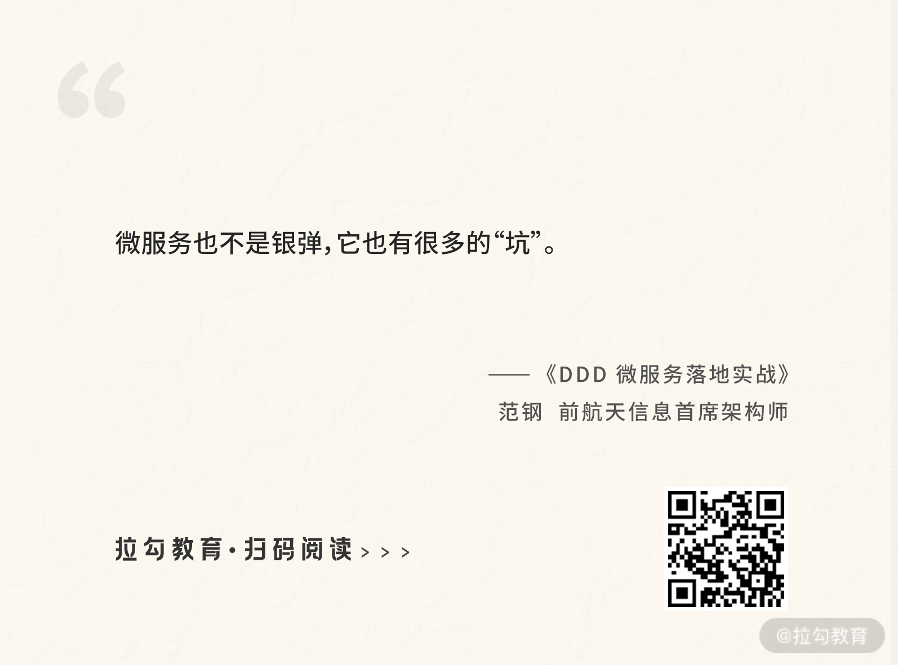
当按照模块拆分微服务以后才发现，每次变更都需要修改多个微服务，不但多个团队都要变更，还要同时打包、同时升级，不仅没有降低维护成本，还使得系统的发布比过去更麻烦，真不如不用微服务。是微服务不好吗？我又陷入了沉思。
这时我才注意到 Martin Flower 在定义微服务时提到的“小而专”，很多人理解了“小”却忽略了“专”，就会带来微服务系统难于维护的糟糕境地。这里的“专”，就是要“小团队独立维护”，也就是尽量让每次的需求变更交给某个小团队独立完成，让需求变更落到某个微服务上进行变更，唯有这样才能发挥微服务的优势。
通过这样的一番解析，才发现微服务的设计真的不仅仅是一个技术架构更迭的事情，而是对原有的设计提出了更高的要求，即“微服务内高内聚，微服务间低耦合”。如何才能更好地做到这一点呢？答案还是 DDD。
我们转型微服务的重要根源之一就是系统的复杂性，即系统规模越来越大，维护越来越困难，才需要拆分微服务。然而，拆分成微服务以后，并不意味着每个微服务都是各自独立地运行，而是彼此协作地组织在一起。这就好像一个团队，规模越大越需要一些方法来组织，而 DDD 恰恰就是那个帮助我们组织微服务的实践方法。
第 4 幕：DDD，想说爱你不容易
2018 年，经过一番挣扎，我终于说服了开发团队开始使用 DDD，在这个过程中发现，要让 DDD 在团队中用得好，还需要一个支持 DDD 与微服务的技术中台。
有了这个技术中台的支持，开发团队就可以把更多的精力放到对用户业务的理解，对业务痛点的理解，快速开发用户满意的功能并快速交付上。这样，不仅编写代码减少了，技术门槛降低了，还使得日后的变更更加容易，技术更迭也更加方便。因此，我又开始苦苦求索。
很快，Bob 大叔的整洁架构（Clean Architecture）给了我全新的思路。整洁架构最核心的是业务（图中的黄色与红色部分），即我们通过领域模型分析，最后形成的那些 Service、Entity 与 Value Object。
然而，整洁架构最关键的设计思想是通过一系列的适配器（图中的绿色部分），将业务代码与技术框架解耦。通过这样的解耦，上层业务开发人员更专注地去开发他们的业务代码，技术门槛得到降低；底层平台架构师则更低成本地进行架构演化，不断地跟上市场与技术的更迭。唯有这样，才能跟上日益激烈的市场竞争。
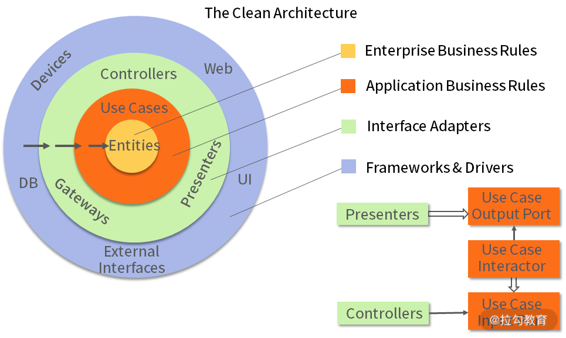
图片来自 Robert C. Martin 的《架构整洁之道》
不仅如此，我在实践摸索过程中，还创新性地提出了单 Controller、通用仓库、通用工厂，以及完美支持 DDD + 微服务的技术中台架构设计。通过这些设计，开发团队能够更好地将 DDD 落地到项目开发中，真正地打造出一支支理解业务、高质量开发与快速交付的团队。
这门课能让你学到什么？
在我的故事里，你有没有看到你自己的影子呢？或者是否会想起在开发中的种种困境呢？
比如：
- 作为微服务开发人员的你，是不是不知道如何拆分和设计？从而导致微服务的拆分不合理，使得软件维护与发布很是困难。
- 作为业务开发人员的你，当业务越来越复杂，特别是需要应对不断出现的新需求时，是不是会发现自己改不动了，从而导致开发的质量越来越差，交付速度也越来越慢？
- 作为系统架构师的你，不知道该如何通过领域建模确认和规划系统边界，抑或不知道如何搭建技术中台，支持业务的快速更迭与架构的快速演进？
所以为了带你走出目前的“窘境”，我和我的团队在使用 DDD 的过程中的实战经验，以及那些踩过的“坑”，共同构成了这个专栏的主体内容。
本专栏综合了重构、高质量软件设计与微服务，将 DDD 的实践最终落实到如何指导开发团队从现有状态逐步转型为领域驱动设计与微服务架构，并通过重构打造支持微服务、支持领域驱动的技术中台，进而实现软件开发交付速度的提升。
- 模块一，软件复杂性的应对之道（01 ~ 06）：通过一系列真实的案例，讲解了如何通过 DDD 去应对越来越复杂的业务系统，并始终保持低成本的维护与高质量的设计。学完这一模块，你将会了解 DDD 的基本概念，以及 DDD 在实际工作中该如何应用。
- 模块二，领域建模过程演练（07 ~ 09）：通过一个在线订餐系统，演练了 DDD 从业务建模、事件风暴，到微服务拆分、技术实现的完整开发过程，深入 DDD 的底层原理与具体实现。学完这一模块，你将可以掌握 DDD 的建模过程，以及在微服务系统中的实战运用。
- 模块三，支持 DDD 的微服务技术中台（10 ~ 13）：主要讲解了如何运用整洁架构，构建一个既支持 DDD，又支持微服务的技术中台，以及如何通过该中台实现业务的快速交付与技术的架构演化。学完这一模块，你将可以以架构师的角度去架构技术中台，并支持开发团队的快速交付与架构演化。
- 模块四，项目实战演练（14 ~ 15）：用两个实战案例去演练，在微服务+人工智能、嵌入式+物联网的项目中，如何运用 DDD 进行业务建模、系统规划与设计实践的过程。这部分可以更好地指导你如何将 DDD 应用到未来的实际项目中。
- 模块五，代码落地演示（16 ~ 17）：为你带来 2 个落地实战的代码演示，帮助你将知识与理论落地到开发实战中。这 2 个演示代码简洁流畅，并且复用性也比较高，你可以直接拿你需要的部分来用。
讲师寄语
最后我想说的是，虽然 DDD 的学习和应用都没有那么容易，但是在这门课里，我将像你身边的一位导师一样，用我这些年的经历、经验、实践与思考，帮你尽可能在轻松高效的状态下学好这门课，并且能够更快、更有效地将 DDD 应用到你的工作中。
相信我，无论你是高级架构师，还是初级开发人员，DDD 整体的架构方法以及其中的设计思路，都会给你的工作带来能量。
01 DDD ：杜绝软件退化的利器
2004 年，软件大师 Eric Evans 的不朽著作《领域驱动设计：软件核心复杂性应对之道》面世，从书名可以看出，这是一本应对软件系统越来越复杂的方法论的图书。然而，在当时，中国的软件业才刚刚起步，软件系统还没有那么复杂，即使维护了几年，软件退化了，不好维护了，推倒重新开发就好了。因此，在过去的那么多年里，真正运用领域驱动设计开发（DDD）的团队并不多。一套优秀的方法论，因为现实阶段原因而一直不温不火。
不过，这些年随着中国软件业的快速发展，软件规模越来越大，生命周期也越来越长，推倒重新开发的风险越来越大。这时，软件团队急切需要在较低成本的状态下持续维护一个系统很多年。然而，事与愿违。随着时间的推移，程序越来越乱，维护成本越来越高，软件退化成了无数软件团队的噩梦。
这时，微服务架构成了规模化软件的解决之道。不过，微服务对设计提出了很高的要求，强调“小而专、高内聚”，否则就不能发挥出微服务的优势，甚至可能令问题更糟糕。
因此，微服务的设计，微服务的拆分都需要领域驱动设计的指导。那么，领域驱动为什么能解决软件规模化的问题呢？ 我们先从问题的根源谈起，即软件退化。
软件退化的根源
最近 10 年的互联网发展，从电子商务到移动互联，再到“互联网+”与传统行业的互联网转型，是一个非常痛苦的转型过程。而近几年的人工智能与 5G 技术的发展，又会带动整个产业向着大数据与物联网发展，另一轮的技术转型已经拉开帷幕。
那么，在这个过程中，一方面会给我们带来诸多的挑战，另一方面又会给我们带来无尽的机会，它会带来更多的新兴市场、新兴产业与全新业务，给我们带来全新的发展机遇。
然而，在面对全新业务、全新增长点的时候，我们能不能把握住这样的机遇呢？我们期望能把握住，但每次回到现实，回到正在维护的系统时，却令人沮丧。我们的软件总是经历着这样的轮回，软件设计质量最高的时候是第一次设计的那个版本，当第一个版本设计上线以后就开始各种需求变更，这常常又会打乱原有的设计。
因此，需求变更一次，软件就修改一次，软件修改一次，质量就下降一次。不论第一次的设计质量有多高，软件经历不了几次变更，就进入一种低质量、难以维护的状态。进而，团队就不得不在这样的状态下，以高成本的方式不断地维护下去，维护很多年。
这时候，维护好原有的业务都非常不易，又如何再去期望未来更多的全新业务呢？比如，这是一段电商网站支付功能的设计，最初的版本设计质量还是不错的：
当第一个版本上线以后，很快就迎来了第一次变更，变更的需求是增加商品折扣功能，并且这个折扣功能还要分为限时折扣、限量折扣、某类商品的折扣、某个商品的折扣。当我们拿到这个需求时怎么做呢？很简单，增加一个 if 语句，if 限时折扣就怎么怎么样，if 限量折扣就怎么怎么样……代码开始膨胀了。
接着，第二次变更需要增加 VIP 会员，除了增加各种金卡、银卡的折扣，还要为会员发放各种福利，让会员享受各种特权。为了实现这些需求，我们又要在 payoff() 方法中加入更多的代码。
第三次变更增加的是支付方式，除了支付宝支付，还要增加微信支付、各种银行卡支付、各种支付平台支付，此时又要塞入一大堆代码。经过这三次变更，你可以想象现在的 payoff() 方法是什么样子了吧，变更是不是就可以结束了呢？其实不能，接着还要增加更多的秒杀、预订、闪购、众筹，以及各种返券。程序变得越来越乱而难以阅读，每次变更也变得越来越困难。
问题来了：为什么软件会退化，会随着变更而设计质量下降呢？在这个问题上，我们必须寻找到问题的根源，才能对症下药、解决问题。
要探寻软件退化的根源，先要从探寻软件的本质及其规律开始，软件的本质就是对真实世界的模拟，每个软件都能在真实世界中找到它的影子。因此，软件中业务逻辑正确与否的唯一标准就是是否与真实世界一致。如果一致，则软件是 OK 的；不一致，则用户会提 Bug、提新需求。
在这里发现了一个非常重要的线索，那就是，软件要做成什么样，既不由我们来决定，也不由用户来决定，而是由客观世界决定。用户为什么总在改需求，是因为他们也不确定客观世界的规则，只有遇到问题了他们才能想得起来。因此，对于我们来说，与其唯唯诺诺地按照用户的要求去做软件，不如主动地理解业务的基础上去分析软件，而后者会更有利于我们减少变更的成本。
那么，真实世界是怎样，我们就怎样开发软件，不就简单了吗？其实并非如此，因为真实世界是非常复杂的，要深刻理解真实世界中的这些业务逻辑是需要一个过程的。因此，我们最初只能认识真实世界中那些简单、清晰、易于理解的业务逻辑，把它们做到我们的软件里，即每个软件的第一个版本的需求总是那么清晰明了、易于设计。
然而，当我们把第一个版本的软件交付用户使用的时候，用户却会发现，还有很多不简单、不明了、不易于理解的业务逻辑没做到软件里。这在使用软件的过程中很不方便，和真实业务不一致，因此用户就会提 Bug、提新需求。
在我们不断地修复 Bug，实现新需求的过程中，软件的业务逻辑也会越来越接近真实世界，使得我们的软件越来越专业，让用户感觉越来越好用。但是，在软件越来越接近真实世界的过程中，业务逻辑就会变得越来越复杂，软件规模也越来越庞大。
你一定有这样一个认识：简单软件有简单软件的设计，复杂软件有复杂软件的设计。
比如，现在的需求就是将用户订单按照“单价 × 数量”公式来计算应付金额，那么在一个 PaymentBus 类中增加一个 payoff() 方法即可，这样的设计没有问题。不过，如果现在的需求需要在付款的过程中计算各种折扣、各种优惠、各种返券，那么我们必然会做成一个复杂的程序结构。
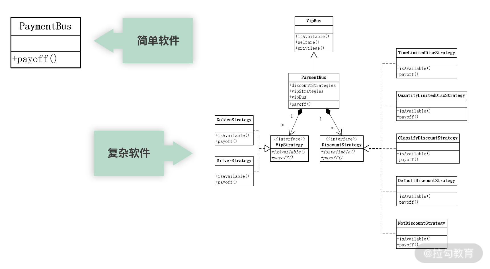
但是，真实情况却不是这样的。真实情况是，起初我们拿到的需求是那个简单需求，然后在简单需求的基础上进行了设计开发。但随着软件的不断变更，软件业务逻辑变得越来越复杂，软件规模不断扩大，逐渐由一个简单软件转变成一个复杂软件。
这时，如果要保持软件设计质量不退化，就应当逐步调整软件的程序结构，逐渐由简单的程序结构转变为复杂的程序结构。如果我们总是这样做，就能始终保持软件的设计质量，不过非常遗憾的是，我们以往在维护软件的过程中却不是这样做的，而是不断地在原有简单软件的程序结构下，往 payoff() 方法中塞代码，这样做必然会造成软件的退化。
也就是说，软件退化的根源不是软件变更，软件变更只是一个诱因。如果每次软件变更时，适时地进行解耦，进行功能扩展，再实现新的功能，就能保持高质量的软件设计。但如果在每次软件变更时没有调整程序结构，而是在原有的程序结构上不断地塞代码，软件就会退化。这就是软件发展的规律，软件退化的根源。
杜绝软件退化：两顶帽子
前面谈到，要保持软件设计质量不退化，必须在每次需求变更的时候，对原有的程序结构适当地进行调整。那么应当怎样进行调整呢？还是回到前面电商网站付款功能的那个案例，看看每次需求变更应当怎样设计。
在交付第一个版本的基础上，很快第一次需求变更就到来了。第一次需求变更的内容如下。
增加商品折扣功能，该功能分为以下几种类型：
- 限时折扣
- 限量折扣
- 对某类商品进行折扣
- 对某个商品进行折扣
- 不折扣
以往我们拿到这个需求，就很不冷静地开始改代码，修改成了如下一段代码：
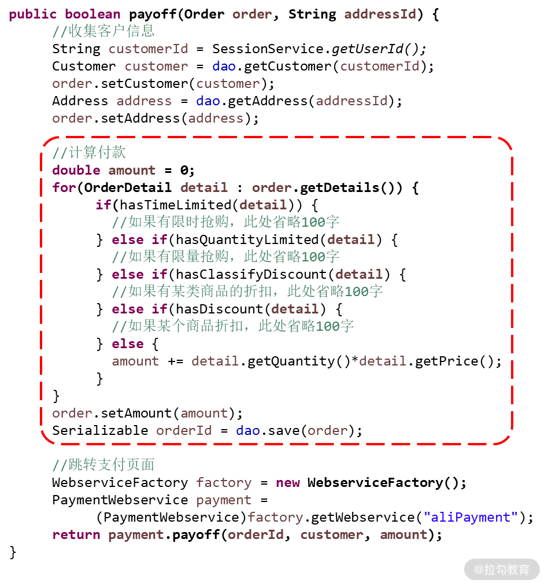
这里增加了一段 if 语句，并不是一种好的变更方式。如果每次都这样变更，那么软件必然就会退化，进入难以维护的状态。这种变更为什么就不好呢？因为它违反了“开放-封闭原则”。
开放-封闭原则（OCP） 分为开放原则与封闭原则两部分。
- 开放原则：我们开发的软件系统，对于功能扩展是开放的（Open for Extension），即当系统需求发生变更时，可以对软件功能进行扩展，使其满足用户新的需求。
- 封闭原则：对软件代码的修改应当是封闭的（Close for Modification），即在修改软件的同时，不要影响到系统原有的功能，所以应当在不修改原有代码的基础上实现新的功能。也就是说，在增加新功能的时候，新代码与老代码应当隔离，不能在同一个类、同一个方法中。
前面的设计，在实现新功能的同时，新代码与老代码在同一个类、同一个方法中了，违反了“开放-封闭原则”。怎样才能既满足“开放-封闭原则”，又能够实现新功能呢？在原有的代码上你发现什么都做不了！难道“开放-封闭原则”错了吗？
问题的关键就在于，当我们在实现新需求时，应当采用“两顶帽子”的方式进行设计，这种方式就要求在每次变更时，将变更分为两个步骤。
两顶帽子：
- 在不添加新功能的前提下，重构代码，调整原有程序结构，以适应新功能；
- 实现新的功能。
按以上案例为例，为了实现新的功能，我们在原有代码的基础上，在不添加新功能的前提下调整原有程序结构，我们抽取出了 Strategy 这样一个接口和“不折扣”这个实现类。这时，原有程序变了吗？没有。但是程序结构却变了，增加了这样一个接口，称为“可扩展点”。在这个可扩展点的基础上再实现各种折扣，既能满足“开放-封闭原则”来保证程序质量，又能够满足新的需求。当日后发生新的变更时，什么类型的折扣就修改哪个实现类，添加新的折扣类型就增加新的实现类，维护成本得到降低。

“两顶帽子”的设计方式意义重大。过去，我们每次在设计软件时总是担心日后的变更，就很不冷静地设计了很多所谓的“灵活设计”。然而，每一种“灵活设计”只能应对一种需求变更，而我们又不是先知，不知道日后会发生什么样的变更。最后的结果就是，我们期望的变更并没有发生，所做的设计都变成了摆设，它既不起什么作用，还增加了程序复杂度；我们没有期望的变更发生了，原有的程序依然不能解决新的需求，程序又被打回了原形。因此，这样的设计不能真正解决未来变更的问题，被称为“过度设计”。
有了“两顶帽子”，我们不再需要焦虑，不再需要过度设计，正确的思路应当是“活在今天的格子里做今天的事儿”，也就是为当前的需求进行设计，使其刚刚满足当前的需求。所谓的“高质量的软件设计”就是要掌握一个平衡，一方面要满足当前的需求，另一方面要让设计刚刚满足需求，从而使设计最简化、代码最少。这样做，不仅软件设计质量提高了，设计难点也得到了大幅度降低。
简而言之，保持软件设计不退化的关键在于每次需求变更的设计，只有保证每次需求变更时做出正确的设计，才能保证软件以一种良性循环的方式不断维护下去。这种正确的设计方式就是“两顶帽子”。
但是，在实践“两顶帽子”的过程中，比较困难的是第一步。在不添加新功能的前提下，如何重构代码，如何调整原有程序结构，以适应新功能，这是有难度的。很多时候，第一次变更、第二次变更、第三次变更，这些事情还能想清楚；但经历了第十次变更、第二十次变更、第三十次变更，这些事情就想不清楚了，设计开始迷失方向。
那么，有没有一种方法，让我们在第十次变更、第二十次变更、第三十次变更时，依然能够找到正确的设计呢？有，那就是“领域驱动设计”。
保持软件质量：领域驱动
前面谈到，软件的本质就是对真实世界的模拟。因此，我们会有一种想法，能不能将软件设计与真实世界对应起来，真实世界是什么样子，那么软件世界就怎么设计。如果是这样的话，那么在每次需求变更时，将变更还原到真实世界中，看看真实世界是什么样子的，根据真实世界进行变更。这样，日后不论怎么变更，经过多少轮变更，都按照这样的方法进行设计，就不会迷失方向，设计质量就可以得到保证，这就是“领域驱动设计”的思想。
那么，如何将真实世界与软件世界对应起来呢？这样的对应就包括以下三个方面的内容：
- 真实世界有什么事物，软件世界就有什么对象；
- 真实世界中这些事物都有哪些行为，软件世界中这些对象就有哪些方法；
- 真实世界中这些事物间都有哪些关系，软件世界中这些对象间就有什么关联。

真实世界与软件世界的对应图
在领域驱动设计中，就将以上三个对应，先做成一个领域模型，然后通过这个领域模型指导程序设计；在每次需求变更时，先将需求还原到领域模型中分析，根据领域模型背后的真实世界进行变更，然后根据领域模型的变更指导软件的变更，设计质量就可以得到提高。
总结
总之，软件发展的规律就是逐步由简单软件向复杂软件转变。简单软件有简单软件的设计，复杂软件有复杂软件的设计。因此，当软件由简单软件向复杂软件转变时，就需要通过两顶帽子适时地对程序结构进行调整，再实现新需求，只有这样才能保证软件不退化。然而，在变更的时候，如何调整代码以适应新的需求呢？
DDD 给了我们思路：在每次变更的时候，先回到领域模型，基于业务进行领域模型的变更。然后，再基于领域模型的变更，指导程序的变更。这样，不论经历多少次需求变更，始终能够保持设计质量不退化。这样的设计，才能保障系统始终在低成本的状态下，可持续地不断维护下去。
02 以电商支付功能为例演练 DDD
上一讲我们花了不少篇幅讲解了软件退化的根源，以及 DDD 如何解决软件退化的问题。现在，我们以电商网站的支付功能为例，来重新演练一下基于 DDD 的软件设计及其变更的过程。
运用 DDD 进行软件设计
开发人员在最开始收到的关于用户付款功能的需求描述是这样的：
- 在用户下单以后，经过下单流程进入付款功能；
- 通过用户档案获得用户名称、地址等信息；
- 记录商品及其数量，并汇总付款金额；
- 保存订单；
- 通过远程调用支付接口进行支付。
以往当拿到这个需求时，开发人员往往草草设计以后就开始编码，设计质量也就不高。
而采用领域驱动的方式，在拿到新需求以后，应当先进行需求分析，设计领域模型。 按照以上业务场景，可以分析出：
- 该场景中有“订单”，每个订单都对应一个用户；
- 一个用户可以有多个用户地址，但每个订单只能有一个用户地址；
- 此外，一个订单对应多个订单明细，每个订单明细对应一个商品，每个商品对应一个供应商。
最后，我们对订单可以进行“下单”“付款”“查看订单状态”等操作。因此形成了以下领域模型图：
有了这样的领域模型，就可以通过该模型进行以下程序设计：
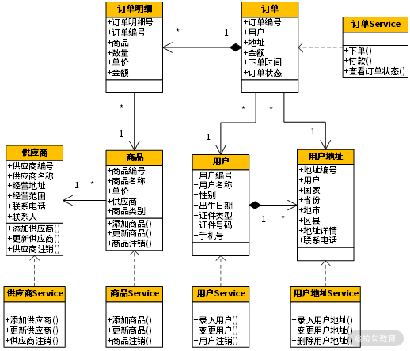
通过领域模型的指导，将“订单”分为订单 Service 与值对象，将“用户”分为用户 Service 与值对象，将“商品”分为商品 Service 与值对象……然后，在此基础上实现各自的方法。
商品折扣的需求变更
当电商网站的付款功能按照领域模型完成了第一个版本的设计后，很快就迎来了第一次需求变更，即增加折扣功能，并且该折扣功能分为限时折扣、限量折扣、某类商品的折扣、某个商品的折扣与不折扣。当我们拿到这个需求时应当怎样设计呢？很显然，在 payoff() 方法中去插入 if 语句是不 OK 的。这时，按照领域驱动设计的思想，应当将需求变更还原到领域模型中进行分析，进而根据领域模型背后的真实世界进行变更。
这是上一个版本的领域模型，现在我们要在这个模型的基础上增加折扣功能，并且还要分为限时折扣、限量折扣、某类商品的折扣等不同类型。这时，我们应当怎么分析设计呢？
首先要分析付款与折扣的关系。
付款与折扣是什么关系呢？你可能会认为折扣是在付款的过程中进行的折扣，因此就应当将折扣写到付款中。这样思考对吗？我们应当基于什么样的思想与原则来设计呢？这时，另外一个重量级的设计原则应该出场了，那就是“单一职责原则”。
单一职责原则：软件系统中的每个元素只完成自己职责范围内的事，而将其他的事交给别人去做，我只是去调用。
单一职责原则是软件设计中一个非常重要的原则，但如何正确地理解它成为一个非常关键的问题。在这句话中，准确理解的关键就在于“职责”二字，即自己职责的范围到底在哪里。以往，我们错误地理解这个“职责”就是做某一个事，与这个事情相关的所有事情都是它的职责，正因为这个错误的理解，带来了许多错误的设计，而将折扣写到付款功能中。那么，怎样才是对“职责”正确的理解呢？
“一个职责就是软件变化的一个原因”是著名的软件大师 Bob 大叔在他的《敏捷软件开发：原则、模式与实践》中的表述。但这个表述过于精简，很难深刻地理解其中的内涵，从而不能有效地提高我们的设计质量。这里我好好解读一下这句话。
先思考一下什么是高质量的代码。你可能立即会想到“低耦合、高内聚”，以及各种设计原则，但这些评价标准都太“虚”。最直接、最落地的评价标准就是，当用户提出一个需求变更时，为了实现这个变更而修改软件的成本越低，那么软件的设计质量就越高。 当来了一个需求变更时，怎样才能让修改软件的成本降低呢？如果为了实现这个需求，需要修改 3 个模块的代码，完后这 3 个模块都需要测试，其维护成本必然是“高”。那么怎样才能降到最低呢？维护 0 个模块的代码？那显然是不可能的，因此最现实的方案就是只修改 1 个模块，维护成本最低。
那么，怎样才能在每次变更的时候都只修改一个模块就能实现新需求呢？那就需要我们在平时就不断地整理代码，将那些因同一个原因而变更的代码都放在一起，而将因不同原因而变更的代码分开放，放在不同的模块、不同的类中。这样，当因为这个原因而需要修改代码时，需要修改的代码都在这个模块、这个类中，修改范围就缩小了，维护成本降低了，自然设计质量就提高了。
总之，单一职责原则要求我们在维护软件的过程中需要不断地进行整理，将软件变化同一个原因的代码放在一起，将软件变化不同原因的代码分开放。 按照这样的设计原则，回到前面那个案例中，那么应当怎样去分析“付款”与“折扣”之间的关系呢？只需要回答两个问题：
- 当“付款”发生变更时，“折扣”是不是一定要变？
- 当“折扣”发生变更时，“付款”是不是一定要变？
当这两个问题的答案是否定时，就说明“付款”与“折扣”是软件变化的两个不同的原因，那么把它们放在一起，放在同一个类、同一个方法中，合适吗？不合适，就应当将“折扣”从“付款”中提取出来，单独放在一个类中。
同样的道理：
- 当“限时折扣”发生变更的时候，“限量折扣”是不是一定要变？
- 当“限量折扣”发生变更的时候，“某类商品的折扣”是不是一定要变？
- ……
最后发现，不同类型的折扣也是软件变化不同的原因。将它们放在同一个类、同一个方法中，合适吗？通过以上分析，我们做出了如下设计：
在该设计中，将折扣功能从付款功能中独立出去，做出了一个接口，然后以此为基础设计了各种类型的折扣实现类。这样的设计，当付款功能发生变更时不会影响折扣，而折扣发生变更的时候不会影响付款。同样，当“限时折扣”发生变更时只与“限时折扣”有关，“限量折扣”发生变更时也只与“限量折扣”有关，与其他折扣类型无关。变更的范围缩小了，维护成本就降低了，设计质量提高了。这样的设计就是“单一职责原则”的真谛。
接着，在这个版本的领域模型的基础上进行程序设计，在设计时还可以加入一些设计模式的内容，因此我们进行了如下的设计：
显然，在该设计中加入了“策略模式”的内容，将折扣功能做成了一个折扣策略接口与各种折扣策略的实现类。当哪个折扣类型发生变更时就修改哪个折扣策略实现类；当要增加新的类型的折扣时就再写一个折扣策略实现类，设计质量得到了提高。
VIP 会员的需求变更
在第一次变更的基础上，很快迎来了第二次变更，这次是要增加 VIP 会员，业务需求如下。
增加 VIP 会员功能：
- 对不同类型的 VIP 会员（金卡会员、银卡会员）进行不同的折扣；
- 在支付时，为 VIP 会员发放福利（积分、返券等）；
- VIP 会员可以享受某些特权。
我们拿到这样的需求又应当怎样设计呢？同样，先回到领域模型，分析“用户”与“VIP 会员”的关系，“付款”与“VIP 会员”的关系。在分析的时候，还是回答那两个问题。
- “用户”发生变更时，“VIP 会员”是否要变？
- “VIP 会员”发生变更时，“用户”是否要变？
通过分析发现，“用户”与“VIP 会员”是两个完全不同的事物。
- “用户”要做的是用户的注册、变更、注销等操作；
- “VIP 会员”要做的是会员折扣、会员福利与会员特权；
- 而“付款”与“VIP 会员”的关系是在付款的过程中去调用会员折扣、会员福利与会员特权。
通过以上的分析，我们做出了以下版本的领域模型：
有了这些领域模型的变更，然后就可以以此作为基础，指导后面程序代码的变更了。
支付方式的需求变更
同样，第三次变更是增加更多的支付方式，我们在领域模型中分析“付款”与“支付方式”之间的关系，发现它们也是软件变化不同的原因。因此，我们果断做出了这样的设计：
而在设计实现时，因为要与各个第三方的支付系统对接，也就是要与外部系统对接。为了使第三方的外部系统的变更对我们的影响最小化，在它们中间果断加入了“适配器模式”，设计如下：
通过加入适配器模式，订单 Service 在进行支付时调用的不再是外部的支付接口，而是“支付方式”接口，与外部系统解耦。只要保证“支付方式”接口是稳定的，那么订单 Service 就是稳定的。比如：
- 当支付宝支付接口发生变更时，影响的只限于支付宝 Adapter；
- 当微信支付接口发生变更时，影响的只限于微信支付 Adapter；
- 当要增加一个新的支付方式时，只需要再写一个新的 Adapter。
日后不论哪种变更，要修改的代码范围缩小了，维护成本自然降低了，代码质量就提高了。
总结
这一讲通过以上的过程，我们演练了如何运用 DDD 进行软件的设计与变更，以及在设计与变更的过程中如何分析思考、如何评估代码、如何实现高质量。后面，我们将演练如何将领域模型的设计进一步落实到软件系统的微服务设计与数据库设计。
03 DDD 是如何落地到数据库设计的？
过去，系统的软件设计是以数据库设计为核心，当需求确定下来以后，团队首先开始进行数据库设计。因为数据库是各个模块唯一的接口，当整个团队将数据库设计确定下来以后，就可以按照模块各自独立地进行开发了，如下图所示。
在上面的过程中，为了提高团队开发速度，尽量让各个模块不要交互，从而达到各自独立开发的效果。但是，随着系统规模越来越大，业务逻辑越来越复杂，我们越来越难于保证各个模块独立不交互了。
随着软件业的不断发展，软件系统变得越来越复杂，各个模块间的交互也越来越频繁，这时，原有的设计过程已经不能满足我们的需要了。 因为如果要先进行数据库设计，但数据库设计只能描述数据结构，而不能描述系统对这些数据结构的处理。因此，在第一次对整个系统的梳理过程中，只能梳理系统的所有数据结构，形成数据库设计；接着，又要再次梳理整个系统，分析系统对这些数据结构的处理过程，形成程序设计。为什么不能一次性地把整个系统的设计梳理到位呢？
现如今，我们已经按照面向对象的软件设计过程来分析设计系统了。当开始需求分析时，首先进行用例模型的设计，分析整个系统要实现哪些功能；接着进行领域模型的设计，分析系统的业务实体。在领域模型分析中，采用类图的形式，每个类可以通过它的属性来表述数据结构，又可以通过添加方法来描述对这个数据结构的处理。因此，在领域模型的设计过程中，既完成了对数据结构的梳理，又确定了系统对这些数据结构的处理，这样就把两项工作一次性地完成了。
在这个设计过程中，其核心是领域模型的设计。以领域模型作为核心，可以指导系统的数据库设计与程序设计，此时，数据库设计就弱化为了领域对象持久化设计的一种实现方式。
领域对象持久化的思想
什么叫领域对象的持久化呢？在当今软件架构设计的主流思想中，面向对象设计成了主流思想，在整个系统运行的过程中，所有的数据都是以领域对象的形式存在的。譬如：
- 要插入一条记录就是创建一个领域对象；
- 要更新一条记录就是根据 key 值去修改相应的领域对象；
- 删除数据则是摧毁这个领域对象。
假如我们的服务器是一台超级强大的服务器，那实际上不需要任何数据库，直接操作这些领域对象就可以了，但在现实世界中没有那么强大的服务器。因此，必须将暂时不用的领域对象持久化存储到磁盘中，而数据库只是这种持久化存储的一种实现方式。
按照这种设计思想，我们将暂时不使用的领域对象从内存中持久化存储到磁盘中。当日后需要再次使用这个领域对象时，根据 key 值到数据库查找到这条记录，然后将其恢复成领域对象，应用程序就可以继续使用它了，这就是领域对象持久化存储的设计思想。
所以，今天的数据库设计，实际上就是将领域对象的设计按照某种对应关系，转换成数据库的设计。同时，随着整个产业的大数据转型，今后的数据库设计思想也将发生巨大的转变，有可能数据库就不一定是关系型数据库了，也许是 NoSQL 数据库或者大数据平台。数据库的设计也不一定遵循 3NF（第三范式）了，可能会增加更多的冗余，甚至是宽表。
数据库设计在发生剧烈的变化，但唯一不变的是领域对象。这样，当系统在大数据转型时，可以保证业务代码不变，变化的是数据访问层（DAO）。这将使得日后大数据转型的成本更低，让我们更快地跟上技术快速发展的脚步。
领域模型的设计
此外，这里有个有趣的问题值得探讨：领域模型的设计到底是谁的职责，是需求分析人员还是设计开发人员？我认为，它是两个角色相互协作的产物。而未来敏捷开发的组织形成，团队将更加扁平化。过去是需求分析人员做需求分析，然后交给设计人员设计开发，这种方式就使得软件设计质量低下而结构臃肿。未来“大前端”的思想将支持更多设计开发人员直接参与需求分析，实现从需求分析到设计开发的一体化组织形式。这样，领域模型就成为了设计开发人员快速理解需求的利器。
总之，**DDD 的数据库设计实际上已经变成了：以领域模型为核心，如何将领域模型转换成数据库设计的过程。**那么怎样进行转换呢？在领域模型中是一个一个的类，而在数据库设计中是一个一个的表，因此就是将类转换成表的过程。

上图是一个绩效考核系统的领域模型图，该绩效考核系统首先进行自动考核，发现一批过错，然后再给一个机会，让过错责任人对自己的过错进行申辩。这时，过错责任人可以填写一张申辩申请单，在申辩申请单中有多个明细，每个明细对应一个过错行为，每个过错行为都对应了一个过错类型，这样就形成了一个领域模型。
接着，要将这个领域模型转换成数据库设计，怎么做呢？很显然，领域模型中的一个类可以转换成数据库中的一个表，类中的属性可以转换成表中的字段。但这里的关键是如何处理类与类之间的关系，如何转换成表与表之间的关系。这时候，就有 5 种类型的关系需要转换，即传统的 4 种关系 + 继承关系。
传统的 4 种关系
传统的关系包含一对一、多对一、一对多、多对多这 4 种，它们既存在于类与类之间，又存在于表与表之间，所以可以直接进行转换。
1. 一对一关系
在以上案例中，“申辩申请单明细”与“过错行为”就是一对“一对一”关系。在该关系中，一个“申辩申请单明细”必须要对应一个“过错行为”，没有一个“过错行为”的对应就不能成为一个“申辩申请单明细”。这种约束在数据库设计时，可以通过外键来实现。但是，一对一关系还有另外一个约束，那就是一个“过错行为”最多只能有一个“申辩申请单明细”与之对应。
也就是说，一个“过错行为”可以没有“申辩申请单明细”与之对应，但如果有，最多只能有一个“申辩申请单明细”与之对应，这个约束暗含的是一种唯一性的约束。因此，将过错行为表中的主键，作为申辩申请单明细表的外键，并将该字段升级为申辩申请单明细表的主键。
2. 多对一关系
是日常的分析设计中最常见的一种关系。在以上案例中，一个过错行为对应一个税务人员、一个纳税人与一个过错类型；同时，一个税务人员，或纳税人，或过错类型，都可以对应多个过错行为。它们就形成了“多对一”关系。在数据库设计时，通过外键就可以建立这种“多对一”关系。因此，我们进行了如下数据库的设计：

多对一关系在数据库设计上比较简单，然而落实到程序设计时，需要好好探讨一下。比如，以上案例，在按照这样的方式设计以后，在查询时往往需要在查询过错行为的同时，显示它们对应的税务人员、纳税人与过错类型。这时，以往的设计是增加一个 join 语句。然而，这样的设计在随着数据量不断增大时，查询性能将受到极大的影响。
也就是说，join 操作往往是关系型数据库在面对大数据时最大的瓶颈之一。因此，一个更好的方案就是先查询过错行为表，分页，然后再补填当前页的其他关联信息。这时，就需要在“过错行为”这个值对象中通过属性变量，增加对税务人员、纳税人与过错类型等信息的引用。
3. 一对多关系
该关系往往表达的是一种主-子表的关系。譬如，以上案例中的“申辩申请单”与“申辩申请单明细”就是一对“一对多”关系。除此之外，订单与订单明细、表单与表单明细，都是一对多关系。一对多关系在数据库设计上比较简单，就是在子表中增加一个外键去引用主表中的主键。比如本案例中，申辩申请单明细表通过一个外键去引用申辩申请单表中的主键，如下图所示。

除此之外，在程序的值对象设计时，主对象中也应当有一个集合的属性变量去引用子对象。如本例中，在“申辩申请单”值对象中有一个集合属性去引用“申辩申请单明细”。这样，当通过申辩申请单号查找到某个申辩申请单时，同时就可以获得它的所有申辩申请单明细，如下代码所示：
```java
public class Sbsqd {
private Set<SbsqdMx> sbsqdMxes;
public void setSbsqdMxes(Set<SbsqdMx> sbsqdMxes){
this.sbsqdMxes = sbsqdMxes;
}
public Set<SbsqdMx> getSbsqdMxes(){
return this.sbsqdMxes;
}
}
4. 多对多关系
比较典型的例子就是“用户角色”与“功能权限”。一个“用户角色”可以申请多个“功能权限”；而一个“功能权限”又可以分配给多个“用户角色”使用，这样就形成了一个“多对多”关系。这种多对多关系在对象设计时，可以通过一个“功能-角色关联类”来详细描述。因此，在数据库设计时就可以添加一个“角色功能关联表”，而该表的主键就是关系双方的主键进行的组合，形成的联合主键，如下图所示：

以上是领域模型和数据库都有的 4 种关系。因此，在数据库设计时，直接将相应的关系转换成数据库设计就可以了。同时，在数据库设计时还要将它们进一步细化。如在领域模型中，不论对象还是属性，在命名时都采用中文，这样有利于沟通与理解。但到了数据库设计时，就要将它们细化为英文命名，或者汉语拼音首字母，同时还要确定它们的字段类型与是否为空等其他属性。
继承关系的 3 种设计
第 5 种关系就不太一样了：继承关系是在领域模型设计中有，但在数据库设计中却没有。 如何将领域模型中的继承关系转换成数据库设计呢？有 3 种方案可以选择。
1. 继承关系的第一种方案
首先，看看以上案例。“执法行为”通过继承分为“正确行为”和“过错行为”。如果这种继承关系的子类不多（一般就 2 ~ 3 个），并且每个子类的个性化字段也不多（3 个以内）的话，则可以使用一个表来记录整个继承关系。在这个表的中间有一个标识字段，标识表中的每条记录到底是哪个子类，这个字段的前面部分罗列的是父类的字段，后面依次罗列各个子类的个性化字段。
采用这个方案的优点是简单，整个继承关系的数据全部都保存在这个表里。但是，它会造成“表稀疏”。在该案例中，如果是一条“正确行为”的记录，则字段“过错类型”与“扣分”永远为空；如果是一条“过错行为”的记录，则字段“加分”永远为空。假如这个继承关系中各子类的个性化字段很多，就会造成该表中出现大量字段为空，称为“表稀疏”。在关系型数据库中，为空的字段是要占用空间的。因此，这种“表稀疏”既会浪费大量存储空间，又会影响查询速度，是需要极力避免的。所以，当子类比较多，或者子类个性化字段多的情况是不适合该方案（第一种方案）的。
2. 继承关系的第二种方案
如果执法行为按照考核指标的类型进行继承，分为“考核指标1”“考核指标2”“考核指标3”……如下图所示：
并且每个子类都有很多的个性化字段，则采用前面那个方案就不合适了。这时，用另外两个方案进行数据库设计。其中一个方案是将每个子类都对应到一个表，有几个子类就有几个表，这些表共用一个主键，即这几个表的主键生成器是一个，某个主键值只能存在于某一个表中，不能存在于多个表中。每个表的前面是父类的字段，后面罗列各个子类的字段，如下图所示：
如果业务需求是在前端查询时，每次只能查询某一个指标，那么采用这种方案就能将每次查询落到某一个表中，方案就最合适。但如果业务需求是要查询某个过错责任人涉及的所有指标，则采用这种方案就必须要在所有的表中进行扫描，那么查询效率就比较低，并不适用。
3. 继承关系的第三种方案
如果业务需求是要查询某个过错责任人涉及的所有指标，则更适合采用以下方案，将父类做成一个表，各个子类分别对应各自的表（如图所示）。这样，当需要查询某个过错责任人涉及的所有指标时，只需要查询父类的表就可以了。如果要查看某条记录的详细信息，再根据主键与类型字段，查询相应子类的个性化字段。这样，这种方案就可以完美实现该业务需求。
综上所述，将领域模型中的继承关系转换成数据库设计有 3 种方案，并且每个方案都有各自的优缺点。因此，需要根据业务场景的特点与需求去评估，选择哪个方案更适用。
NoSQL 数据库的设计
前面我们讲的数据库设计，还是基于传统的关系型数据库、基于第三范式的数据库设计。但是，随着互联网高并发与分布式技术的发展，另一种全新的数据库类型孕育而生，那就是NoSQL 数据库。正是由于互联网应用带来的高并发压力，采用关系型数据库进行集中式部署不能满足这种高并发的压力，才使得分布式 NoSQL 数据库得到快速发展。
也正因为如此，NoSQL 数据库与关系型数据库的设计套路是完全不同的。关系型数据库的设计是遵循第三范式进行的，它使得数据库能够大幅度降低冗余，但又从另一个角度使得数据库查询需要频繁使用 join 操作，在高并发场景下性能低下。
所以，NoSQL 数据库的设计思想就是尽量干掉 join 操作，即将需要 join 的查询在写入数据库表前先进行 join 操作，然后直接写到一张单表中进行分布式存储，这张表称为“宽表”。这样，在面对海量数据进行查询时，就不需要再进行 join 操作，直接在这个单表中查询。同时，因为 NoSQL 数据库自身的特点，使得它在存储为空的字段时不占用空间，不担心“表稀疏”，不影响查询性能。
因此，NoSQL 数据库在设计时的套路就是，尽量在单表中存储更多的字段，只要避免数据查询中的 join 操作，即使出现大量为空的字段也无所谓了。

增值税发票票样图
正因为 NoSQL 数据库在设计上有以上特点，因此将领域模型转换成 NoSQL 数据库时，设计就完全不一样了。比如，这样一张增值税发票，如上图所示，在数据库设计时就需要分为发票信息表、发票明细表与纳税人表，而在查询时需要进行 4 次 join 才能完成查询。但在 NoSQL 数据库设计时，将其设计成这样一张表：
{ _id: ObjectId(7df78ad8902c)
fpdm: '3700134140', fphm: '02309723‘,
kprq: '2016-1-25 9:22:45',
je: 70451.28, se: 11976.72,
gfnsr: {
nsrsbh: '370112582247803',
nsrmc:'联通华盛通信有限公司济南分公司',…
},
xfnsr: {
nsrsbh: '370112575587500',
nsrmc:'联通华盛通信有限公司济南分公司',…
},
spmx: [
{ qdbz:'00', wp_mc:'蓝牙耳机 车语者S1 蓝牙耳机', sl:2, dj:68.37,… },
{ qdbz:'00', wp_mc:'车载充电器 新在线', sl:1, dj:11.11,… },
{ qdbz:'00', wp_mc:'保护壳 非尼膜属 iPhone6 电镀壳', sl:1, dj:24,… }
]
}
在该案例中，对于“一对一”和“多对一”关系，在发票信息表中通过一个类型为“对象”的字段来存储，比如“购方纳税人（gfnsr）”与“销方纳税人（xfnsr）”字段。对于“一对多”和“多对多”关系，通过一个类型为“对象数组”的字段来存储，如“商品明细（spmx）”字段。在这样一个发票信息表中就可以完成对所有发票的查询，无须再进行任何 join 操作。
同样，采用 NoSQL 数据库怎样实现继承关系的设计呢？由于 NoSQL 数据库自身的特点决定了不用担心“表稀疏”，同时要避免 join 操作，所以比较适合采用第一个方案，即将整个继承关系放到同一张表中进行设计。这时，NoSQL 数据库的每一条记录可以有不一定完全相同的字段，可以设计成这样：
{ _id: ObjectId(79878ad8902c),
name: ‘Jack’,
type: ‘parent’,
partner: ‘Elizabeth’,
children: [
{ name: ‘Tom’, gender: ‘male’ },
{ name: ‘Mary’, gender: ‘female’}
]
},
{ _id: ObjectId(79878ad8903d),
name: ‘Bob’,
type: ‘kid’,
mother: ‘Anna’,
father: ‘David’
}
以上案例是一个用户档案表，有两条记录：Jack 与 Bob。但是，Jack 的类型是“家长”，因此其个性化字段是“伴侣”与“孩子”；而 Bob 的类型是“孩子”，因此他的个性化字段是“父亲”与“母亲”。显然，在 NoSQL 数据库设计时就会变得更加灵活。
总结
将领域模型落地到系统设计包含 2 部分内容，本讲演练了第一部分内容——从 DDD 落实到数据库设计的整个过程：
- 传统的 4 种关系可以直接转换；
- 继承关系有 3 种设计方案；
- 转换成 NoSQL 数据库则是完全不同的思路。
有了 DDD 的指导，可以帮助我们理清数据间的关系，以及对数据的操作。 不仅如此，在未来面对大数据转型时更加从容。
04 领域模型是如何指导程序设计的？
基于 DDD 的程序设计，就是将前面设计的领域模型，映射成数据架构中的程序设计，从而通过领域驱动提高软件设计质量。那么，应当怎样进行映射，让领域模型指导程序设计呢？要将领域模型映射到程序设计，最终都会落实到 3 种类型的对象设计：服务、实体和值对象。
服务、实体与值对象
建领域模型的第一步就是需要区分出服务、实体与值对象。
服务（Service）
服务，标识的是那些在领域对象之外的操作与行为。 在 DDD 中，“服务”通常承担了两种类型的职责：接收用户的请求和执行某些操作。当用户在系统界面中进行一些操作时，就会向系统发送请求。这时，是由“服务”首先去接收用户的这些请求，然后再根据需求去执行相应的方法。在执行这些方法的过程中，“服务”会去操作相应的实体与值对象。最后，当所有操作都完成以后，再将实体或值对象中的数据持久化到数据库中。
譬如，当用户需要下单的时候，就会从前端发起一个“下单”请求。该请求被“订单”Service 接收到，并执行下单的相应操作。在执行过程中，“订单”Service 会对“订单”实体中的数据进行校验，完成各种数据操作，最后将其保存到数据库中。
实体（Entity）
实体，就是那些通过一个唯一标识字段来区分真实世界中的每一个个体的领域对象。例如，在学籍管理系统中的“学员”对象就是一个实体，它通过标识字段“学员编号”将每一个学员进行了区分，通过某个学员编号就能唯一地标识某个学员；并且，这个学员有许多属性，如姓名、性别、年龄等，这些属性也是随着时间不断变化。这样的设计就叫作“实体”。
值对象
值对象，代表的是真实世界中那些一成不变的、本质性的事物，这样的领域对象叫作 “值对象”，如地理位置、行政区划、币种、行业、职位等。
实体和值对象的区分
在 DDD 中，对实体与值对象进行了严格的区分。可变性是实体的特点，而不变性则是值对象的本质。例如，北京是一个城市，架构师是一个职务，人民币是一个币种，这些事物的特性是永远不变的。
在实际项目中，我们可以根据业务需求的不同，灵活选用实体还是值对象。比如，在线订餐系统中，根据业务需求的不同，菜单既可以设计成实体，也可以设计成值对象。例如，“宫保鸡丁”是一个菜品，如果将其按照值对象设计，则整个系统中“宫保鸡丁”只有一条记录，所有饭店的菜单如果有这道菜，都是引用的这条记录；如果按照实体进行设计，则是认为每个饭店的“宫保鸡丁”都是不同的，比如每个饭店的“宫保鸡丁”的价格都是不尽相同的。因此，将其设计成有多条记录、有各自不同的 ID，每个饭店都是使用自己的“宫保鸡丁”。
贫血模型 vs 充血模型
服务、实体与值对象是领域驱动设计的基本元素。然而，要将业务领域模型最终转换为程序设计，还要加入相应的设计。通常，将业务领域模型转换为程序设计，有两种设计思路：贫血模型与充血模型。
贫血模型与充血模型
事情是这样的：2004 年，软件大师 Eric Evans 发表了他的不朽著作《领域驱动设计》。虽然已经过去十多年了，这本书直到今天依然对我们有相当大的帮助。接着，另一位软件大师 Martin Fowler 在自己的博客中提出了“贫血模型”的概念。这位“马大叔”有一个非常大的特点，那就是软件行业中各种名词都是他发明的，包括如今业界影响巨大的软件重构、微服务，也是他的杰作。然而，马大叔在提出“贫血模型”的时候，却将其作为反模式提出来批评：所谓的“贫血模型”，就是在软件设计中，有很多的 POJO（Plain Ordinary Java Object）对象，它们除了有一堆 get/set 方法，几乎没有任何业务逻辑。这样的设计被称为“贫血模型”。

如上图所示，在领域模型中有 VIP 会员的领域对象，该对象除了有一堆属性以外，还有“会员打折”“会员福利”“会员特权”等方法。如果将该领域模型按照贫血模型进行设计，就会设计一个 VIP 会员的实体对象与 Service，实体对象包含该对象的所有属性，以及这些属性包含的数据；然后，将所有的方法都放入 Service 中，在调用它们的时候，必须将领域对象作为参数进行传输。这样的设计，将领域对象中的这些方法，以及这些方法在执行过程中所需的数据，割裂到两个不同的对象中，打破了对象的封装性。它会带来什么问题呢？
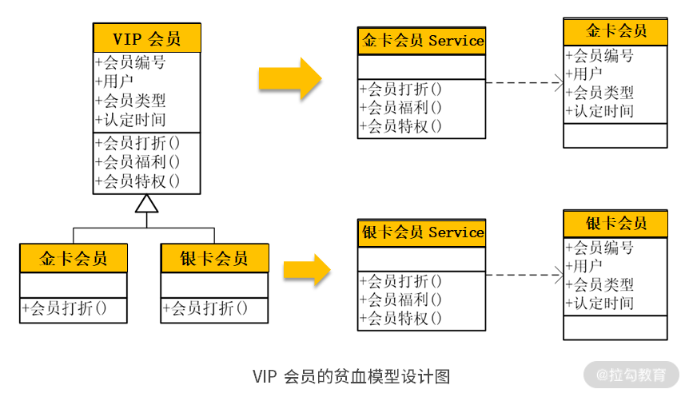
如上图所示，在领域模型中的 VIP 会员通过继承分为了“金卡会员”与“银卡会员”。如果将该领域模型按照贫血模型进行设计，则会设计出一个“金卡会员”的实体对象与 Service，同时设计出一个“银卡会员”的实体对象与 Service。“金卡会员”的实体对象应当调用“金卡会员”的 Service，如果将“金卡会员”的实体对象去调用了“银卡会员”的 Service，系统就会出错。所以，除了进行以上设计以外，还需要有一个客户程序去判断，当前的实体对象是“金卡会员”还是“银卡会员”？这时，系统变更就变得没有那么灵活了。
比如，现在需要在原有基础上，再增加一个“铂金会员”，那么不仅要增加一个“铂金会员”的实体对象与 Service，还要修改客户程序的判断，系统变更成本就会提高。
针对贫血模型的问题，马大叔提出了“充血模型”的概念。所谓“充血模型”，就是将领域模型的原貌直接转换为程序中领域对象的设计。这时，各种业务操作就不再在“服务”中实现了，而是在领域对象中实现。如图所示，在程序设计时，既有父类的“VIP 会员”，又有子类“金卡会员”与“银卡会员”。
但充血模型与贫血模型不同的是：
- 那些在领域对象中的方法也同样保留到了程序设计的实体对象中，这样，通过继承，虽然“金卡会员”与“银卡会员”都有“会员打折”，但“金卡会员”的“会员打折”与“银卡会员”的“会员打折”是不一样的；
- 虽然在充血模型中也有 Service，里面也有“会员打折”“会员福利”“会员特权”等方法，但是充血模型的 Service 只干一件非常简单的事，那就是接收到用户的请求后，就直接去调用实体对象中的相应方法，其他的什么都不干。
这样，“VIP 会员”Service 不需要去关注现在调用的是“金卡会员”还是“银卡会员”，它只需要去调用“会员打折”就行了：
- 如果当前拿到的是“金卡会员”，就是执行“金卡会员”的“会员打折”；
- 如果当前拿到的是“银卡会员”，就是执行“银卡会员”的“会员打折”；
- 如果要再增加一个“铂金会员”，就只需要写一个“铂金会员”的子类，重写“会员打折”方法，而“VIP 会员”Service 不需要做任何修改，变更的维护成本就大大降低了。
两种设计思路的优劣比较
采用充血模型的设计，有诸多的好处：
- 它保持了领域模型的原貌，领域模型什么样，就直接转换成程序的设计，这样，当领域模型在随着业务变更而频繁甚至大幅度调整时，可以比较直接地映射成程序的变更，代码修改起来比较直接；
- 如以上案例所述，充血模型保持了对象的封装性，使得领域模型在面临多态、继承等复杂结构时，易于变更。
充血模型在理论上非常优雅，然而在工程实践上却不尽人意。而贫血模型虽然从表面上看简单粗暴，但在工程实践上依然有许多优异的特性，主要体现在以下 3 个方面。
1. 贫血模型比充血模型更加简单易行
充血模型是将领域模型的原貌直接映射成了程序设计，因此在程序设计时需要增加更多的诸如仓库、工厂的组件，对设计能力与架构提出了更高的要求。
譬如，现在要设计一个订单系统，在领域建模时，每个订单需要有多个订单明细，还要对应相关的客户信息、商品信息。因此，在装载一个订单时，需要同时查出它的订单明细，以及对应的客户信息、商品信息，这些需要有强大的订单工厂进行装配；装载订单以后，还需要放到仓库中进行缓存，需要订单仓库具备缓存的能力；此外，在保存订单的时候，还需要同时保存订单和订单明细，并将它们放到一个事务中。所有这些都需要强有力的技术平台的支持。

相反，贫血模型就显得更加贫民化。在贫血模型中，MVC 层直接调用 Service，Service 通过DAO进行数据访问。在这个过程中，每个 DAO 都只查询数据库中的某个表，然后直接交给 Service 去使用，去完成各种处理。
以订单系统为例，订单有订单 DAO，负责查询订单；订单明细有订单明细 DAO，负责查询订单明细。它们查询出来以后，不需要装配，而是直接交给订单 Service 使用。在保存订单时，订单 DAO 负责保存订单，订单明细 DAO 负责保存订单明细。它们都是通过订单 Service 进行组织，并建立事务。贫血模型不需要仓库，不需要工厂，也不需要缓存，一切都显得那么简单粗暴但一目了然。

2. 充血模型需要具备更强的设计与协作能力
充血模型的设计实现给开发人员提出了更高的能力要求，需要具有更强的 OOA/D（面向对象分析/设计） 能力、分析业务、业务建模与设计能力。譬如，在订单系统这个案例中，开发人员要先进行领域建模，分析清楚该场景中的订单、订单明细、用户、商品等领域对象的关联关系；还要分析各个领域对象在真实世界中都有什么行为，对应到软件设计中都有什么方法，在此基础上再进行设计开发。
同时，充血模型需要有较强的团队协作能力。比如，在该场景中，当订单在进行创建时，需要对用户以及用户地址的相关信息进行查询。此时，订单 Service 不能直接去查询用户和用户地址的相关表，而是去调用用户 Service 的相关接口，由用户 Service 去完成对用户相关表的查询。这时候，开发订单模块的团队，需要向开发用户模块的团队提出接口需求。
与充血模型相比，贫血模型就比较简单与直接。所有业务处理过程都交给 Service 去完成。在业务处理过程中，需要哪些表的数据，就去调用相应的 DAO：需要订单就找订单 DAO；需要用户就找用户 DAO；需要商品就找商品 DAO。程序简单就易于理解，日后维护起来也比较容易。总之，充血模型就有一种贵族气质，“讲究人”——昂贵而高雅；贫血模型就是“草根”——简单而直接。

3. 贫血模型更容易应对复杂的业务处理场景
充血模型在进行设计时，是将所有的业务处理过程在领域对象的相应方法中实现的。这样的设计，如果业务处理过程比较简单，还可以从容应对；但如果是面对非常复杂的业务处理场景时，就有一些力不从心。在这些复杂的业务处理场景中，如果采用贫血模型，可以将复杂的业务处理场景，划分成多个相对独立的步骤；然后将这些独立的步骤分配给多个 Service 串联起来执行。这样，各个步骤就是以一种松耦合的形式串联地组织在一起，以领域对象作为参数在各个Service 中进行传递。
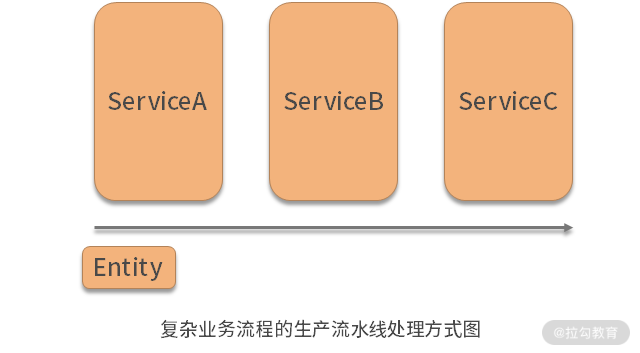
在这样的设计中，领域对象既可以作为各个方法调用的输入，又可以作为它们的输出。比如，在上图的案例中，领域对象作为参数首先调用 ServiceA；调用完以后将结果数据写入领域对象的前 5 个字段，传递给 ServiceB；ServiceB 拿到领域对象以后，既可以作为输入去读取前 5 个字段，又可以作为输出将执行结果写入中间 5 个字段；最后，将领域对象传递给 ServiceC，执行完操作以后去写后面 5 个字段；当所有字段都写入完成以后，存入数据库，完成所有操作。
在这个过程中，如果日后需要变更，要增加一个处理过程，或者去掉一个处理过程，再或者调整它们的执行顺序，都是比较容易的。这样的设计要求处理过程必须在领域对象之外，在 Service 中实现。然而，如果采用的是充血模型的设计，就必须要将所有的处理过程都写入这个领域对象中去实现，无论这些处理过程有多复杂。这样的设计势必会加大日后变更维护的成本。
所以，不论是贫血模型还是充血模型，它们各有优缺点，到底应当采用贫血模型还是充血模型，争执了这么多年，但我认为它们并不是熊掌和鱼的关系，我们应当把它们结合起来，取长补短，合理利用。关键是要先弄清楚它们的差别，也就是业务逻辑应当在哪里实现：贫血模型的业务逻辑在 Service 中实现，但充血模型是在领域对象中实现。清楚了这一点，在今后的软件设计时，可以将那些需要封装的业务逻辑放到领域对象中，按照充血模型去设计；除此之外的其他业务逻辑放到 Service 中，按照贫血模型去设计。
那么，哪些业务逻辑需要封装起来按照充血模型设计呢？这个仁者见仁智者见智，我总结了以下几个方面的内容。
- 如前所述，如果在领域模型中出现了类似继承、多态的情况，则应当将继承与多态的部分以充血模型的形式在领域对象中实现。
- 如果在软件设计的过程中需要将一些类型或者编码进行转换，则将转换的部分封装在领域对象中。例如，一些布尔类型的字段，在数据库中是没有布尔类型的，不同的人习惯不同，有的人习惯采用 0 和 1，有的人习惯用 Y 和 N，或者 T 和 F，这样就会给上层开发人员诸多的困惑，到底哪些字段是 Y 和 N，哪些是 T 和 F。这时就可以将它们封装在领域对象中，然后转换为布尔类型展现给上层开发，按充血模型来设计。
- 希望在软件设计中能更好地表现领域对象之间的关系。比如，在查询订单的时候想要显示每个订单对应的用户，以及每个订单包含的订单明细。这时，除了要将领域模型中的关系体现在领域对象的设计外，还需要有仓库与工厂的支持。如装载订单时需要同时查询订单和订单明细，并通过订单工厂装配；查询订单以后需要通过工厂补填相应的用户与明细。
- 最后一种情况被称为“聚合”，也就是在真实世界中那些代表整体与部分的事物。比如，在订单中有订单和订单明细，一个订单对应多个订单明细。从业务关系来说，它们是整体与部分的关系，订单明细是订单的一个部分，没有了这张订单，它的订单明细就没有任何意义了。这时，我们在操作订单的时候，就应当将对订单明细的操作封装在订单对象中，按照充血模型的形式进行设计。
总结
本讲讲解了基于 DDD 的程序设计，领域模型分析只是软件需求分析的中间过程，它最终需要落地到程序设计。领域模型的最终落地是三种类型的对象：服务、实体与值对象，而设计思路有两种：贫血模型与充血模型。通过这样的落地，领域模型就能很好地指导程序开发，提高设计质量。
在 DDD 落地的过程中，不必过于纠结到底是实体还是值对象，应当将更多的精力集中于对业务的分析与理解。同时，将贫血模型与充血模型结合起来，取长补短、合理编码。
然而，领域模型的落地还有诸多难题需要解决。因此，下一讲将进一步讲解 DDD 的聚合、仓库与工厂及其设计思路。
05 聚合、仓库与工厂：傻傻分不清楚
上一讲，我们知道了，要将领域模型最终转换为程序设计，可以落实到 3 种类型的对象设计，即服务、实体与值对象，然后进行一些贫血模型与充血模型的设计思路。但这远远不够，还需要有聚合、仓库与工厂的设计。
聚合的设计思路
聚合是领域驱动设计中一项非常重要的设计与概念，它表达的是真实世界中那些整体与部分的关系，比如订单与订单明细、表单与表单明细、发票与发票明细。以订单为例，在真实世界中，订单与订单明细本来是同一个事物，订单明细是订单中的一个属性。但是，由于在关系型数据库中没有办法在一个字段中表达一对多的关系，因此必须将订单明细设计成另外一张表。
尽管如此，在领域模型的设计中，我们又将其还原到真实世界中，以“聚合”的形式进行设计。在领域模型中，即将订单明细设计成订单中的一个属性，具体代码如下：
public class Order {
private Set<Items> items;
public void setItems(Set<Item> items){
this.items = items;
}
public Set<Item> getItems(){
return this.items;
}
……
}
有了这样的设计，在创建订单的时候，将不再单独创建订单明细了，而是将订单明细创建在订单中；在保存订单的时候，应当同时保存订单表与订单明细表，并放在同一事务中；在查询订单时，应当同时查询订单表与订单明细表，并将其装配成一个订单对象。这时候，订单就作为一个整体在进行操作，不需要再单独去操作订单明细。
也就是说，对订单明细的操作是封装在订单对象内部的设计实现。对于客户程序来说，去使用订单对象就好了，这就包括了作为属性去访问订单对象中的订单明细，而不再需要关注它内部是如何操作的。
按照以下思路进行的设计就是聚合：
- 当创建或更新订单时，在订单对象中填入或更新订单的明细就好了；
- 当保存订单时，只需要将订单对象作为整体去保存，而不需要关心订单数据是怎么保存的、保存到哪几张表中、是不是有事务，保存数据库的所有细节都封装在了订单对象内部；
- 当删除订单时，删除订单对象就好了，至于如何删除订单明细，是订单对象内部的实现，外部的程序不需要关注；
- 当查询或装载订单时，客户程序只需要根据查询语句或 ID 查询订单对象就好了，查询程序会在查询过程中自动地去补填订单对应的订单明细。
聚合体现的是一种整体与部分的关系。正是因为有这样的关系，在操作整体的时候，整体就封装了对部分的操作。但并非所有对象间的关系都有整体与部分的关系，而那些不是整体与部分的关系是不能设计成聚合的。因此，正确地识别聚合关系就变得尤为重要。
所谓的整体与部分的关系，就是当整体不存在时，部分就变得没有了意义。部分是整体的一个部分，与整体有相同的生命周期。比如，只有创建了这张订单，才能创建它的订单明细；如果没有了这张订单，那么它的订单明细就变得没有意义，就需要同时删除掉。这样的关系才具备整体与部分的关系，才是聚合。
譬如：订单与用户之间的关系就不是聚合。因为用户不是创建订单时才存在的，而是在创建订单时早就存在了；当删除订单时，用户不会随着订单的删除而删除，因为删除了订单，用户依然还是那个用户。
那么，饭店和菜单的关系是不是聚合关系呢？关键要看系统如何设计。如果系统设计成每个饭店都有各不相同的菜单，每个菜单都是隶属于某个饭店，则饭店和菜单是聚合关系。这种设计让各个饭店都有“宫保鸡丁”，但每个饭店都是各自不同的“宫保鸡丁”，比如在描述、图片或价格上的不同，甚至在数据库中也是有各不相同的记录。这时，要查询菜单就要先查询饭店，离开了饭店的菜单是没有意义的。
但是，饭店和菜单还可以有另外一种设计思路，那就是所有的菜单都是公用的，去每个饭店只是选择有还是没有这个菜品。这时，系统中有一个菜单对象，“宫保鸡丁”只是这个对象中的一条记录，其他各个饭店，如果他们的菜单上有“宫保鸡丁”，则去引用这个对象，否则不引用。这时，菜单就不再是饭店的一个部分，没有这个饭店，这个菜品依然存在，就不再是聚合关系。
因此，判断聚合关系最有效的方法就是去探讨：如果整体不存在时，部分是否存在。如果不存在，就是聚合；反之，则不是。
聚合根——外部访问的唯一入口
有了聚合关系，部分就会被封装在整体里面，这时就会形成一种约束，即外部程序不能跳过整体去操作部分，对部分的操作都必须要通过整体。这时，整体就成了外部访问的唯一入口，被称为 “聚合根”。
也就是说，一旦将对象间的关系设计成了聚合，那么外部程序只能访问聚合根，而不能访问聚合中的其他对象。这样带来的好处就是，当聚合内部的业务逻辑发生变更时，只与聚合内部有关，只需要对聚合内部进行更新，与外部程序无关，从而有效降低了变更的维护成本，提高了系统的设计质量。
然而，这样的设计有时是有效的，但并非都有效。譬如，在管理订单时，对订单进行增删改，聚合是有效的。但是，如果要统计销量、分析销售趋势、销售占比时，则需要对大量的订单明细进行汇总、进行统计；如果每次对订单明细的汇总与统计都必须经过订单的查询，必然使得查询统计变得效率极低而无法使用。
因此，领域驱动设计通常适用于增删改的业务操作，但不适用于分析统计。在一个系统中，增删改的业务可以采用领域驱动的设计，但在非增删改的分析汇总场景中，则不必采用领域驱动的设计，直接 SQL 查询就好了，也就不必再遵循聚合的约束了。
聚合的设计实现
前面谈到了领域驱动设计中一个非常重要的概念：聚合。通过聚合的设计，可以真实地反映现实世界的状况，提高软件设计的质量，有效降低日后变更的成本。然而，前面只提出了聚合的概念，要想真正将聚合落实到软件设计中，还需要两个非常重要的组件：仓库与工厂。
比如，现在创建了一个订单，订单中包含了多条订单明细，并将它们做成了一个聚合。这时，当订单完成了创建，就需要保存到数据库里，怎么保存呢？需要同时保存订单表与订单明细表，并将其做到一个事务中。这时候谁来负责保存，并对其添加事务呢？
过去我们采用贫血模型，那就是通过订单 DAO 与订单明细 DAO 去完成数据库的保存，然后由订单 Service 去添加事务。这样的设计没有聚合、缺乏封装性，不利于日后的维护。那么，采用聚合的设计应当是什么样呢？
采用了聚合以后，订单与订单明细的保存就会封装在订单仓库中去实现。也就是说采用了领域驱动设计以后，通常就会实现一个仓库（Repository） 去完成对数据库的访问。那么，仓库与数据访问层（DAO）有什么区别呢？
一般来说，数据访问层就是对数据库中某个表的访问，比如订单有订单 DAO、订单明细有订单明细 DAO、用户有用户 DAO。
- 当数据要保存到数据库中时，由 DAO 负责保存，但保存的是某个单表，如订单 DAO 保存订单表、订单明细 DAO 保存订单明细表、用户 DAO 保存用户表；
- 当数据要查询时，还是通过 DAO 去查询，但查询的也是某个单表，如订单 DAO 查订单表、订单明细 DAO 查订单明细表。
那么，如果在查询订单的时候要显示用户名称，怎么办呢？做另一个订单对象，并在该对象里增加“用户名称”。这样，通过订单 DAO 查订单表时，在 SQL 语句中 Join 用户表，就可以完成数据的查询。这时会发现，在系统中非常别扭地设计了两个或多个订单对象，并且新添加的订单对象与领域模型中的订单对象有较大的差别，显得不够直观。系统简单时还好说，但系统的业务逻辑变得越来越复杂时，程序阅读起来越来越困难，变更就变得越来越麻烦。
因此，在应对复杂业务系统时，我们希望程序设计能较好地与领域模型对应上：领域模型是啥样，程序就设计成啥样。我们就将订单对象设计成这样，订单对象的关联设计代码如下：
public class Order {
......
private Long customer_id;
private Customer customer;
private List<OrderItem> orderItems;
/**
* @return the customerId
*/
public Long getCustomerId() {
return customer_id;
}
/**
* @param customerId the customerId to set
*/
public void setCustomerId(Long customerId) {
this.customer_id = customerId;
}
/**
* @return the customer
*/
public Customer getCustomer() {
return customer;
}
/**
* @param customer the customer to set
*/
public void setCustomer(Customer customer) {
this.customer = customer;
}
/**
* @return the orderItems
*/
public List<OrderItem> getOrderItems() {
return orderItems;
}
/**
* @param orderItems the orderItems to set
*/
public void setOrderItems(List<OrderItem> orderItems) {
this.orderItems = orderItems;
}
}

可以看到，在订单对象中加入了对用户对象和订单明细对象的引用：
- 订单对象与用户对象是多对一关系，做成对象引用；
- 订单对象与订单明细对象是一对多关系，做成对集合对象的引用。
这样，当订单对象在创建时，在该对象中填入 customerId，以及它对应的订单明细集合 orderItems；然后交给订单仓库去保存，在保存时，就进行了一个封装，同时保存订单表与订单明细表，并在其上添加了一个事务。
这里要特别注意，对象间的关系是否是聚合关系，它们在保存的时候是有差别的。譬如，在本案例中，订单与订单明细是聚合关系，因此在保存订单时还要保存订单明细，并放到同一事务中；然而，订单与用户不是聚合关系，那在保存订单时不会去操作用户表，只有在查询时，比如在查询订单的同时，才要查询与该订单对应的用户。
这是一个比较复杂的保存过程。然而，通过订单仓库的封装，对于客户程序来说不需要关心它是怎么保存的，它只需要在领域对象建模的时候设定对象间的关系，即将其设定为“聚合”就可以了。既保持了与领域模型的一致性、又简化了开发，使得日后的变更与维护变得简单。至于仓库的设计实现，将在后面的课程中讲解。
有了这样的设计，装载与查询又应当怎样去做呢？所谓的 “装载（Load）”，就是通过主键 ID 去查询某条记录。比如，要装载一个订单，就是通过订单 ID 去查询该订单，那么订单仓库是如何实现对订单的装载呢？
首先，比较容易想到的是，用 SQL 语句到数据库里去查询这张订单。与 DAO 不同的是：
- 订单仓库在查询订单时，只是简单地查询订单表，不会去 Join 其他表，比如 Join 用户表，不会做这些事情；
- 当查询到该订单以后，将其封装在订单对象中，然后再去通过查询补填用户对象、订单明细对象；
- 通过补填以后，就会得到一个用户对象、多个订单明细对象，需要将它们装配到订单对象中。
这时，那些创建、装配的工作都交给了另外一个组件——工厂来完成。
DDD 的工厂
DDD 中的工厂，与设计模式中的工厂不是同一个概念，它们是有差别的。在设计模式中，为了避免调用方与被调方的依赖，将被调方设计成一个接口下的多个实现，将这些实现放入工厂中。这样，调用方通过一个 key 值就可以从工厂中获得某个实现类。工厂就负责通过 key 值找到对应的实现类，创建出来，返回给调用方，从而降低了调用方与被调方的耦合度。
而 DDD 中的工厂，与设计模式中的工厂唯一的共同点可能就是，它们都要去做创建对象的工作。
DDD 中的工厂，主要的工作是通过装配，创建领域对象，是领域对象生命周期的起点。譬如，系统要通过 ID 装载一个订单：
- 这时订单仓库会将这个任务交给订单工厂，订单工厂就会分别调用订单 DAO、订单明细 DAO 和用户 DAO 去进行查询；
- 然后将得到的订单对象、订单明细对象、用户对象进行装配，即将订单明细对象与用户对象，分别 set 到订单对象的“订单明细”与“用户”属性中；
- 最后，订单工厂将装配好的订单对象返回给订单仓库。
这些就是 DDD 中工厂要做的事情。
DDD 的仓库
然而，当订单工厂将订单对象返回给订单仓库以后，订单仓库不是简单地将该对象返回给客户程序，它还有一个缓存的功能。在DDD 中“仓库”的概念，就是如果服务器是一个非常强大的服务器，那么我们不需要任何数据库。系统创建的所有领域对象都放在仓库中，当需要这些对象时，通过 ID 到仓库中去获取。
但是，在现实中没有那么强大的仓库，因此仓库在内部实现时，会将领域对象持久化到数据库中。数据库是仓库进行数据持久化的一种内部实现，它也可以有另外一种内部实现，就是将最近反复使用的领域对象放入缓存中。这样，当客户程序通过 ID 去获取某个领域对象时，仓库会通过这个 ID 先到缓存中进行查找：
- 查找到了，则直接返回，不需要查询数据库；
- 没有找到，则通知工厂，工厂调用 DAO 去数据库中查询，然后装配成领域对象返回给仓库。
仓库在收到这个领域对象以后，在返回给客户程序的同时，将该对象放到缓存中。
以上是通过 ID 装载订单的过程，那么通过某些条件查询订单的过程又是怎么做呢？查询订单的操作同样是交给订单仓库去完成。
- 订单仓库会先通过订单 DAO 去查询订单表，但这里是只查询订单表，不做 Join 操作；
- 订单 DAO 查询了订单表以后，会进行一个分页，将某一页的数据返回给订单仓库；
- 这时，订单仓库就会将查询结果交给订单工厂，让它去补填其对应的用户与订单明细，完成相应的装配，最终将装配好的订单对象集合返回给仓库。
简而言之，采用领域驱动的设计以后，对数据库的访问就不是一个简单的 DAO 了，这不是一种好的设计。通过仓库与工厂，对原有的 DAO 进行了一层封装，在保存、装载、查询等操作中，加入聚合、装配等操作。并将这些操作封装起来，对上层的客户程序屏蔽。这样，客户程序不需要以上这些操作，就能完成领域模型中的各自业务。技术门槛降低了，变更与维护也变得简便了。
总结
本讲讲解了 DDD 中一个非常重要的设计思想：聚合，以及它的设计实现：工厂与仓库，它们是 DDD 中充血模型设计的重要支柱。通过这些设计我们会发现，它们与我们传统的基于 DAO 的贫血模型设计有诸多的不同。
- 通过聚合实现了整体与部分的关系，客户程序只能操作整体，而将对部分的操作封装在了仓库与工厂中；
- 客户程序不必关注对数据库的操作，操作仓库就好了。对缓存、对数据库的操作都封装在了仓库与工厂中，从而降低了业务开发的技术门槛与开发工作量；
- 对数据的查询不再通过 SQL 语句进行 Join，而是通过工厂进行补填与装配。这样的设计更有利于微服务的设计与大数据的调优。
它们为软件系统提高设计质量、降低维护成本以及应对高并发，提供了很好的设计。
另外，一个值得思考的问题就是，传统的领域驱动设计，是每个模块自己去实现各自的仓库与工厂，这样会大大增加开发工作量。但这些仓库与工厂的设计大致都是相同的，会催生大量的重复代码。能不能通过抽象，提取出共性，形成通用的仓库与工厂，下沉到底层技术中台中，从而进一步降低领域驱动的开发成本与技术门槛？也就是说，实现领域驱动设计还需要相应的平台架构支持。关于这些方面的思路，我们将在 DDD 的架构设计部分进一步探讨。
06 限界上下文：冲破微服务设计困局的利器
上一讲我们以用户下单这个场景，讲解了领域驱动设计的建模、分析与设计的过程，然而，站在更大的电商网站的角度，用户下单只是其中一个很小的场景。
那么，如果要对整个电商网站进行领域驱动设计，应当怎么做呢？它包含那么多场景，每个场景都要包含那么多的领域对象，进而会形成很多的领域对象，并且每个领域对象之间还有那么多复杂的关联关系。这时候，怎样通过领域驱动来设计这个系统呢？怎么去绘制领域模型呢？是绘制一张密密麻麻的大图，还是绘制成一张一张的小图呢？学完本讲后，将能解决这些问题。
问题域和限界上下文
假如将整个系统中那么多的场景、涉及的那么多领域对象，全部绘制在一张大图上，可以想象这张大图需要绘制出密密麻麻的领域对象，以及它们之间纷繁复杂的对象间关系。绘制这样的图，绘制的人非常费劲，看这张图的人也非常费劲，这样的图也不利于我们理清思路、交流思想及提高设计质量。
正确的做法就是将整个系统划分成许多相对独立的业务场景，在一个一个的业务场景中进行领域分析与建模，这样的业务场景称为 “问题子域”，简称“子域”。
领域驱动核心的设计思想，就是将对软件的分析与设计还原到真实世界中，那么就要先分析和理解真实世界的业务与问题。而真实世界的业务与问题叫作 “问题域”，这里面的业务规则与知识叫 “业务领域知识”，譬如：
- 电商网站的“问题域”是人们如何进行在线购物，购物的流程是怎样的；
- 在线订餐系统的“问题域”是人们如何在线订餐，饭店如何在线接单，系统又是如何派送骑士去配送的。
然而，不论是电商网站还是在线购物系统，都有一个非常庞大而复杂的问题域。要一次性分析清楚这个问题域对我们来说是有难度的，因此需要采用 “分而治之”的策略，将这个问题域划分成许多个问题子域。比如：
- 电商网站包含了用户选购、下单、支付、物流等多个子域；
- 在线订餐系统包含了用户下单、饭店接单、骑士派送等子域。
如果某个子域比较复杂，在子域的基础上还可以进一步划分子域。
因此，一个复杂系统的领域驱动设计，就是以子域为中心进行领域建模，绘制出一张一张的领域模型设计，然后以此作为基础指导程序设计。这一张一张的领域模型设计，称为“限界上下文”（Context Bounds，CB）。
DDD 中限界上下文的设计，很好地体现了高质量软件设计中 “单一职责原则” 的要求，即每个限界上下文中实现的都是软件变化同一个原因的业务。比如，“用户下单”这个限界上下文都是实现用户下单的相关业务。这样，当“用户下单”的相关业务发生变更的时候，只与“用户下单”这个限界上下文有关，只需要对它进行修改就行了，与其他限界上下文无关。这样，需求变更的代码修改范围缩小了，维护成本也就降低了。
在用户下单的过程中，对用户信息的读取是否也应该在“用户下单”这个限界上下文中实现呢？答案是否定的，因为读取用户信息不是用户下单的职责，当用户下单业务发生变更的时候，用户信息不一定变；用户信息变更的时候，用户下单也不一定变，它们是软件变化的两个原因。
因此，应当将读取用户信息的操作交给“用户信息管理”限界上下文，“用户下单”限界上下文只是对它的接口进行调用。通过这样的划分，实现了限界上下文内的高内聚和限界上下文间的低耦合，可以很好地降低日后代码变更的成本、提高软件设计质量。而限界上下文之间的这种相互关系，称为“上下文地图”（Context Map）。
限界上下文与微服务
所谓“限界上下文内的高内聚”，也就是每个限界上下文内实现的功能，都是软件变化的同一个原因的代码。因为这个原因的变化才需要修改这个限界上下文，而不是这个原因的变化就不需要修改这个限界上下文，修改与它无关。正是因为限界上下文有如此好的特性，才使得现在很多微服务团队，运用限界上下文作为微服务拆分的原则，即每个限界上下文对应一个微服务。

按照这样的原则拆分出来的微服务系统，在今后变更维护时，可以很好地将每次的需求变更，快速落到某个微服务中变更。这样，变更这个微服务就实现了该需求，升级该服务后就可以交付用户使用了。这样的设计，使得越来越多的规划开发团队，今后可以实现低成本维护与快速交付，进而快速适应市场变化而提升企业竞争力。
譬如，在电商网站的购物过程中，购物、下单、支付、物流，都是软件变化不同的原因，因此，按照不同的业务场景划分限界上下文，然后以此拆分微服务。那么，当购物变更时就修改购物微服务，下单变更就修改下单微服务，但它们在业务处理过程中都需要读取商品信息，因此调用“商品管理”微服务来获取商品信息。这样，一旦商品信息发生变更，只与“商品管理”微服务有关，与其他微服务无关，那么维护成本将得到降低，交付速度得到提升。
所谓“限界上下文间的低耦合”，就是限界上下文通过上下文地图相互调用时，通过接口进行调用。如下图所示，模块 A 需要调用模块 B，那么它就与模块 B 形成了一种耦合，这时：
- 如果需要复用模块 A，那么所有有模块 A 的地方都必须有模块 B，否则模块 A 就会报错；
- 如果模块 B 还要依赖模块 C，模块 C 还要依赖模块 D，那么所有使用模块 A 的地方都必须有模块 B、C、D，使用模块 A 的成本就会非常高昂。
然而，如果模块 A 不是依赖模块 B，而是依赖接口 B'，那么所有需要模块 A 的地方就不一定需要模块 B；如果模块 F 实现了接口 B'，那么模块 A 调用模块 F 就可以了。这样，调用方和被调用方的耦合就被解开。
在代码实现时，可以通过微服务来实现“限界上下文间”的“低耦合”。比如，“下单”微服务要去调用“支付”微服务。在设计时：
- 首先在“下单”微服务中增加一个“支付”接口，这样在“下单”微服务中所有对支付的调用，都是对该接口的调用；
- 接着，在其他“支付”微服务中实现支付，比如，现在设计了 A、 B 两个“支付”微服务，在系统运行时配置的是 A 服务，那么“下单”微服务调用的就是 A；如果配置的是 B 服务，调用的就是 B。
这样，“下单”微服务与“支付”微服务之间的耦合就被解开，使得系统可以通过修改配置，去应对各种不同的用户环境与需求。
有了限界上下文的设计，使得系统在应对复杂应用时，设计质量提高、变更成本降低。
- 过去，每个模块在读取用户信息时，都是直接读取数据库中的用户信息表，那么一旦用户信息表发生变更，各个模块都要变更，变更成本就会越来越高。
- 现在，采用领域驱动设计，读取用户信息的职责交给了“用户管理”限界上下文，其他模块都是调用它的接口，这样，当用户信息表发生变更时，只与“用户管理”限界上下文有关，与其他模块无关，变更维护成本就降低了。通过限界上下文将整个系统按照逻辑进行了划分，但从物理上它们都还是一个项目、运行在一个 JVM 中，这种限界上下文只是“逻辑边界”。
- 今后，将单体应用转型成微服务架构以后，各个限界上下文都是运行在各自不同的微服务中，是不同的项目、不同的 JVM。不仅如此，进行微服务拆分的同时，数据库也进行了拆分，每个微服务都是使用不同的数据库。这样，当各个微服务要访问用户信息时，它们没有访问用户数据库的权限，就只能通过远程接口去调用“用户”微服务开放的相关接口。这时，这种限界上下文就真正变成了“物理边界”，如下图所示：

微服务拆分的困局
现如今，许多软件团队都在加入微服务转型的行列，将原有的越来越复杂的单体应用，拆分为一个一个简单明了的微服务，以降低系统微服务的复杂性，这是没有问题的。然而，现在最大的问题是微服务应当如何拆分。
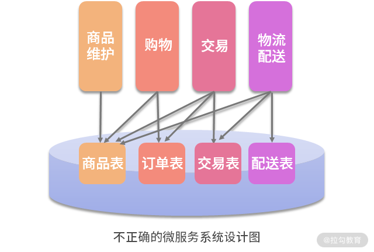
如上图所示，以往许多的系统是这样设计的。现在，如果还按照这样的设计思路简单粗暴地拆分为多个微服务以后，对系统日后的维护将是灾难性的。
- 当多个模块都要读取商品信息表时，是直接通过 JDBC（Java Database Connectivity）去读取这个表。
- 接着，按照这样的思路拆分微服务，多个微服务都要读取商品信息表。
- 这样，一旦商品信息表发生变更，多个微服务都需要变更。不仅多个团队都要为了维护这个需求修改代码，而且他们的微服务需要同时修改、同时发布、同时升级。
如果每次的维护都是这样进行，不仅微服务的优势不能发挥出来，还会使得维护的成本更高。如果微服务被设计成这样，还真不如不用微服务。
这里的关键问题在于，当多个微服务都要读取同一个表时，也就意味着同一个软件变化原因（因商品信息而变更）的代码被分散到多个微服务中。这时，当系统因该原因而变化时，代码的修改自然就会分散到多个微服务上。也就是说，以上设计问题的根源违反了“单一职责原则”，使微服务的设计不再高内聚。微服务该怎样设计、怎样拆分？关键就在于“小而专”，这里的“专”就是高内聚。
因此，微服务设计不是简单的拆分，而是对设计提出了更高的要求，即要做到“高内聚”。只有这样，才能让日后的变更能尽量落到某个微服务上维护，从而降低维护成本。唯有这样才能将微服务的优势发挥出来，才是微服务正确的打开方式。
为了让微服务设计做到高内聚，最佳的实践则是 DDD：
- 先从 DDD 开始需求分析、领域建模，逐渐建立起多个问题子域；
- 再将问题子域落实到限界上下文，它们之间的关联形成上下文地图；
- 最后，各子域落实到微服务中贫血模型或充血模型的设计，从而在微服务之间依据上下文地图形成接口。
唯有这样的设计，才能很好地做到“微服务之间低耦合，微服务之内高内聚”的设计目标。
总结
总而言之，微服务设计的困局就是拆分，拆分的核心就是“小而专”“高内聚”。因此，破解微服务困局的关键就是 DDD。有了 DDD，就使得微服务团队在面对软件越来越复杂的业务时，能够分析清楚业务，能够想明白设计，从而提高微服务的设计质量。
07 在线订餐场景中是如何开事件风暴会议的？
微服务设计最核心的难题是微服务的拆分，不合理的微服务拆分不仅不能提高研发效率，反倒还使得研发效率更低，因此要讲究“小而专”的设计。“小而专”的设计意味着微服务的设计不是简单拆分，而是对设计提出了更高的要求，要“低耦合、高内聚”。那么，如何做到“低耦合、高内聚”，实现微服务的“小而专”呢？那就需要“领域驱动设计”作为方法论，来指导我们的开发。
用“领域驱动设计”是业界普遍认可的解决方案，也就是解决微服务如何拆分，以及实现微服务的高内聚与单一职责的问题。但是，领域驱动设计应当怎样进行呢？怎样从需求分析到软件设计，用正确的方式一步一步设计微服务呢？现在我们用一个在线订餐系统实战演练一下微服务的设计过程。
在线订餐系统项目实战
相信我们都使用过在线订餐系统，比如美团、大众点评、百度外卖等，具体的业务流程如下图所示：
在线订餐系统的业务流程图
- 当我们进入在线订餐系统时，首先看到的是各个饭店，进入每个饭店都能看到他们的菜单；
- 下单时，订单中就会包含我们订的是哪家饭店、菜品、数量及我们自己的配送地址；
- 下单后，相应的饭店就会收到该下单系统；
- 接着，饭店接单，然后开始准备餐食；
- 当饭店的餐食就绪以后，通知骑士进行派送；
- 最后，骑士完成了餐食的派送，订单送达，我们就愉悦地收到了订购的美味佳肴。
现在，我们要以此为背景，按照微服务架构来设计开发一个在线订餐系统。那么，我们应当如何从分析理解需求开始，一步一步通过前面讲解的领域驱动设计，最后落实到拆分微服务，把这个系统拆分出来呢？
统一语言建模
软件开发的最大风险是需求分析，因为在这个过程中谁都说不清楚能让对方了解的需求。
研发不懂客户、客户也不懂研发
在这个过程中，对于客户来说：
- 客户十分清楚他的业务领域知识，以及他亟待解决的业务痛点；
- 然而，客户不清楚技术能如何解决他的业务痛点。
因此，用户在提需求时，是在用他有限的认知，想象技术如何解决他的业务痛点。所以这样提出的业务需求往往不太靠谱，要么技术难于实现，要么并非最优的方案。
与此同时，在需求分析过程中，对于研发人员来说：
- 非常清楚技术以及能解决哪些业务问题，同时也清楚它是如何解决的；
- 然而，欠缺的是对客户所在的业务领域知识的掌握，使得无法准确理解客户的业务痛点。
这就局限了我们的设计，进而所做的系统不能完美地解决用户痛点。
因此，在需求分析的过程中，不论是客户还是我们，都不能掌握准确理解需求所需的所有知识，这就导致，不论是谁都不能准确地理解与描述软件需求。在需求分析中常常会出现，客户以为他描述清楚需求了，我们也以为我们听清楚了。但当软件开发出来以后，客户才发现这并不是他需要的软件，而我们也发现我们并没有真正理解需求。尽管如此，客户依然没有想清楚他想要什么，而我们还是不知道该怎样做，这就是软件开发之殇。
如何破局需求分析的困境？
如何能够破解这个困局呢？关键的思想就在于“统一语言建模”。也就是说，以上问题的根源在于语言沟通的障碍，使得我不能理解你，而你也不能理解我。因此，解决的思路就是：
- 我主动学习你的语言，了解你的业务领域知识，并用你的语言与你沟通；
- 同时，我也主动地让你了解我的语言，了解我的业务领域知识，并用我的语言与你沟通。
回到需求分析领域，我们清楚的是技术，但不了解业务，因此，应当主动地去了解业务。那么，如何了解业务呢？找书慢慢地去学习业务吗？也不是，因为我们不是要努力成为业务领域专家，而仅仅是要掌握与要开发软件相关的业务领域知识。在业务领域漫无目的地学习，学习效率低而收效甚微。
所以，我们应当从客户那里去学习，比如询问客户，仔细聆听客户对业务的描述，在与客户的探讨中快速地学习业务。然而，在这个过程中，一个非常重要的关键就是，注意捕获客户在描述业务过程中的那些专用术语，努力学会用这些专用术语与客户探讨业务。
久而久之，用客户的语言与客户沟通，你们的沟通就会越来越顺畅，客户也会觉得你越来越专业，愿意与你沟通，并可以与你探讨越来越深的业务领域知识。当你对业务的理解越来越深刻，你就能越来越准确地理解客户的业务及痛点，并运用自己的技术专业知识，用更加合理的技术去解决用户的痛点。这样，你们的软件就会越来越专业，让用户能越来越喜欢购买和使用你们的软件，并形成长期合作关系。
我的项目应用举例
以我做过的一个远程智慧诊疗数据模型为例，这是一个面向中医的数据模型。在与客户探讨需求的过程中，我们很快发现，用户在描述中医的诊疗过程中，许多术语与西医有很大的不同。
比如，他们在描述患者症状的时候，通常不用“症状”这个词，而是用“表象”。表象包括症状、体征、检测指标，是医生通过不同方式捕获患者病症的所有外部表现；同时，他们在诊断的时候也不用“疾病”这个词，而是“证候”。中医认为，证候才是患者疾病在身体中的内部根源，抓住证候，将证候的问题解决了，疾病自然就药到病除了。我们把握了这些术语后，用这些术语与业务专家进行沟通，沟通就变得异常顺利。客户会觉得我们非常专业，很懂他们，并且变得异常积极地与我们探讨需求，并很快建立了一种长期合作的关系。
同时，在这个过程中，我们一边在与客户探讨业务领域知识，一边又可以让客户参与到我们分析设计的工作中来，用客户能够理解的语言让客户清楚我们是如何设计软件的。这样，当客户有参与感以后，就会对我们的软件有更强烈的认可度，更有利于软件的推广。此外，客户参与了并理解我们是怎么做软件的，就会逐步形成一种默契。使得客户在日后提需求、探讨需求的时候，提出的需求更靠谱，避免技术无法实现的需求，使得需求质量大幅度得到提高。
事件风暴会议
什么是事件风暴
在领域驱动设计之初的需求分析阶段，对需求分析的基本思路就是统一语言建模，它是我们的指导思想。但落实到具体操作层面，可以采用的实践方法是事件风暴（Event Storming）。它是一种基于工作坊的 DDD 实践方法，可以帮助我们快速发现业务领域中正在发生的事件，指导领域建模及程序开发。它是由意大利人 Alberto Brandolini 发明的一种领域驱动设计实践方法，被广泛应用于业务流程建模和需求工程。
这个方法的基本思想，就是将软件开发人员和领域专家聚集在一起，一同讨论、相互学习，即统一语言建模。但它的工作方式类似于头脑风暴，让建模过程变得更加有趣，让学习业务变得更加容易。因此，事件风暴中的“风暴”，就是运用头脑风暴会议进行领域分析建模。
那么，这里的“事件”是什么意思呢？事件即事实（Event as Fact），即在业务领域中那些已经发生的事件就是事实（fact）。过去已经发生的事件已经成为了事实就不会再更改，因此信息管理系统就可以将这些事实以信息的形式存储到数据库中，即信息就是一组事实。
说到底，一个信息管理系统的作用，就是存储这些事实，对这些事实进行管理与跟踪，进而起到提高工作效率的作用。因此，分析一个信息管理系统的业务需求，就是准确地抓住业务进行过程中那些需要存储的关键事实，并围绕着这些事实进行分析设计、领域建模，这就是“事件风暴”的精髓。
召开事件风暴会议
因此，实践“事件风暴”方法，就是让开发人员与领域专家坐在一起，开事件风暴会议。会议的目的就是与领域专家一起进行领域建模，而会议前的准备就是在会场准备一个大大的白板与各色的便笺纸，如下图所示：
事件风暴会议图
当开始事件风暴会议以后，通常分为这样几个步骤。
首先，在产品经理的引导下，与业务专家开始梳理当前的业务中有哪些领域事件，即已经发生并需要保存下来的那些事实。这时，是按照业务流程依次去梳理领域事件的。例如，在本案例中，整个在线订餐过程分为：已下单、已接单、已就绪、已派送和已送达，这几个领域事件。注意，领域事件是已发生的事实，因此，在命名的时候应当采用过去时态。
这里有一个十分有趣的问题值得探讨。在用户下单之前，用户首先是选餐。那么，“用户选餐”是不是领域事件呢？注意，领域事件是那些已经发生并且需要保存的重要事实。这里，“用户选餐”仅仅是一个查询操作，并不需要数据库保存，因此不能算领域事件。那么，难道这些查询功能不在需求分析的过程中吗？
注意，DDD 有自己的适用范围，它往往应用于系统增删改的业务场景中，而查询场景的分析往往不用 DDD，而是通过其他方式进行分析。分析清楚了领域事件以后，就用橘黄色便笺纸，将所有的领域事件罗列在白板上，确保领域中所有事件都已经被覆盖。
紧接着，针对每一个领域事件，项目组成员开始不断地围绕着它进行业务分析，增加各种命令与事件，进而思考与之相关的资源、外部系统与时间。例如，在本案例中，首先分析“已下单”事件，分析它触发的命令、与之相关的人与事儿，以及发生的时间。命令使用蓝色便笺，人和事儿使用黄色便笺，如下图所示：
“已下单”的领域事件分析图
“已下单”事件触发的命令是“下单”，执行者是“用户”（画一个小人作为标识），执行时间是“下单时间”。与它相关的人和事儿有“饭店”与“订单”。在此基础上进一步分析，用户关联到用户地址，饭店关联到菜单，订单关联到菜品明细。
然后，就是识别模型中可能涉及的聚合及其聚合根。第 05 讲谈到，所谓的“聚合”就是整体与部分的关系，譬如，饭店与菜单是否是聚合关系，关键看它俩的数据是如何组织的。如果菜单在设计时是独立于饭店之外的，如“宫保鸡丁”是独立于饭店的菜单，每个饭店都是在引用这条记录，那么菜单与饭店就不是聚合关系，即使删除了这个饭店，这个菜单依然存在。
但如果菜单在设计时，每个饭店都有自己独立的菜单，譬如同样是“宫保鸡丁”，饭店 A 与饭店 B 使用的都是各自不同的记录。这时，菜单在设计上就是饭店的一个部分，删除饭店就直接删除了它的所有菜单，那么菜单与饭店就是聚合关系。在这里，那个代表“整体”的就是聚合根，所有客户程序都必须要通过聚合根去访问整体中的各个部分。
通过以上分析，我们认为用户与地址、饭店与菜单、订单与菜品明细，都是聚合关系。如果是聚合关系，就在该关系上贴一张紫色便笺。
按照以上步骤，一个一个地去分析每个领域事件：
在线订餐系统的领域事件分析图
当所有的领域事件都分析完成以后，最后再站在全局对整个系统进行模块的划分，划分为多个限界上下文，并在各个限界上下文之间，定义它们的接口，规划上下文地图。
总结
按照 DDD 的思想进行微服务设计，首先是从需求分析开始的。但 DDD 彻底改变了我们需求分析的方式，采用统一语言建模，让我们更加主动地理解业务，用客户的语言与客户探讨需求。统一语言建模是指导思想，事件风暴会议是实践方法。运用事件风暴会议与客户探讨需求、建立模型，我们能更加深入地理解需求，而客户也更有参与感。此外，事件风暴会议可以作为敏捷开发中迭代计划会议前的准备会议的一个部分。
然而，通过事件风暴会议形成的领域模型，又该如何落地到微服务的设计呢？还会遇到哪些设计与技术难题呢？下一讲将进一步讲解领域模型的微服务设计实现。
08 DDD 是如何解决微服务拆分难题的？
微服务的技术架构其实并不难。很多开发团队在微服务转型初期，将关注点主要放到了对微服务技术架构的学习。然而，当他们真正开始将微服务落地到具体的业务中时，才发现，真正的难题是微服务按照什么原则拆分、如何拆分，以及会面对哪些潜在风险。下面我们来一一解决。
微服务拆分的原则
在前面的内容中，我们多次提到过微服务的拆分原则，接下来我将为你详细讲解下。
微服务的拆分原则就是“小而专”，即微服务内高内聚、微服务间低耦合。
“微服务内高内聚”，就是单一职责原则，即每个微服务中的代码都是软件变化的一个原因。因这个原因而需要变更的代码都在这个微服务中，与其他微服务无关，那么就可以将代码修改的范围缩小到这个微服务内。把这个微服务修改好了，独立修改、独立发布，该需求就实现了。这样，微服务的优势就发挥出来了。
“微服务间低耦合”，就是说在微服务实现自身业务的过程中，如果需要执行的某些过程不是自己的职责，就应当将这些过程交给其他微服务去实现，你只需要对它的接口进行调用。譬如，“用户下单”微服务在下单过程中需要查询用户信息，但“查询用户信息”不是它的职责，而是“用户注册”微服务的职责。这样，“用户下单”微服务就不需要再去执行对用户信息的查询，而是直接调用“用户注册”微服务的接口。那么，怎样调用呢？直接调用可能会形成耦合。通过注册中心，“用户下单”微服务调用的只是在注册中心中名称叫“用户注册”的微服务。而在软件设计时，“用户注册”可以有多个实现，哪个注册到注册中心中，就调用哪个。这样，微服务之间的调用就实现了解耦。
通过 DDD 进行业务建模，再基于领域模型进行限界上下文划分，就能保证系统的设计，在限界上下文内高内聚，在限界上下文间低耦合。所以，基于限界上下文进行微服务的拆分，就能保证微服务设计的高质量。同时，通过对上下文地图的分析，就能理清微服务之间的接口调用关系，从而协调多个开发团队协同开发。
子域划分与限界上下文
正如第 06 讲中谈到，领域模型的绘制，不是将整个系统的领域对象都绘制在一张大图上，那样绘制很费劲，阅读也很费劲，不利于相互的交流。因此，领域建模就是将一个系统划分成了多个子域，每个子域都是一个独立的业务场景。围绕着这个业务场景进行分析建模，该业务场景会涉及许多领域对象，而这些领域对象又可能与其他子域的对象进行关联。这样，每个子域的实现就是“限界上下文”，而它们之间的关联关系就是“上下文地图”。
在本案例中，围绕着领域事件“已下单”进行分析。它属于“用户下单”这个限界上下文，但与之相关的“用户”及其“地址”来源于“用户注册”这个限界上下文，与之相关的“饭店”及其“菜单”来源于“饭店管理”这个限界上下文。因此，在这个业务场景中，“用户下单”限界上下文属于“主题域”，而“用户注册”与“饭店管理”限界上下文属于“支撑域”。同理，围绕着本案例的各个领域事件进行了如下一些设计：

“已下单”的限界上下文分析图
通过这样的设计，就能将“用户下单”限界上下文的范围，与之相关的上下文地图以及如何接口，分析清楚了。有了这些设计，就可以按照限界上下文进行微服务拆分。按照这样的设计拆分的微服务，所有与用户下单相关的需求变更都在“用户下单”微服务中实现。但是，订单在读取用户信息的时候，不是直接去 join 用户信息表，而是调用“用户注册”微服务的接口。这样，当用户信息发生变更时，与“用户下单”微服务无关，只需要在“用户注册”微服务中独立开发、独立升级，从而使系统维护的成本得到降低。

“已接单”与“已就绪”的限界上下文分析图
同样，如上图所示，我们围绕着“已接单”与“已就绪”的限界上下文进行了分析，并将它们都划分到“饭店接单”限界上下文中，后面就会设计成“饭店接单”微服务。这些场景的主题域就是“饭店接单”限界上下文，而与之相关的支撑域就是“用户注册”与“用户下单”限界上下文。通过这些设计，不仅合理划分了微服务的范围，也明确了微服务之间的接口，实现了微服务内的高内聚与微服务间的低耦合。
领域事件通知机制
按照 07 讲所讲到的领域模型设计，以及基于该模型的限界上下文划分，将整个系统划分为了“用户下单”“饭店接单”“骑士派送”等微服务。但是，在设计实现的时候，还有一个设计难题，即领域事件该如何通知。譬如，当用户在“用户下单”微服务中下单，那么会在该微服务中形成一个订单；但是，“饭店接单”是另外一个微服务，它必须要及时获得已下单的订单信息，才能执行接单。那么，如何通知“饭店接单”微服务已经有新的订单。诚然，可以让“饭店接单”微服务按照一定的周期不断地去查询“用户下单”微服务中已下单的订单信息。然而，这样的设计，不仅会加大“用户下单”与“饭店接单”微服务的系统负载，形成资源的浪费，还会带来这两个微服务之间的耦合，不利于之后的维护。因此，最有效的方式就是通过消息队列，实现领域事件在微服务间的通知。


在线订餐系统的领域事件通知
如上图所示，具体的设计就是，当“用户下单”微服务在完成下单并保存订单以后，将该订单做成一个消息发送到消息队列中；这时，“饭店接单”微服务就会有一个守护进程不断监听消息队列；一旦有消息就会触发接收消息，并向饭店发送“接收订单”的通知。在这样的设计中：
- “用户下单”微服务只负责发送消息，至于谁会接收并处理这些消息，与“用户下单”微服务无关；
- “饭店接单”微服务只负责接收消息，至于谁发送的这个消息，与“饭店接单”微服务无关。
这样的设计就实现了微服务之间的解耦，使得日后变更的成本降低。同样，饭店餐食就绪以后，也是通过消息队列通知“骑士接单”。在整个微服务系统中，微服务与微服务之间的领域事件通知会经常存在，所以最好在架构设计中将这个机制下沉到技术中台中。
DDD 的微服务设计
通过第 07 讲所讲到的一系列领域驱动设计：
- 首先通过事件风暴会议进行领域建模；
- 接着基于领域建模进行限界上下文的设计。
所有这些设计都是为了指导最终微服务的设计。
在 DDD 指导微服务设计的过程中：
- 首先按照限界上下文进行微服务的拆分，按照上下文地图定义各微服务之间的接口与调用关系；
- 在此基础上，通过限界上下文的划分，将领域模型划分到多个问题子域，每个子域都有一个领域模型的设计；
- 这样，按照各子域的领域模型，基于充血模型与贫血模型设计各个微服务的业务领域层，即各自的 Service、Entity 与 Value Object；
- 同时，按照领域模型设计各个微服务的数据库。
最后，将以上的设计最终落实到微服务之间的调用、领域事件的通知，以及前端微服务的设计。如下图所示：
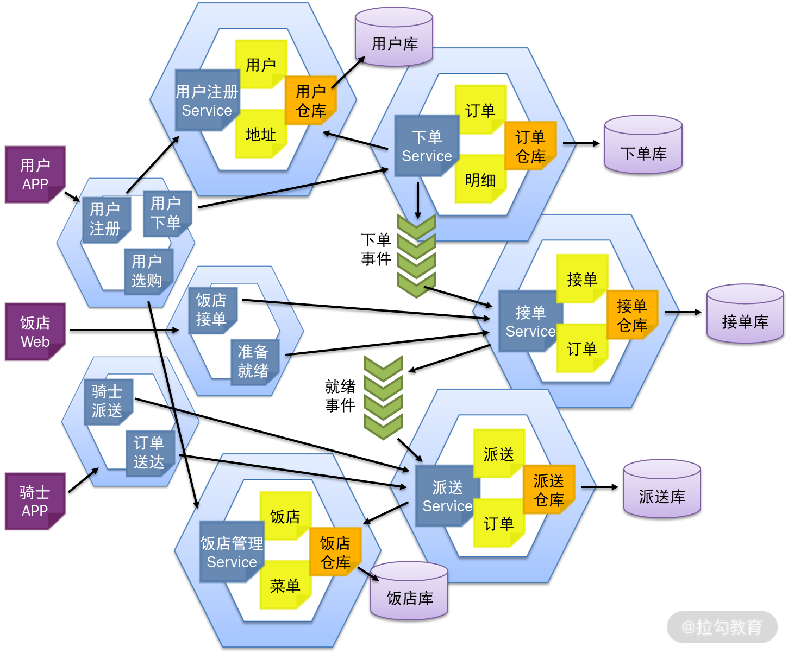
在线订餐系统的微服务设计
这里可以看到，前端微服务与后端微服务的设计是不一致的。前面讲的都是后端微服务的设计，而前端微服务的设计与用户 UI 是密切关联的，因此通过不同角色的规划，将前端微服务划分为用户 App、饭店 Web 与骑士 App。在用户 App 中，所有面对用户的诸如“用户注册”“用户下单”“用户选购”等功能都设计在用户 App 中。它相当于一个聚合服务，用于接收用户请求：
- “用户注册”时，调用“用户注册”微服务；
- “用户选购”时，查询“饭店管理”微服务；
- “用户下单”时，调用“用户下单”微服务。
总结
采用 DDD 进行需求的分析建模，可以帮助微服务的设计质量提高，实现“低耦合、高内聚”，进而充分发挥微服务的优势。然而，在微服务的设计实现还要解决诸多的难题。本讲一一拆解了微服务设计实现的这些难题，及其解决思路。然而，要更加完美地解决以上问题，不是让每个微服务都去见招拆招，而是应当有一个微服务的技术中台统一去解决。这些方面的设计将在后面微服务技术中台建设的相关章节进行讲解。
下一讲我们将演练在以上领域模型与微服务设计的基础上，如何落实每一个微服务的设计，以及可能面临的设计难题。
09 DDD 是如何落地微服务设计实现的？
自本专栏上线以来，有许多小伙伴跟我交流了很多相关的 DDD 知识。我发现，当大家看到贫血模型、充血模型、策略模式、装饰者模式时，发出这样的感慨：“难道这就是 DDD 吗？和我们平时的开发没有什么不同啊。”殊不知，其实你还没有真正 Get 到 DDD 的真谛。
DDD 的真谛
什么是 DDD 的真谛呢？那就是领域建模，它改变了我们过去对软件开发的认知。如图 1 所示，DDD 的精髓是：
- 首先深刻理解业务；
- 然后将我们对业务的理解绘制成领域模型；
- 再通过领域模型指导数据库和程序的设计。
图 1 领域驱动设计的真谛
过去，我们认为软件就是，用户怎么提需求，软件就怎么开发。这种开发模式使得我们对需求的认知浅薄，不得不随着用户的需求变动反复地改来改去，导致我们很累而用户还不满意，软件研发风险巨大。
正是 DDD 改变了这一切，它要求我们更加**主动地去理解业务，掌握业务领域知识。**这样，我们对业务的理解越深刻，开发出来的产品就越专业，那么客户就越喜欢购买和使用我们的产品。
然而，真实世界是非常复杂的，这就决定了我们不可能一开始就深刻理解业务。起初，我们对业务的理解浅薄，基于它做出来的领域模型也是浅薄的，导致最后开发出来的软件虽然也能用，但用户并不一定满意。然而，如果我们不断地与客户沟通，深入地理解业务，听取他们的意见，我们对业务的理解就会越来越深刻、越来越准确。再结合我们的专业技术知识，就能够理解我们的软件需要解决客户的什么问题，怎样做才是最优，怎样做才让客户感觉好用。
这时就不再是客户提需求了，而是我们主动地提需求、主动地改进功能，去解决客户的痛点，这样做的效果是，客户会感觉“不知道为什么，我就觉得你们的软件好用，用着很顺手”。这时，不但客户不会再改来改去，而且我们的软件做得也越来越专业，越来越有市场竞争力，这才是 DDD 的真谛。
这里有个问题，如果我们对业务理解不深刻就会影响到产品，那么能不能一开始就对业务理解得非常深刻呢？这几乎是不可能的。我们经常说，做事不能仅凭一腔热血，一定要符合自然规律。其实软件的设计开发过程也是这样。
- 在最开始你对业务理解比较粗略的时候，就从主要流程开始领域建模。
- 接着，不断往领域模型中加东西。随着功能一个一个地添加，领域模型也变得越来越丰富、越来越完善。每次添加新功能的时候，运用“两顶帽子”的方式先重构再加新功能，不断地完善每个设计。
- 这样，领域模型就像小树一样一点儿一点儿成长，最后完成所有的功能。
这样的设计过程叫“小步快跑”。采用小步快跑的设计方法，一开始不用思考那么多问题，从简单问题开始逐步深入，设计难度就降低了。同时，系统始终是处于变更中，使设计更加易于变更。
基于限界上下文的领域建模
回到 08 讲微服务设计部分，当在线订餐系统完成了事件风暴的分析以后，接着应当怎样设计呢？通过划分限界上下文，已经将系统划分为了“用户注册”“用户下单”“饭店接单”“骑士派送”与“饭店管理”等几个限界上下文，这样的划分也是后端微服务的划分。紧接着，就开始为每一个限界上下文进行领域建模。
首先，从“用户下单”上下文开始。通过业务领域分析，绘制出了如图 2 所示的领域模型，该模型的核心是“订单”，通过“订单”关联了用户与用户地址。一个订单有多个菜品明细，而每个菜品明细都对应了一个菜单，每个菜单隶属于一个饭店。此外，一个订单还关联了它的支付与发票。起初，它们的属性和方法没有那么全面，随着设计的不断深入，不断地细化与完善模型。

在这样的基础上开始划分限界上下文，用户与用户地址属于“用户注册”上下文，饭店与菜单属于“饭店管理”上下文。它们对于“用户下单”上下文来说都是支撑域，即给“用户下单”上下文提供接口调用的。真正属于“用户下单”上下文的，就只有订单、菜品明细、支付、发票这几个类，它们最终形成了“用户下单”微服务及其数据库设计。由于用户姓名、地址、电话等信息，都在“用户注册”上下文中，每次都需要远程接口调用来获得。这时就需要从系统优化的角度，适当将它们冗余到“订单”领域对象中，以提升查询效率。同样，“菜品名称”也进行了冗余，设计更新如图 3 所示：

完成了“用户下单”上下文以后，开始设计“饭店接单”上下文，设计如图 4 所示。上一讲谈到，“用户下单”微服务通过事件通知机制，将订单以消息的形式发送给“饭店接单”微服务。具体来说，就是将订单与菜品明细发送给“饭店接单”上下文。“饭店接单”上下文会将它们存储在自己的数据库中，并在此基础上增加“饭店接单”类，它与订单是一对一的关系。
同样的思路，通过领域事件通知“骑士派送”上下文，完成“骑士派送”的领域建模。
通过以上设计，就将上一讲的微服务拆分，进一步落实到每一个微服务的设计。紧接着，将每一个微服务的设计，按照第 03 讲的思路落实数据库设计，按照第 04 讲的思路落实贫血模型与充血模型的设计。
特别值得注意的是，订单与菜品明细是一对聚合。过去按照贫血模型的设计，分别为它们设计订单值对象、Service 与 Dao，菜品明细值对象、Service 与 Dao；现在按照充血模型的设计，只有订单领域对象、Service、仓库、工厂与菜品明细包含在订单对象中，而订单 Dao 被包含在订单仓库中。贫血模型与充血模型在设计上有明显的差别。关于聚合的实现，下一讲再详细探讨。
深入理解业务与模型重构
前面讲了，我们不可能一步到位深刻理解业务，它是一个逐步深入的过程。譬如，在设计“用户地址”时，起初没有“联系人”与“手机号”，因为通过关联用户就可以获得。然而，随着业务的不断深入，我们发现，当用户下单的时候，最终派送的不一定是给他本人，可能是另一个人，这是起初没有想到的真实业务场景。为此，在“用户地址”中果断增加了“联系人”与“手机号”，问题得到解决。
此外，如果用户下单以后又需要取消订单，这样的业务场景又该如何设计呢？通过与客户的沟通，确定了该业务的需求：
- 如果饭店还未接单，可以直接取消；
- 如果饭店已经接单了，需要经过饭店的确认方可取消；
- 如果饭店已经就绪了，就不可取消了。
这样，首先需要“饭店接单”上下文提供一个状态查询的接口，以及饭店确认取消的接口。接着，订单取消以后需要记录一个取消时间，并形成一个“订单取消”领域事件，通知“饭店接单”上下文。为此，“用户下单”上下文需要在订单中增加一个“取消时间”。
然而，当“用户下单”上下文对“订单”对象更新以后，“饭店接单”与“骑士派送”上下文是否也要跟着更新呢？前面提到，对微服务的设计，是希望：
- 每次变更的时候尽可能只更新一个微服务，以降低微服务的维护成本；
- 即使不能，也应当尽可能缩小更新的范围。
增加“取消时间”这个字段，对“饭店接单”上下文是有意义的，它的相应变更无可厚非。但对于“骑士派送”上下文来说，“取消时间”对它没有一毛钱关系，因此不希望对它进行更新。微服务间的调用是基于 RESTful 的接口调用，参数是通过 Json 对象传递，是一种松耦合调用。因此，在“饭店接单”与“骑士派送”上下文中，即使“订单”对象的数据结构不一致，也不影响它们的调用。因此，在“骑士派送”上下文不需要更新，更新范围就缩小了，维护成本降低了。
在完成了以上设计以后，还有一个难题就是订单状态的跟踪。
订单状态的跟踪
当用户下单后，往往会不断地跟踪订单状态是“已下单”“已接单”“已就绪”还是“已派送”。然而，这些状态信息被分散到了各个微服务中，就不可能在“用户下单”上下文中实现了。如何从这些微服务中采集订单的状态信息，又可以保持微服务间的松耦合呢？解决思路还是领域事件的通知。
通过消息队列，每个微服务在执行完某个领域事件的操作以后，就将领域事件封装成消息发送到消息队列中。比如，“用户下单”微服务在完成用户下单以后，将下单事件放到消息队列中。这样，不仅“饭店接单”微服务可以接收这个消息，完成后续的接单操作；而且“订单查询”微服务也可以接收这个消息，实现订单的跟踪。如图 5 所示。
图 5 订单状态的跟踪图
通过领域事件的通知与消息队列的设计，使微服务间调用的设计松耦合，“订单查询”微服务可以像外挂一样采集各种订单状态，同时不影响原有的微服务设计，使得微服务之间实现解耦，降低系统维护的成本。而“订单查询”微服务通过冗余，将“下单时间”“取消时间”“接单时间”“就绪时间”等订单在不同状态下的时间，以及其他相关信息，都保存到订单表中，甚至增加一个“订单状态”记录当前状态，并增加 Redis 缓存的功能。这样的设计就保障了订单跟踪查询的高效。要知道，面对大数据的高效查询，通常都是通过冗余来实现的。
总结
DDD 的真谛是领域建模，即深入理解业务。只有深入理解业务，将对业务的深入理解设计到领域模型中，设计出来的软件才更加专业，让用户的使用更满意。因此，基于每个限界上下文进行领域建模，不断地将每个功能加入模型中，落地每个微服务的设计。当业务越来越复杂，理解越来越深入的时候，适时地调整原有的模型，就能适应新的功能，使设计始终高质量。
10 微服务落地的技术实践
如今，做一个优秀的程序员越来越难。激烈的市场竞争、互联网快速的迭代、软件系统规模化发展，无疑都大大增加了软件设计的难度。因此，对于架构师的能力要求也越来越高，就像我的一本书里写道的：
作为顶级架构师应当具备这样两个核心能力： （1）能够将业务转换为技术； （2）能合理利用技术支撑业务。
“不想当将军的士兵不是好士兵”，因此作为普通开发人员的你，也应当树立成为顶级架构师的目标，并不断努力。
能够将业务转换为技术，意味着需要将更多的精力放到对业务的理解中。技术本身并不能产生价值，你必须具备超强的业务落地能力，能够将用户的业务需求落地到技术方案，开发出用户乐于使用的产品和功能，用户才能为之买单，企业才能挣钱。具备这样的能力，才能够强力地帮助企业产生效益，才能体现你的价值。学习 DDD 就能让你掌握快速学习业务领域知识的能力。
能合理利用技术支撑业务，意味着你必须具备广博的知识与开阔的视野，能将用户的业务痛点，快速落地形成合理的，甚至是最优的技术方案。做出用户需要的功能，让用户为之买单，从而为企业产生效益。然而，如今是一个技术快速更迭的时代，各种高新技术层出不穷。每次新产品的开发不是将原有的技术拿来炒冷饭，而是运用更多的新技术解决新问题，让产品更有竞争力与生命力。因此，你必须有广博的技术知识与超强的技术落地能力。
上一讲谈到 DDD 落地微服务的分析设计过程，然后将这些设计最终落实到每个微服务的设计开发中。微服务的落地其实并没有那么简单，需要解决诸多设计与实现的技术难题，这一讲我们就来探讨一下吧。
如何发挥微服务的优势
微服务也不是银弹，它有很多的“坑”。开篇词中提到，当我们将一个庞大的业务系统拆分为一个个简单的微服务时，就是希望通过合理的微服务设计，尽量让每次的需求变更都交给某个小团队独立完成，让需求变更落到某个微服务上进行变更。唯有这样，每次变更只需独立地修改这个微服务，独立打包、独立升级，新需求就实现啦，才能发挥微服务的优势。

然而，过去很多系统都是这样设计的（如上图所示），多个模块都需要读取商品信息表，因此都通过 JDBC 直接读取。现在要转型微服务了，起初采用数据共享的微服务设计，就是数据库不变，然后简单粗暴地直接按照功能模块进行微服务拆分。这时，多个微服务都需要读取商品信息表，都通过 SQL 直接访问。这样的设计，一旦商品信息表发生变更，那么多个微服务都需要变更。这样的设计就使得微服务的变更与发布变得复杂，微服务的优势无法发挥。
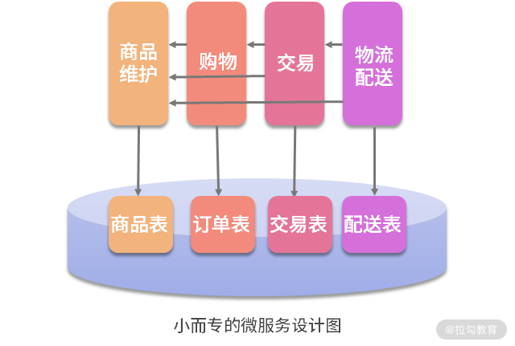
通过前面 DDD 的指导，是希望做“小而专”的微服务设计。按照这样的思路设计微服务，对商品信息表的读写只有“商品维护”微服务。当其他微服务需要读写商品信息时，就不能直接读取商品信息表，而是通过 API 接口去调用“商品维护”微服务。这样，日后因商品信息变更而修改的代码就只限于“商品维护”微服务。只要“商品维护”微服务对外的 API 接口不变，这个变更则与其他微服务无关。只有这样的设计，才能真正发挥微服务的优势。
为了规范“小而专”的微服务设计，在微服务转型之初，先按照 DDD 对数据库表按照用户权限进行划分。每个微服务只能通过自己的账号访问自己的表。当需要访问其他的表时，只能通过接口访问相应的微服务。这样的划分，就为日后真正的数据库拆分做好了准备，微服务转型将更加平稳。
怎样提供微服务接口
因此，微服务的设计彼此之间不是孤立的，它们需要相互调用接口实现高内聚。然而，当一个微服务团队向另一个微服务团队提出接口调用需求时，另一个微服务团队该如何设计呢？
首先第一个问题，当多个团队都在向你提出 API 接口时，你怎么提供接口。如果每个团队给你提需求，你就必须要做一个新接口，那么你的微服务将变得非常不稳定。因此，当多个团队向你提需求时，必须要对这些接口进行规划，通过复用用尽可能少的接口满足他们的需求；当有新的接口提出时，要尽量通过现有接口解决问题。这样做，你就能用更低的维护成本，更好地维护自己的微服务。
接着，当调用方需要接口变更时怎么办？变更现有接口应当尽可能向前兼容，即接口的名称与参数都不变，只是在内部增加新的功能。这样做是为了不影响其他微服务的调用。如果确实需要更改现有的接口怎么办？宁愿增加一个新的接口也最好不要去变更原有的接口。

此外，调用双方传递的值对象需要完全一致吗？当然不用。当被调方因为某些变更对值对象增加了字段，而这些字段调用方不使用时，那么调用方不需要跟着变更值对象。因为微服务间的调用是采用RESTful 接口，以 Json 的形成传递数据，是一种松耦合的调用。因此调用双方的值对象可以不一致，从而降低了需求变更的微服务更新范围。
最后，调用方如何调用接口呢？这里分为同步调用与异步调用。
- 第 09 讲谈到“用户接单 Service”在完成下单以后，用消息队列通知“饭店接单 Service”，就是异步调用。
- 接着，“用户接单Service”常常要查找用户表信息，但前面说了，它没有查询用户表权限，因为用户表在“用户注册”微服务中。这时，“用户接单 Service”通过同步调用“用户注册 Service”的相关接口。
具体设计实现上，就是在“用户接单”微服务的本地，增加一个“用户注册 Service”的 feign 接口。这样，“用户接单 Service”就像本地调用一样调用“用户注册 Service”，再通过这个 feign 接口实现远程调用。这样的设计叫作“防腐层”的设计。如下图所示：

微服务的拆分与防腐层的设计图
譬如，大家想象这样一个场景。过去，“用户注册 Service”是在“用户下单”微服务中的。后来，随着微服务设计的不断深入，需要将“用户注册 Service”拆分到另外一个微服务中。这时，“用户下单Service”与“取消订单 Service”，以及其他对“用户注册 Service”的调用都会报错，都需要修改，维护成本就很高。这时，在微服务的本地放一个“用户注册 Service”的 feign 接口，那么其他的 Service 都不需要修改了，维护成本将得以降低。这就是“防腐层”的作用，即接口变更时降低维护成本。
去中心化的数据管理
按照前面 DDD 的设计，已经将数据库按照微服务划分为用户库、下单库、接单库、派送库与饭店库。这时候，如何来落地这些数据库的设计呢？微服务系统最大的设计难题就是要面对互联网的高并发与大数据。因此，可以按照“去中心化数据管理”的思想，根据数据量与用户访问特点，选用不同的数据存储方案存储数据：
- 微服务“用户注册”与“饭店管理”分别对应的用户库与饭店库，它们的共同特点是数据量小但频繁读取，可以选用小型的 MySQL 数据库并在前面架设 Redis 来提高查询性能；
- 微服务“用户下单”“饭店接单”“骑士派送”分别对应的下单库、接单库、派送库，其特点是数据量大并且高并发写，选用一个数据库显然扛不住这样的压力，因此可以选用了 TiDB 这样的 NewSQL 数据库进行分布式存储，将数据压力分散到多个数据节点中，从而解决 I/O 瓶颈；
- 微服务“经营分析”与“订单查询”这样的查询分析业务，则选用 NoSQL 数据库或大数据平台，通过读写分离将生产库上的数据同步过来进行分布式存储，然后经过一系列的预处理，就能应对海量历史数据的决策分析与秒级查询。
基于以上这些设计，就能完美地应对互联网应用的高并发与大数据，有效提高系统性能。设计如下图所示：

在线订餐系统的去中心化数据管理图
数据关联查询的难题
此外，各个微服务在业务进行过程需要进行的各种查询，由于数据库的拆分，就不能像以前那样进行 join 操作了，而是通过接口调用的方式进行数据补填。比如“用户下单”“饭店接单”“骑士派送”等微服务，由于数据库的拆分，它们已经没有访问用户表与饭店表的权限，就不能像以往那样进行 join 操作了。这时，需要重构查询的过程。如下图所示：

查询的过程分为 2 个步骤。
- 查询订单数据，但不执行 join 操作。这样的查询结果可能有 1 万条，但通过翻页，返回给微服务的只是那一页的 20 条数据。
- 再通过调用“用户注册”与“饭店管理”微服务的相关接口，实现对用户与饭店数据的补填。
这种方式，既解决了跨库关联查询的问题，又提高了海量数据下的查询效率。注意，传统的数据库设计之所以在数据量越来越大时，查询速度越来越慢，就是因为存在 join 操作。因而，在面对海量数据的查询时，干掉 join 操作，改为分页后的数据补填，就能有效地提高查询性能。
然而，在查询订单时，如果要通过用户姓名、联系电话进行过滤，然后再查询时，又该如何设计呢？这里千万不能先过滤用户数据，再去查询订单，这是一个非常糟糕的设计。我们过去的数据库设计采用的都是3NF（第 3 范式），它能够帮助我们减少数据冗余，然而却带来了频繁的 join 操作，降低了查询性能。因此，为了提升海量数据的查询性能，适当增加冗余，即在订单表中增加用户姓名、联系电话等字段。这样，在查询时直接过滤订单表就好了，查询性能就得到了提高。
最后，当系统要在某些查询模块进行订单查询时，可能对各个字段都需要进行过滤查询。这时就不再采用数据补填的方式，而是利用 NoSQL 的特性，采用“宽表”的设计。按照这种设计思路，当系统通过读写分离从生产库批量导入查询库时，提前进行 join 操作，然后将 join 以后的数据，直接写入查询库的一个表中。由于这个表比一般的表字段更多，因此被称为“宽表”。
由于 NoSQL 独有的特性，为空的字段是不占用空间的，因此字段再多都不影响查询性能。这样，在日后的查询时，就不再需要 join 操作，而是直接在这个单表中进行各种过滤、各种查询，从而在海量历史数据中实现秒级查询。因此，“订单查询”微服务在数据库设计时，就可以通过NoSQL 数据库建立宽表，从而实现高效的数据查询。
总结
基于 DDD 的微服务设计，既强调对业务的分析理解，又强调对业务的技术落地。只有把这两个事情都做好了，产品才能被用户认可，我们才能体现出价值。在这个过程中，微服务间要通过 feign 接口相互调用，数据要通过补填关联查询。此外，还有聚合的实现、仓库和工厂的设计。所有这些内容都需要在 DDD 设计思想的基础上，落地实现。
然而，如果每个模块都要反复地写代码去实现这些功能，DDD 的设计将显得异常烦琐，因此迫切需要有一个既支持 DDD，又支持微服务的技术中台，封装这些代码，简化微服务的设计。
下一讲我将开始讲解支持 DDD 与微服务的技术中台的设计实践。
11 解决技术改造困局的钥匙：整洁架构
有个“大师与太空”的梗是这样说的：大师通常都站得很高很高、高瞻远瞩，站得有多高呢？都是站在太空里的，所以很多人追随大师容易缺氧。因此，我们学习大师的理论，就要脚踏实地、踏踏实实地将其落地到项目应用中，重新落地到“地面”上，这些理论才是有用的，落地 DDD 同样是这样。
如何落地 DDD 呢？除了在项目中实践 DDD，领域建模，按照 DDD 的思想设计开发以外，还需要一个支持 DDD 与微服务的技术中台。在 DDD 实现过程中，这个技术中台应当能够封装那些烦琐的聚合操作、仓库与工厂的设计，以及相关的各种技术。有了这个技术中台的支持，开发团队就可以把更多的精力放到对用户业务的理解，对业务痛点的理解，快速开发用户满意的功能并快速交付，而不再受限于那些烦琐的技术细节，从而降本增效。这样，不仅编写代码减少了，技术门槛降低了，还使得日后的变更更加容易，技术更迭也更加方便。
那么，如何设计这样一个技术中台呢？首先应当从现有系统的设计痛点开始分析。
底层技术的更迭
这些年，随着互联网、大数据、人工智能等新技术层出不穷，整个 IT 产业的技术架构也在快速迭代。
- 过去，我们说“架构是软件系统中最稳定不变的部分”；
- 而现在，我们说“好的架构源于不停地演变”。
因此，如今的架构设计需要思考如何让底层的架构更易于技术更迭、易于架构调整，以应对不断演进的新技术、新框架，从而获得行业竞争的技术优势。
然而，在实际项目中，特别是很多运行了七八年、十多年的老项目，要做一次技术升级，那叫一个费劲，就像脱一层皮那么痛苦。为什么技术升级那么费劲呢？究其原因，是在系统设计开发时，大量的业务代码依赖于底层的技术框架，形成了耦合。
譬如，过去采用 hibernate 进行数据持久化，每个模块的 DAO 都要继承自 HibernateDaoSupport。这样，所有的 DAO 都与 Hibernate 形成了一种依赖。当系统架构由 Hibernate2 升级成 Hibernate3，甚至升级成 MyBatis，就不是改换一个 jar 包那么简单了。
技术框架一换，底层的类、接口、包名都变了，就意味着上层的所有模块的 DAO 都需要改，改完了还要测试。这样的技术升级成本极高，风险极大，需要我们认真去思考解决方案。
总之，老系统技术架构升级成本极高的根源，在于业务代码与底层技术框架的耦合。因此，解决思路就是对它们进行解耦。如何解耦呢？就是在上层业务代码与底层技术框架之间建立“接口层”。

如何在业务代码与底层框架之间建立“接口层”呢？如上图所示，上层业务代码在进行持久化时，各个模块的 DAO 不再去调用底层框架，而是对接口层的 DaoSupport 进行调用。DaoSupport 接口是我们自己设计的，它应当满足上层的所有业务需求，比如各种类型的 insert、 update、delete、get、load、find，并让这个接口保持稳定。上层业务代码的设计实现都依赖于 DaoSupport 接口，只要它稳定了，上层业务代码就稳定了。
接着，在 DaoSupport 接口的基础上编写实现类，由实现类去调用底层技术框架，实现真正的持久化。
- 起初使用 Hibernate2 作为底层框架，所以为 Hibernate2 编写了一个实现类。
- 当 Hibernate2 升级成 Hibernate3 时，为 Hibernate3 写一个实现类。
- 当底层框架要升级成MyBatis 时，再为 MyBatis 写一个实现类。
这样的设计，当系统进行技术架构升级时，其影响就不再扩展到业务层代码，而仅仅局限于调整接口层的实现类，技术升级的成本将得到大幅度的降低。
整洁架构的设计

通过前面对问题的分析与接口层的设计，可以得出一个非常重要的结论：如何既能轻松地实现技术架构演化，又能保证开发团队的快速交付呢，关键的思路是将业务代码与技术框架解耦。如上图所示，在系统分层时，基于领域驱动的设计，将业务代码都整合在业务领域层中去实现。这里的业务领域层包括了 BUS 层中的 Service，以及与它们相关的业务实体与值对象。
业务领域层设计的实质，就是将领域模型通过贫血模型与充血模型的设计，最终落实到对代码的设计。在此基础上，通过分层将业务领域层与其他各个层次的技术框架进行解耦，这就是“整洁架构”的核心设计思路。

整洁架构（The Clean Architecture）是 Robot C. Martin 在《架构整洁之道》中提出来的架构设计思想。如上图所示，它以圆环的形式把系统分成了几个不同的层次，因此又称为“洋葱头架构（The Onion Architecture）”。在整洁架构的中心是业务实体（黄色部分）与业务应用（红色部分），业务实体就是那些核心业务逻辑，而业务应用就是面向用户的那些服务（Service）。它们合起来组成了业务领域层，也就是通过领域模型形成的业务代码的实现。
整洁架构的最外层是各种技术框架，包括：
- 与用户 UI 的交互；
- 客户端与服务器的网络交互；
- 与硬件设备和数据库的交互；
- 与其他外部系统的交互。
整洁架构的精华在于其中间的适配器层，它通过适配器将核心的业务代码，与外围的技术框架进行解耦。因此，如何设计适配层，让业务代码与技术框架解耦，让业务开发团队与技术架构团队各自独立地工作，成了整洁架构落地的核心。

整洁架构设计的细化图，图片来自《软件架构编年史》
如图，进一步细化整洁架构，将其划分为 2 个部分：主动适配器与被动适配器。
- 主动适配器，又称为“北向适配器”，就是由前端用户以不同的形式发起业务请求，然后交由应用层去接收请求，交由领域层去处理业务。用户可以用浏览器、客户端、移动 App、微信端、物联网专用设备等各种不同形式发起请求。然而，通过北向适配器，最后以同样的形式调用应用层。
- 被动适配器，又称为“南向适配器”，就是在业务领域层完成各种业务处理以后，以某种形式持久化存储最终的结果数据。最终的数据可以存储到关系型数据库、NoSQL 数据库、NewSQL 数据库、Redis 缓存中，或者以消息队列的形式发送给其他应用系统。但不论采用什么形式，业务领域层只有一套，但持久化存储可以有各种不同形式。南向适配器将业务逻辑与存储技术解耦。
整洁架构的落地

按照整洁架构的思想如何落地架构设计呢？如上图所示，在这个架构中，将适配器层通过数据接入层、数据访问层与接口层等几个部分的设计，实现与业务的解耦。
首先，用户可以用浏览器、客户端、移动 App、微信端、物联网专用设备等不同的前端形式，多渠道地接入到系统中，不同的渠道的接入形式是不同的。通过数据接入层进行解耦，然后以同样的方式去调用上层业务代码，就能将前端的多渠道接入，与后台的业务逻辑实现了解耦。这样，前端不管怎么变，有多少种渠道形式，后台业务只需要编写一套，维护成本将大幅度降低。
接着，通过数据访问层将业务逻辑与数据库解耦。前面说了，在未来三五年时间里，我们又将经历一轮大数据转型。转型成大数据以后，数据存储的设计可能不再仅限于关系型数据库与 3NF的思路设计，而是通过 JSON、增加冗余、设计宽表等设计思路，将其存储到 NoSQL 数据库中，设计思想将发生巨大的转变。但无论怎么转变，都只是存储形式的转变，不变的是业务逻辑层中的业务实体。因此，通过数据访问层的解耦，今后系统向大数据转型的时候，业务逻辑层不需要做任何修改，只需要重新编写数据访问层的实现，就可以转型成大数据技术。转型成本将大大降低，转型将更加容易。
最后，就是底层的技术架构。现在我们谈架构，越来越多地是在谈架构演化，也就是底层技术架构要不断地随着市场和技术的更迭而更迭。但是，话虽如此，很多系统的技术架构更迭，是一个非常痛苦的过程。为什么呢？究其原因，是软件在设计时，将太多业务代码与底层框架耦合，底层框架一旦变更，就会导致大量业务代码的变更，各个业务模块的都要更迭，导致架构调整的成本巨大、风险高昂。
既然这里的问题是耦合，解决的思路就是解耦。在平台建设的过程中，除了通过技术选型将各种技术整合到系统中以外，还应通过封装，在其上建立接口层。通过接口层的封装，封装许多技术的实现，以更加简便的接口开放给上层的业务开发人员。这样，既可以降低业务开发的技术门槛，让他们更加专注于业务，提高开发速度，又让业务代码与技术框架解耦。有了这种解耦，就使得未来可以用更低的成本技术更迭，加速技术架构演进，跟上这个快速变化的时代。
总结
整洁架构的中心是基于 DDD 的业务实现，即那些通过领域模型指导设计与开发的 Service、Entity 与 Value Object。整洁架构的最外层是各种硬件、设备与技术框架。而整洁架构最核心的思想，是通过适配器层，将业务实现与技术框架解耦，这也是 DDD 落地到架构设计的最佳实践。
因此，支持 DDD 与微服务的技术中台，就是基于整洁架构的思想，将 DDD 底层的那些烦琐的聚合操作、仓库与工厂的设计，与微服务的技术框架，以及整洁架构中的适配器，统统封装在技术中台中。有了这个技术中台，就能让上层的业务开发人员，更加轻松地运用 DDD 的思想，更加快捷地更迭与交付用户需求，从而在激烈的市场竞争中获得优势。
下一讲将进一步讲解这样的技术中台是如何设计的。
12 如何设计支持快速交付的技术中台战略？
我们以往建设的系统都分为前台和后台，前台就是与用户交互的 UI 界面，后台就是服务端完成的业务逻辑操作。然而，在我们以往开发的很多业务系统中，有一些内容是共用的部分，在未来开发的业务系统中也要使用。因此，如果能把这些内容提取出来做成公用组件，那么在未来，开发系统就简单了，不用每次都重头开发，复用这些组件就可以了。
但是，这些公用的组件到底属于前台还是后台呢？都不属于。它既包含前台的界面，也包含后台的逻辑，因此被称为“中台”。所谓的中台，就是将以往业务系统中可以复用的前台与后台代码，剥离个性、提取共性，形成的公用组件。有了这些组件，就可以使日后的系统开发降本增效、提高交付速度。因此，阿里提出了“小前台、大中台”的战略，得到了业界的普遍认可。
从分类上看，中台分为业务中台、技术中台与数据中台。
- 业务中台，就是将抽象的业务组件，如用户权限、会员管理、仓储管理、物流管理等公用组件，做成微服务，各个业务系统都可以使用。
- 技术中台，就是封装各个业务系统所要采用的技术框架，设计出统一的 API，使上层的业务开发技术门槛降低、开发工作量减少、提升交付速度。
- 数据中台，则是整理各个业务系统的数据，建立数据存储与运算的平台，为各个系统的数据的分析与利用提供支持。
清楚了这些概念，你就清楚了支持 DDD 与微服务的技术中台的设计思路。它是将 DDD 与微服务的底层技术进行封装，从而支持开发团队在未来实现快速交付，以应对激烈竞争的市场。因此，首先必须要清楚实现快速交付的技术痛点，才能清楚这个技术中台该如何建设。
打造快速交付团队
许多团队都有这样一个经历：项目初期，由于业务简单，参与的人少，往往可以获得一个较快的交付速度；但随着项目的不断推进，业务变得越来越复杂，参与的人越来越多，交付速度就变得越来越慢，使得团队越来越不能适应市场的快速变化，从而处于竞争的劣势。然而，软件规模化发展是所有软件发展的必然趋势。因此，解决规模化团队与软件快速交付的矛盾就成了我们不得不面对的难题。
烟囱式的开发团队
为什么团队越大交付速度越慢呢？如上图是我们从需求到交付的整个过程。在这个过程中，我们要经历多个部门的交互，才能完成最终的交付，大量的时间被耗费在部门间的沟通协调中。这样的团队被称为“烟囱式的开发团队”。

烟囱式的软件开发
烟囱式的开发团队又会导致烟囱式的软件开发。如上图所示，在大多数软件项目中，每个功能都要设计自己的页面、Controller、Service 以及 DAO，需要编写大量的代码，并且很多都是重复代码。代码写得越多 Bug 就越多，日后变更也越困难。

最后，统一的发布也制约了交付的速度。如上图，当业务负责人将需求分配给多个团队开发时，A 团队的工作可能只需要 1 周就能完成。但是，当 A 团队完成了他们的工作以后，能立即交付给客户吗？答案是不能，因为 B 团队需要开发 2 周，A 团队只能等 B 团队开发完成以后才能统一发布。统一的发布制约了系统的交付速度，即使 A 团队的开发速度再快，不能立即交付用户就不能产生用户价值。
随着系统规模越来越大，功能越来越多、越来越复杂，开发系统的团队规模也越来越大。这样就会导致开发团队的工作效率越来越低，交付周期越来越长，技术转型也越来越困难。
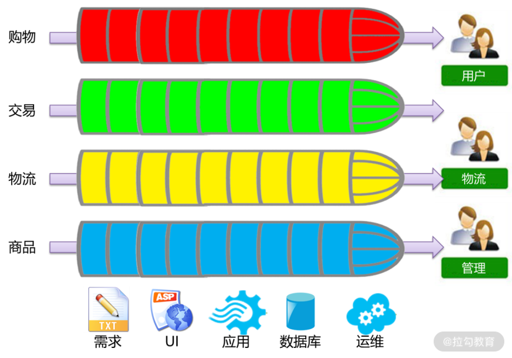
特性团队的组织形式
如何解决这一问题呢？如上图，首先，需要调整团队的组织架构，将筒状的架构竖过来，称为“特性团队”。在特性团队中，每个团队都直接面对终端客户。比如购物团队面对的是购物功能，所有与购物相关的功能都是他们来负责完成，包括从需求到研发，从 UI 到应用再到数据库。最后，经过测试，也是这个团队负责上线部署。这样，整个交付过程都是这个团队负责，没有了那么多团队间的沟通协调，交付速度自然就提升了。
大前端+技术中台
有了特性团队的组织形式，如果还是统一发布，那么交付速度依然提升不了。因此，在特性团队的基础上，软件架构采用了微服务的架构，即每个特性团队各自维护各自的微服务。这样，当该团队完成了一次开发，则自己独立打包、独立发布，不再需要等待其他团队。这样，交付速度就可以得到大幅度提升。如下图所示：

大前端 + 技术中台的组织形式
特性团队 + 微服务架构，可以有效地提高规模化团队的交付速度。然而，仔细思考一下就会惊奇地发现，要这样组建一个特性团队，成本是非常高昂的。团队每个成员都必须既要懂业务，也要懂开发；既要懂 UI、应用，还要懂数据库，甚至大数据，做全栈工程师。如果每个特性团队都是这样组建，每个成员都是全栈工程师，成本过高，是没有办法真正落地的。那么，这个问题该怎么解决呢？
解决问题的关键在于底层的架构团队。这里的架构团队就不再是架构师一个人，而是一个团队。
- 架构团队通过技术选型，构建技术中台，将软件开发中诸如 UI、应用、数据库，甚至大数据等诸多技术进行了封装；
- 然后以 API 接口的形式开放给上层业务。
这样的组织形式，业务开发的技术门槛将得到降低，开发工作量也会减少。这样，特性团队的主要职责将发生变化，即从软件技术中解脱出来，将更多的精力放到对需求的理解、对业务的实现，从而提高用户的体验，这就是“大前端”。所谓大前端，是一种职能的转变，即业务开发人员不再关注技术，而是更加关注业务，深刻地理解业务，并快速应对市场对业务需求的变化。
采用“大前端+技术中台”的战略，为了团队设计能力以及交付速度的提升，需要架构团队的支撑。架构团队从业务开发的角度进行提炼，提炼共性、保留个性，将这些共性沉淀到技术中台中。这样的技术中台，需要 DDD 与微服务架构的支持。通过将 DDD 与微服务涉及的各个技术组件封装到技术中台中，封装各个技术细节，就能很好地支持各业务团队快速开发业务，快速交付用户，进而让团队获得市场竞争优势。
通过以上的分析，我们理清了技术中台建设的需求。为了提高开发团队的交付速度，提升市场竞争力，需要在系统的底层进行技术中台的建设。打造这样一个支持快速交付的技术中台，应当具备以下特征。
(1) 简单易用、快速便捷的技术中台
它能够明显降低软件开发的工作量，使软件系统易于变更、易于维护、易于技术更迭，进而明显降低业务开发人员的技术门槛。通过前面讲的单 Controller、单 DAO 的架构设计，就能够达到这个目的，关键是这个设计思想如何落地。
(2) 易于技术架构演化
我们打造的技术中台可以帮助开发团队调整技术架构，进行技术架构演化，并有效地降低技术架构演化的成本。这就要求系统在进行架构设计时，能够有效地将技术框架与业务代码解耦。采用整洁架构、六边形架构、CQRS 等架构设计模式，就可以帮助我们完成解耦。
(3) 支持领域驱动与微服务的技术架构
前面讲了领域驱动设计的思想，但要将这样的思想落地到软件项目中，甚至最终落地到微服务架构中，也需要这样一个技术中台，支持领域驱动与微服务技术架构。
简单易用的技术中台建设
首先，我们来看一看，如何打造一个简单易用的技术中台，即如何简化开发。以往的软件项目在研发的过程中需要编写太多的代码，这既加重了软件研发的工作量，延缓了软件交付的速度，又使得日后的维护与变更成分加大。软件研发的一个非常重要的规律就是：
- 你写的代码越多，可能出现 Bug 的概率就越高，日后的维护与变更就越困难；
- 你写的代码越少，Bug 就越少，日后维护与变更就越容易。
俗话说：小船好掉头，泰坦尼克号看见冰山了为什么要撞上去？因为它实在太大了，根本来不及掉头。写代码也是一样的，一段 10 来行的代码变更会很容易，但一段数百上千行的代码变更就非常复杂。因此，我们设计软件应当秉承这样的态度：宁愿花更多的时间去分析设计，让软件设计精简到极致，从而花更少的时间去编码。俗话说：磨刀不误砍柴工。用这样的态度编写出来的代码，既快又易于维护。
接着，看一看在以往软件研发过程中存在的问题。以往的软件项目在研发的过程中需要编写太多的代码了，每个功能都要编写自己的 UI、Controller、Service 和 DAO。并且，在每一个层次中都有不同格式的数据，因此我们编写的大量代码都是在进行各个层次之间的数据格式转换。如下图所示：
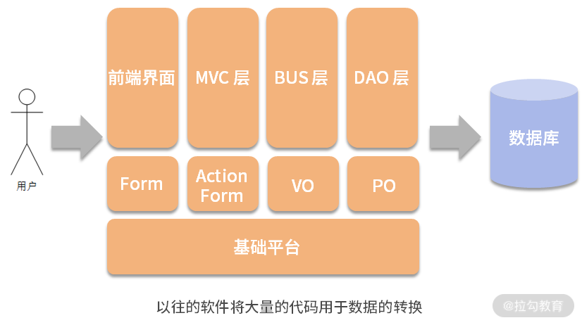
譬如，前端以 Form 的形式传输到后台，这时后台由 MVC 层从 Model 或者 Request 中获得，然后将其转换成值对象，接着去调用 Service。然而，从 Model 或者 Request 中获得数据以后，由于我们在 MVC 层的 Controller 中写了太多的判断与操作，再将其塞入值对象中，所以这里耗费了太多的代码。
接着，在 Service 中经过各种业务操作，最后要存盘的时候，又要将 VO 转换为 PO，将数据持久化存储到数据库中。这时，又要为每一个功能编写一个 DAO。我们写的代码越多，日后维护与变更就越困难。那么，能不能将这些转换统一成公用代码下沉到技术中台中呢？基于这样的思想，系统架构调整为这样：

在这个架构中，将各个层次的数据都统一成值对象，这是怎样统一的呢？首先，在前端的数据，现在越来越多的前端框架都是以 JSON 的形式传递的。JSON 的数据格式实际上是一种名 - 值对。因此，可以制订一个开发规范，要求前端 JSON 对象的设计，与后台值对象的格式一一对应。这样，当 JSON 对象传递到后台后，MVC 层就只需要一个通用的程序，以统一的形式将 JSON 对象转换为值对象。这样，还需要为每个功能编写 Controller 吗？不用了，整个系统只需要一个 Controller，并将其下沉到技术中台中。
同样，Service 在经过了一系列的业务操作，最后要存盘的时候，可以这样做：制作一个vObj.xml 的配置文件来建立对应关系，将每个值对象都对应数据库中的一个表，哪个属性就对应哪个字段。这样，DAO 拿到哪个值对象，就知道该对象中的数据应当保存到数据库的哪张表中。这时，还需要为每个功能编写一个 DAO 吗？不用了，整个系统只需要一个 DAO。
通过以上的设计思想架构的系统，开发工作量将极大地降低。在业务开发时，每个功能都不用再编写 MVC 层了，就不会将业务代码写到 Controller 中，而是规范地将业务代码编写到 Service或值对象中。接着，整个系统只有一个 DAO，每个功能的 Service 注入的都是这一个 DAO。这样，真正需要业务开发人员编写的仅限于前端 UI、Service 和值对象。而 Service 和值对象都是源于领域模型的映射，因此业务开发人员就会将更多的精力用于功能设计与前端 UI，给用户更好的用户体验，也提高了交付速度。
总结
我们采用 DDD 是为了更深刻地理解业务，做出用户满意的产品；我们还需要快速交付产品，以应对竞争激烈且瞬息万变的市场。这两方面需要双管齐下，才能获得市场竞争的优势。因此，我们不仅要学习 DDD，还要学习如何建立支持 DDD 的技术中台，实现快速交付。
本讲讲解了如何构建一个简单易用的技术中台。下一讲将在此基础上进一步讲解这个中台的设计实现，即如何实现单 Controller，如何实现单 DAO，如何做通用的仓库与工厂，等等。
13 如何实现支持快速交付的技术中台设计？
前面提到了“大前端”的思想，也就是软件团队组织形式的趋势是“大前端 + 技术中台”，从而通过快速交付提高市场竞争力。所谓的“大前端 + 技术中台”，就是在开发团队中有一个架构支持团队，他们通过架构强大的技术中台，将软件开发中的许多技术架构封装在平台中。有了这样一个技术中台，其他各个开发团队都基于它进行业务开发。
这样，既可以降低业务开发的工作量，提高开发速度，又可以降低技术门槛。业务开发人员也不必过于关注技术，而是将更多的精力集中在对业务的理解，并将对业务深刻的理解融入领域建模的过程中，从而开发出用户更满意的软件，提高用户体验。
因此，如何打造一个强大而实用的技术中台，成了各个软件开发团队迫切的需求。现在我们就从实战的角度看一看，以上这些设计思想该如何落地技术中台建设。
命令与查询职责分离（CQRS），是软件大师 Martin Fowler 在他的著作《企业应用架构模式》中提出来的一种架构设计模式。该模式将系统按照职责划分为命令（即增删改操作）与查询两个部分。
- 所有命令部分的增删改操作，应当采用领域驱动设计的思想进行软件设计，从而更好地应对大规模复杂应用；
- 所有的查询功能则不适用于领域驱动设计，而应当采用事务脚本模式（Transaction Script），即直接通过 SQL 语句进行查询。
遵循该设计模式，是我们在许多软件项目中总结出来的最佳实践。因此，技术中台在建设时，对业务系统的支持也分为增删改与查询两个部分。
增删改的架构设计

增删改部分的技术中台架构设计
在增删改部分中，采用了前面提到的单 Controller、单 Dao 的架构设计。如上图所示，各功能都有各自的前端 UI。但与以往架构不同的是，每个功能的前端 UI 对后台请求时，不再调用各自的 Controller，而是统一调用一个 Controller。然而，每个功能的前端在调用这一个 Controller 时，传递的参数是不一样的。首先从前端传递的是 bean，这个 bean 是什么呢？后台各功能都有一个 Service，将该 Service 注入 Dao 以后，会在 Spring 框架中配置成一个bean。这时，前端只知道调用的是这个 bean，但不知道它是哪个 Service。
这样的设计，既保障了安全性（前端不知道具体是哪个类），又有效地实现了前后端分离，将前端代码与后端解耦。
紧接着，前端还要传递一个 method，即调用的是哪个方法，和哪个 JSON 对象。这样，Controller 就可以通过反射进行相应的操作。这里的设计思想是，在软件开发过程中，通过规范与契约的约定，我们认为前端开发人员已经知道了他需要调用后端哪个 bean、哪个method，以及什么格式的 JSON，就可以大大简化技术中台的设计。
单 Controller 的设计
前端所有功能的增删改操作，以及基于 ID 的 get/load 操作，都是访问的 OrmController。
前端在访问 OrmController 时，输入如下 HTTP 请求：
http://localhost:9003/orm/{bean}/{method}
例如：
- GET 请求
- POST 请求
http://localhost:9003/orm/product/saveProduct-d"id=P00006&name=ThinkPad+T220&price=4600&unit=%E4%B8%AA&supplierId=20002&classify=%E5%8A%9E%E5%85%AC%E7%94%A8%E5%93%81"
这里的 {bean} 是配置在 Spring 中的 bean.id，{method} 是该 bean 中需要调用的方法（注意，此处不支持方法的重写，如果出现重写，它将去调用同名方法中的最后一个）。
- 如果要调用的方法有值对象，按照规范，必须将值对象放在方法的第一个参数上。
- 如果要调用的方法既有值对象，又有其他参数，则值对象中的属性与其他参数都放在该 JSON 对象中。如：要调用的方法为 saveProduct(product, saveMode)，POST 请求为：
http://localhost:9003/orm/product/saveProduct -d "id=500006&name=ThinkPad+T220&price=4600&unit=%E4%B8%AA&supplierId=20002&classify=%E5%8A%9E%E5%85%AC%E7%94%A8%E5%93%81&saveMode=1"
特别需要注意的是：目前 OrmController 不包含任何权限校验，因此配置在 Spring 中的 bean 的所有方法都可以被前端调用。所以在实际项目中需要在 OrmController 之前进行一个权限校验，来规范前端可以调用的方法。建议使用服务网关或 filter 进行校验。
OrmController 的流程设计如下：
- 根据前端参数 bean，从 Spring 中获得 Service；
- 根据前端参数 method，通过反射获得调用方法；
- 通过反射获得调用方法的第一个参数作为值对象；
- 通过反射创建值对象，根据反射获得值对象的所有属性，从前端 JSON 中获得对应属性的值，写入值对象；
- 根据前端 JSON 获得其他参数；
- 将值对象与其他参数，使用反射调用 Service 中的 method 方法。
单 Dao 的设计
当系统在 Service 中完成了一系列的业务操作，最终要存盘时，都统一调用一个单 Dao。但是，在调用单 Dao 之前，每个值对象都应当通过 vObj.xml 进行配置。在该配置中，将每个值对象对应的表，以及值对象中每个属性对应的字段，通过 vObj.xml 配置文件进行对应。那么通用的 BasicDao 就可以通过配置文件形成 SQL，并最终完成数据库持久化操作。
vObj.xml 配置文件如下：
<?xml version="1.0" encoding="UTF-8"?>
<vobjs>
<vo class="com.demo2.customer.entity.Customer" tableName="Customer">
<property name="id" column="id" isPrimaryKey="true"></property>
<property name="name" column="name"></property>
<property name="sex" column="sex"></property>
<property name="birthday" column="birthday"></property>
<property name="identification" column="identification"></property>
<property name="phone_number" column="phone_number"></property>
</vo>
</vobjs>
值对象中可以有很多的属性变量，但只有最终作持久化的属性变量才需要配置。这样可以使值对象的设计具有更大的空间，可以去做更多的数据转换与业务操作。前面提到充血模型的设计，就是需要在值对象中加入更多的操作与转换，使值对象可以长得与数据库的表不一样。但只要配置最后要持久化的属性，就会将这些属性写入到数据库相应的表中，或者从数据库中读取数据。
有了以上的设计，每个 Service 在 Spring 中都是统一注入 BasicDao。
- 如果要使用 DDD 的功能支持，注入通用仓库 Repository；
- 如果要使用 Redis 缓存，注入 RepositoryWithCache。
Spring 配置如下：
<?xml version="1.0" encoding="UTF-8"?>
<beans xmlns="http://www.springframework.org/schema/beans" ...>
<description>The application context for orm</description>
<bean id="customer" class="com.demo2...CustomerServiceImpl">
<property name="dao" ref="basicDao"></property>
</bean>
</beans>
特别需要说明的是，虽然当下注解比较流行，并且有诸多优势，但最大的问题是让业务代码对技术框架形成依赖，违背了技术中台设计的初衷。因此，在这里，虽然 Controller、Dao 以及其他功能设计使用了注解，但基于本框架进行的业务开发，包括 Spring 的配置、MyBatis 的配置、vObj 的配置，建议都采用 XML 文件的形式，而不要采用注解。这样，业务开发中设计的 Service 都是纯洁的，没有任何技术依赖，才能在将来移植到各种技术框架中，并长盛不衰。
这样，单 Dao 的流程设计如下。
1.单 Dao 调用 VObjFactory.getVObj(class) 获得配置信息 vObj。
2.根据 vObj.getTable() 获得对应的表名。
3.for(Property prop : vObj.getPreperties() ) {
- 通过 prop.getColumn() 获得值对象对应的字段；
- 运用反射从值对象中获得所有属性及其对应的值；
- 通过以上参数形成 SQL 语句。
4.通过 SQL 语句执行数据库操作。
查询功能的架构设计
接着，是查询功能的技术中台设计，如图所示：

查询功能的技术中台架构设计
与增删改部分一样的是，查询功能中，每个功能的前端 UI 也是统一调用一个 Controller。但与增删改的部分不一样的是，查询功能的前端 UI 传递的参数不同，因此是另一个类 QueryController。
在调用时，首先需要传递的还是 bean。但与增删改不同的是，查询功能的 Service 只有一个，那就是 QueryService。但是，该 Service 在 Spring 中配置的时候，往 Service 中注入的是不同的 Dao，就可以装配成各种不同的 bean。这样，前端调用的是不同的 bean，最后执行的就是不同的查询。
此外，与增删改不同的是，查询部分不需要传递 method 参数，因为每次查询调用的方法都是query()。最后，前端还要以 JSON 的形式传递各种查询参数，就能进行后端查询了。
单 Controller 的设计
在进行查询时，前端输入 HTTP 请求：
http://localhost:9003/query/{bean}
例如：
http://localhost:9003/query/customerQry?gender=male&page=1&size=30
该方法既可以接收 GET 请求，也可以接收 POST 请求。{bean} 是配置在 Spring 中的Service。QueryController 通过该请求，在 Spring 中找到 Service，并调用Service.query(map) 进行查询，此处的 map 就是该请求传递的所有查询参数。
为此，查询部分的单 Controller 的流程设计如下：
- 从前端获得 bean、page、size、count，以及查询参数；
- 根据 bean 从 Spring 中获得相应的 Serivce；
- 从前端获得查询参数 JSON，将其转换为 Map；
- 执行 service.query(map)；
- 执行完查询后，以不同形式返回给前端。
单 Service 的设计
查询的部分采用了单 Service 的设计，即所有的查询都是配置的 QueryService 进行查询，但注入的是不同的 Dao，就可以配置成不同的 bean，完成各自不同的查询。为了设计更加简化，每个 Dao 可以通过 MyBatis 框架，注入同一个 Dao，但配置不同的 Mapper，就可以完成不同的查询。因此，先配置 MyBatis 的 Mapper 文件：
<?xml version="1.0" encoding="UTF-8"?>
<!DOCTYPE mapper PUBLIC "-//mybatis.org//DTD Mapper 3.0//EN"
"http://mybatis.org/dtd/mybatis-3-mapper.dtd">
<mapper namespace="com.demo2.customer.query.dao.CustomerMapper">
<!--筛选条件-->
<sql id="searchParam">
<if test="id != '' and id != null">
and id = #{id}
</if>
</sql>
<!--求count判断-->
<sql id="isCount1">
<if test="count == null and notCount ==1">
select count(*) from (
</if>
</sql>
<sql id="isCount2">
<if test="count == null and notCount ==1">
) count
</if>
</sql>
<!--是否分页判断-->
<sql id="isPage">
<if test="size != null and size !=''">
limit #{size} offset #{firstRow}
</if>
<if test="size ==null or size ==''">
<if test="pageSize != null and pageSize !=''">
limit #{pageSize} offset #{startNum}
</if>
</if>
</sql>
<select id="query" parameterType="java.util.HashMap" resultType="com.demo2.customer.entity.Customer">
<include refid="isCount1"/>
SELECT * FROM Customer WHERE 1 = 1
<include refid="searchParam"/>
<include refid="isPage"/>
<include refid="isCount2"/>
</select>
</mapper>
然后，将其注入 Spring 中，完成相应的配置，就可以进行查询了：
<?xml version="1.0" encoding="UTF-8"?>
<beans xmlns="http://www.springframework.org/schema/beans" ...>
<description>The application context for query</description>
<bean id="customerQry" class="com.demo2.support.service.impl.QueryServiceImpl">
<property name="queryDao">
<bean class="com.demo2.support.dao.impl.QueryDaoMybatisImpl">
<property name="sqlMapper" value="com.demo2.customer.query.dao.CustomerMapper.query"></property>
</bean>
</property>
</bean>
</beans>
每个查询的 bean 都是配置的 QueryServiceImpl，但每个 bean 配置的是不同的 sqlMapper，就会执行不同的查询。这里的 sqlMapper 应当与前面 MyBatis 配置中的namespace 相对应。
这样，查询部分的单 Service 流程设计如下：
- 将查询参数 map、 page、size 传递给 Dao，执行查询 dao.query(map)；
- 在查询的前后增加空方法 beforeQuery()、afterQuery() 作为 hook，当某业务需要在查询前后进行处理时，通过重载子类去实现；
- 判断前端是否传递 count，如果有则不再求和，否则调用 dao.count() 求和计算“第 x 页，共 y 页”；
- 将数据打包成 ResultSet 对象返回。
通常，在执行查询时，只需要执行 dao.query(map) 就可以了。由于不同的 bean 注入的 Dao不同，因此执行 dao.query(map) 就会执行不同的查询。但是，在某些业务中，需要个性地在查询前进行某些处理，如对查询参数进行某些转换，或者在查询后对查询结果进行某些转换与补填。现在的设计中只有一个 Service，如何实现查询前后的这些处理呢？
首先，在 QueryService 中增加了 beforeQuery() 和 afterQuery() 两个方法，但这两个方法在QueryService 中设计成空方法，什么都没写，因此调用它们就跟没有调用一样。这样的设计叫“钩子 hook”，如下代码所示：
/**
* do something before query.
* It just a hook that override the function in subclass if we need do something before query.
* @param params the parameters the query need
*/
protected void beforeQuery(Map<String, Object> params) {
//just a hood
}
/**
* do something after query.
* It just a hook that override the function in subclass if we need do something after query.
* @param params the parameters the query need
* @param resultSet the result set after query.
* @return
*/
protected ResultSet afterQuery(Map<String, Object> params, ResultSet resultSet) {
//just a hood
return resultSet;
}
这样，如果不需要在查询前后添加处理，直接配置 QueryService 就行了。在执行查询时，就像没有这两个方法一样。然而，如果需要在查询前或查询后添加某些处理时，则通过继承编写一个 QueryService 的子类，并重写 beforeQuery() 或 afterQuery()。在 Spring 配置时配置的是这个子类，就实现了查询前后的处理。
譬如，ProductQuery 这个查询需要在查询后，对查询结果集补填 Supplier。这时，通过继承编写一个子类 ProductQueryServiceImpl，重写 afterQuery()。
public class ProductQueryServiceImpl extends QueryServiceImpl {
@Autowired
private SupplierService supplierService;
@Override
protected ResultSet afterQuery(Map<String, Object> params,
ResultSet resultSet) {
@SuppressWarnings("unchecked")
List<Product> list = (List<Product>)resultSet.getData();
for(Product product : list) {
String supplierId = product.getSupplierId();
Supplier supplier = supplierService.loadSupplier(supplierId);
product.setSupplier(supplier);
}
resultSet.setData(list);
return resultSet;
}
}
最后，将查询结果以 ResultSet 值对象的形式返回给 Controller，Controller 再返回给前端。在这个 ResultSet 中：
- 属性 data 是这一页的查询结果集；
- page、size 是分页信息；
- count 是记录总数。
通过这 3 个值就可以在前端显示“第 x 页，共 y 页，z 条记录”。在第一次查询时，除了查询这一页的数据，还要执行 count。将该 count 记录下来后，在进行分页查询时，就不再需要执行 count，从而有效提高查询性能。
属性 aggregate 是一个 map，如果该查询在前端展现时，需要在表格的最下方对某些字段进行汇总，并且这个汇总是对整个查询结果的汇总，而不是这一页的汇总，则将该字段作为 Key 值写入 aggregate 中，Value 是汇总的方式，如 count、sum、max 等。通过这样的设置，就可以在查询结果集的最后一行返回一个汇总记录。
通过以上技术中台的设计，各查询功能的编码就会极大地简化。具体来说，设计一个普通的查询，只需要制作一个 MyBatis 的查询语句配置，在 Spring 配置中制作一个 bean。然后，就可以通过前端进行查询了，甚至都不需要编写任何 class。只有在查询前后添加操作时，才需要自己制作一个子类。
此外，对于进行查询结果集的补填，也可以使用通用程序 AutofillQueryServiceImpl，在下一讲“如何设计支持领域驱动的技术中台”中会详细讲解。
总结
本讲讲解了一个强大而落地的技术中台设计实践。通过该技术中台的封装：
- 在增删改操作时，只需编写前端界面、Service 与值对象就可以了，更多技术细节被封装起来了，这样，开发人员就可以专心地将领域模型转换成业务代码的设计实现，并随着领域模型的变更而变更代码，不断满足用户需求；
- 在查询操作时，在大多数情况下只需要编写 MyBatis 与 Spring 的配置就可以完成查询功能的编写，开发工作量大大降低，同时变更也变得轻松快捷。
以上技术中台的设计是普通技术中台的设计，那么支持 DDD 的技术中台又该如何设计呢？是不是可以编写通用的仓库与工厂呢？下一讲将为你讲解。
点击 GitHub 链接，查看源码。
14 如何设计支持 DDD 的技术中台？
DDD 要落地实践，最大的“坑”就是支持 DDD 的技术架构如何设计。很多团队在工作开展前期，一切都很顺利：通过对业务需求的理解，建立领域模型；将领域模型通过一系列的设计，落实程序设计，准确地说是程序设计中业务领域层的设计。然而就在编码实现的时候，出现了各种问题：
- 要么是不能准确掌握 DDD 的分层架构；
- 要么是把程序写得非常乱，频繁地在各种 TDO、DO、PO 之间进行数据转换，耗费大量代码，使得日后变更异常困难。
因此，还需要有一个强有力的技术中台的支持，来简化 DDD 的设计实现，解决“最后一公里”的问题。唯有这样，DDD 才能在项目中真正落地。
传统 DDD 的架构设计

通常，在支持领域驱动的软件项目中，架构设计如上图所示。
- 展现层是前端的 UI，它通过网络与后台的应用层交互。
- 应用层类似于 MVC 层，主要用于前后端交互，在接收用户请求后，会去调用领域层的服务，也就是 Service。
- 在领域层中，用户请求首先由 Service 接收，然后在执行业务操作的过程中，使用领域对象作为参数（贫血模型的实现），或者去调用领域对象中的相应方法（充血模型的实现）。在领域对象的设计上，可以是实体，也可以是值对象，也可以将它们制作成一个聚合（如果多个领域对象间存在整体与部分的关系）。
- 最后，通过仓库将领域对象中的数据持久化到数据库；使用工厂将数据从数据库中读取、拼装并还原成领域对象。
这些都是将领域驱动落地到软件设计时所采用的方式。从架构分层上说，DDD 的仓库和工厂的设计介于业务领域层与基础设施层之间，即接口在业务领域层，而实现在基础设施层。DDD 的基础设施层相当于支撑 DDD 的基础技术架构，通过各种技术框架支持软件系统完成除了领域驱动以外的各种功能。

然而，传统的软件系统采用 DDD 进行架构设计时，需要在各个层次之间进行各种数据结构的转换：
- 首先，前端的数据结构是 JSON，传递到后台数据接入层时需要将其转换为数据传输对象DTO；
- 然后应用层去调用领域层时，需要将 DTO 转换为领域对象 DO；
- 最后，将数据持久化到数据库时，又要将 DO 转换为持久化对象 PO。
在这个过程中，需要编写大量代码进行数据的转换，无疑将加大软件开发的工作量与日后变更的维护成本。因此，我们可不可以考虑上一讲所提到的设计，将各个层次的数据结构统一起来呢？

另外，传统的软件系统在采用 DDD 进行架构设计时，需要为每一个功能模块编写各自的仓库与工厂，如订单模块有订单仓库与订单工厂、库存模块有库存仓库与库存工厂。各个模块在编写仓库与工厂时，虽然实现了各自不同的业务，却形成了大量重复的代码。这样的问题与前面探讨的 Dao 的问题一样，是否可以通过配置与建模，设计成一个统一的仓库与工厂。如果是这样，那么仓库与工厂又与 Dao 是什么关系呢？基于对以上问题的思考，我提出了统一数据建模、内置聚合的实现、通用仓库和工厂，来简化 DDD 业务开发。因此，进行了如下的架构设计。
通用仓库与通用工厂的设计

该设计与上一讲的架构设计相比，差别仅是将单 Dao 替换为了通用仓库与通用工厂。也就是说，与 Dao 相比，DDD 的仓库就是在 Dao 的基础上扩展了一些新的功能。
- 例如在装载或查询订单时，不仅要查询订单表，还要补填与订单相关的订单明细与客户信息、商品信息，并装配成一个订单对象。在这个过程中，查询订单是 Dao 的功能，但其他类似补填、装配等操作，则是仓库在 Dao 基础上进行的功能扩展。
- 同样，在保存订单时，不仅要保存订单表，还要保存订单明细表，并将它们放到同一个事务中。保存订单表是 Dao 原有的功能，保存订单明细表并添加事务，则是仓库在 Dao 基础上进行的功能扩展。
这就是 DDD 的仓库与 Dao 的关系。
基于这种扩展关系，该如何设计这个通用仓库呢？如果熟悉设计模式，则会想到“装饰者模式”。“装饰者模式”的目的，就是在原有功能的基础上进行“透明功能扩展”。这种“透明功能扩展”，既可以扩展原有功能，又不影响原有的客户程序，使客户程序不用修改任何代码就能实现新功能，从而降低变更的维护成本。因此，将“通用仓库”设计成了这样。

即在原有的 BasicDao 与 BasicDaoImpl 的基础上，增加了通用仓库 Repository。将 Repository 设计成装饰者，它也是接口 BasicDao 的实现类，是通过一个属性变量引用的 BasicDao。使用时，在 BasicDaoImpl 的基础上包一个 Repository，就可以扩展出那些 DDD 的功能。因此，所有的 Service 在注入 Dao 的时候：
- 如果不使用 DDD，则像以前一样注入BasicDaoImpl；
- 如果需要使用 DDD，则注入 Repository。
配置如下：
<?xml version="1.0" encoding="UTF-8"?>
<beans xmlns="http://www.springframework.org/schema/beans" ...>
<description>The application context for orm</description>
<bean id="basicDao" class="com...impl.BasicDaoJdbcImpl"></bean>
<bean id="redisCache" class="com...cache.RedisCache"></bean>
<bean id="repository" class="com...RepositoryWithCache">
<property name="dao" ref="basicDao"></property>
<property name="cache" ref="redisCache"></property>
</bean>
<bean id="product" class="com.demo2...impl.ProductServiceImpl">
<property name="dao" ref="repository"></property>
</bean>
<bean id="supplier" class="com.demo2...impl.SupplierServiceImpl">
<property name="dao" ref="basicDao"></property>
</bean>
<bean id="productQry" class="com.demo2...AutofillQueryServiceImpl">
<property name="queryDao">
<bean class="com.demo2.support.dao.impl.QueryDaoMybatisImpl">
<property name="sqlMapper" value="com.demo2...dao.ProductMapper.query"></property>
</bean>
</property>
<property name="dao" ref="basicDao"></property>
</bean>
</beans>
在这一配置中可以看到，Repository 中有一个属性 Dao 配置的是 BasicDao。这样当 Repository 访问数据库时，通过 BasicDao 进行访问。同时，这里实现了两个通用仓库：Repository 与 RepositoryWithCache。如果配置后者则可以实现缓存的功能。
在以上示例中，Product 将 Dao 配置为 Repository。这样，Product 在通过 ID 装载时，就会在产品对象中加载与其关联的供应商 Supplier。同时，productQry 将 queryDao 配置为 AutofillQueryServiceImpl，则在查询产品信息以后，会自动补填与其关联的供应商 Supplier。
这里，通用仓库是如何指导 Product 关联 Supplier 的呢？关键就在于文件 vObj.xml 进行了以下配置：
<?xml version="1.0" encoding="UTF-8"?>
<vobjs>
<vo class="com.demo2.trade.entity.Product" tableName="Product">
<property name="id" column="id" isPrimaryKey="true"></property>
<property name="name" column="name"></property>
<property name="price" column="price"></property>
<property name="unit" column="unit"></property>
<property name="classify" column="classify"></property>
<property name="supplier_id" column="supplier_id"></property>
<join name="supplier" joinKey="supplier_id" joinType="manyToOne" class="com.demo2.trade.entity.Supplier"></join>
</vo>
<vo class="com.demo2.trade.entity.Supplier" tableName="Supplier">
<property name="id" column="id" isPrimaryKey="true"></property>
<property name="name" column="name"></property>
</vo>
</vobjs>
在 Product 中增加了join 标签，标注领域对象间的关联关系。其中 joinKey=“supplier_id”，代表在 Product 对象中的属性 supplier_id 用于与 Supplier 的 key 值关联。joinType 代表关联类型，支持 oneToOne、manyToOne、oneToMany 三种类型的关联，但基于性能的考虑，不支持 manyToMany。当类型是 oneToMany 时，补填的是一个集合，因此领域对象中也应当是一个集合属性，例如 Customer 中有一个 Address 是 oneToMany，因此领域对象设计成这样：
/**
* The customer entity
* @author fangang
*/
public class Customer extends Entity<Long> {
......
private List<Address> addresses;
/**
* @return the addresses
*/
public List<Address> getAddresses() {
return addresses;
}
/**
* @param addresses the addresses to set
*/
public void setAddresses(List<Address> addresses) {
this.addresses = addresses;
}
}
因此，在 vObj.xml 中进行如下配置：
<?xml version="1.0" encoding="UTF-8"?>
<vobjs>
<vo class="com.demo2.customer.entity.Customer" tableName="Customer">
<property name="id" column="id" isPrimaryKey="true"></property>
<property name="name" column="name"></property>
<property name="sex" column="sex"></property>
<property name="birthday" column="birthday"></property>
<property name="identification" column="identification"></property>
<property name="phone_number" column="phone_number"></property>
<join name="addresses" joinKey="customer_id" joinType="oneToMany" isAggregation="true" class="com.demo2.customer.entity.Address"></join>
</vo>
<vo class="com.demo2.customer.entity.Address" tableName="Address">
<property name="id" column="id" isPrimaryKey="true"></property>
<property name="customer_id" column="customer_id"></property>
<property name="country" column="country"></property>
<property name="province" column="province"></property>
<property name="city" column="city"></property>
<property name="zone" column="zone"></property>
<property name="address" column="address"></property>
<property name="phone_number" column="phone_number"></property>
</vo>
</vobjs>
这样，在装载和查询 Customer 时，内置就将它关联的 Address 也加载出来了。在加载中，通过 Dao 去数据库中查询数据，然后将查询到的 Customer 与多个 Address 交给通用工厂去装配。如果配置的是 RepositoryWithCache，则加载 Customer 时会先检查缓存中有没有该客户。如果没有则到数据库中查询。
内置聚合功能
聚合是领域驱动设计中一个非常重要的概念，它代表在真实世界中的整体与部分的关系。比如，Order（订单）与 OrderItem（订单明细）就是一个整体与部分的关系。当加载一个订单时，应当同时加载其订单明细，而保存订单时应当同时保存订单与订单明细，并放在同一事务中。在设计支持领域驱动的技术中台时，应当简化聚合的设计与实现，让业务开发人员不必每次都编写大量代码，而是通过一个配置就可以完成聚合的实现。
例如，订单与订单明细存在聚合关系，则在 vObj.xml 中建模时，通过 join 标签关联它们，并置 join 标签的 isAggregation=true。这样，在查询或装载订单的同时，装载它的所有订单明细，而在保存订单时保存订单明细，并将它们置于同一事务中。具体配置如下：
<?xml version="1.0" encoding="UTF-8"?>
<vobjs>
<vo class="com.demo2.order.entity.Customer" tableName="Customer">
<property name="id" column="id" isPrimaryKey="true"></property>
<property name="name" column="name"></property>
<property name="sex" column="sex"></property>
<property name="birthday" column="birthday"></property>
<property name="identification" column="identification"></property>
<property name="phone_number" column="phone_number"></property>
<join name="addresses" joinKey="customer_id" joinType="oneToMany" isAggregation="true" class="com.demo2.order.entity.Address"></join>
</vo>
<vo class="com.demo2.order.entity.Address" tableName="Address">
<property name="id" column="id" isPrimaryKey="true"></property>
<property name="customer_id" column="customer_id"></property>
<property name="country" column="country"></property>
<property name="province" column="province"></property>
<property name="city" column="city"></property>
<property name="zone" column="zone"></property>
<property name="address" column="address"></property>
<property name="phone_number" column="phone_number"></property>
</vo>
<vo class="com.demo2.order.entity.Product" tableName="Product">
<property name="id" column="id" isPrimaryKey="true"></property>
<property name="name" column="name"></property>
<property name="price" column="price"></property>
<property name="unit" column="unit"></property>
<property name="classify" column="classify"></property>
<property name="supplier_id" column="supplier_id"></property>
</vo>
<vo class="com.demo2.order.entity.Order" tableName="Order">
<property name="id" column="id" isPrimaryKey="true"></property>
<property name="customer_id" column="customer_id"></property>
<property name="address_id" column="address_id"></property>
<property name="amount" column="amount"></property>
<property name="order_time" column="order_time"></property>
<property name="flag" column="flag"></property>
<join name="customer" joinKey="customer_id" joinType="manyToOne" class="com.demo2.order.entity.Customer"></join>
<join name="address" joinKey="address_id" joinType="manyToOne" class="com.demo2.order.entity.Address"></join>
<join name="orderItems" joinKey="order_id" joinType="oneToMany" isAggregation="true" class="com.demo2.order.entity.OrderItem"></join>
</vo>
<vo class="com.demo2.order.entity.OrderItem" tableName="OrderItem">
<property name="id" column="id" isPrimaryKey="true"></property>
<property name="order_id" column="order_id"></property>
<property name="product_id" column="product_id"></property>
<property name="quantity" column="quantity"></property>
<property name="price" column="price"></property>
<property name="amount" column="amount"></property>
<join name="product" joinKey="product_id" joinType="manyToOne" class="com.demo2.order.entity.Product"></join>
</vo>
</vobjs>
在该配置中可以看到，订单不仅与订单明细关联，还与客户、客户地址等信息关联。但是，订单与客户、客户地址等信息不存在聚合关系，当保存订单时不需要保存或更改这些信息。只有订单明细与订单具有聚合关系，在订单中配置订单明细的 join 标签时，才需要增加isAggregation=true。这样，当保存订单时，同时也保存订单明细，并将它们放到同一事务中。通过这样的设计，既简化了聚合的实现，又使得聚合实现在底层技术中台中，与业务代码无关。因此，系统可以通过底层不断优化对聚合的设计实现，使变更成本更低。
总结
本讲通过一个支持 DDD 的技术中台，将许多 DDD 繁杂的设计实现，做成通用的仓库与工厂，封装在了底层的技术中台中。这样，业务开发人员就可以更加专注于领域建模，将模型按照一定的规范进行配置，来完成基于 DDD 的设计开发。而底层的技术中台就可以根据这些配置，完成相应的数据持久化与查询装载了。
同时，以上设计简化了系统设计，不再需要将数据在 JSON、TDO、DO、PO 中进行转换，而是通过规范，将 JSON 与 DO 设计一致，将 DO 与数据库进行配置，就可以完成开发。代码减少了，日后的维护与变更也变得容易了。
另外，有同学问了一个有趣的问题：我在查询订单的时候本来不想加载订单明细，而加载了订单明细，是不是会影响性能。答案是肯定的，所以说未来在面对高并发时，应当采用富客户端以减少前后交互次数。因此，在设计上应当尽量多加载一些数据到前端，使更多操作直接在前端进行。这样就有效减少了交互次数，降低了系统压力。
下一讲将进一步探讨支持 DDD 的微服务，技术中台该如何设计。
点击 GitHub 链接，查看源码。
15 如何设计支持微服务的技术中台？
有了技术中台对领域驱动的支持，那如何应用于微服务架构呢？支持 DDD 与微服务的技术中台应当具备以下几个方面的能力：
- 解决当前微服务架构的技术不确定性，使得微服务项目可以用更低的成本应对日后技术架构的更迭；
- 可以更加容易地将领域驱动设计应用到微服务架构中，包括：领域建模、限界上下文的微服务拆分、事件通知机制等；
- 需要解决领域对象在仓库与工厂进行装配时，如何将本地查询替换为远程接口调用，实现微服务间数据装配的问题。
解决技术不确定性的问题
如今的微服务架构，基本已经形成了 Spring Cloud 一统天下的局势。然而，在 Spring Cloud 框架下的各种技术组件依然存在诸多不确定性，如：注册中心是否采用 Eureka、服务网关是采用 Zuul 还是 Gateway，等等。同时，服务网格 Service Mesh 方兴未艾，不排除今后所有的微服务都要切换到 Service Mesh 的可能。在这种情况下如何决策微服务的技术架构？代码尽量不要与 Spring Cloud 耦合，才能在将来更容易地切换到 Service Mesh。那么，具体又该如何做到呢？
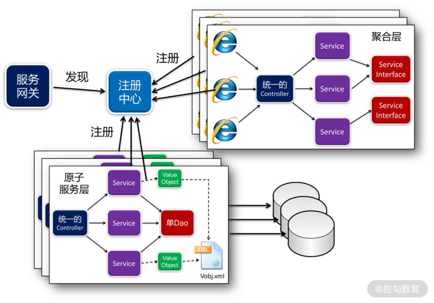
单 Controller、单 Dao 的设计在微服务架构的应用
如上图所示，当前端通过服务网关访问微服务时，首先要访问聚合层的微服务。这时，在聚合层的微服务中，采用单 Controller 接收前端请求。这样，只有该 Controller 与 MVC 框架耦合，后面所有的 Service 不会耦合，从而实现了业务代码与技术框架的分离。
同样的，当 Service 执行各种操作调用原子服务层的微服务时，不是通过 Ribbon 进行远程调用，而是将原子服务层的微服务开放的接口，在聚合层微服务的本地编写一个 Feign 接口。那么，聚合层微服务在调用原子微服务时，实际调用的是自己本地的接口，再由这个接口通过加载 Feign 注解，去实现远程调用。
这样，聚合层微服务中的各个 Service 就不会与 Spring Cloud 各个组件发生任何耦合，只有那些 Feign 接口与 Spring Cloud 耦合去实现远程调用，让业务代码与技术框架实现了解耦。
同样的道理，原子服务层的微服务在对外开放接口时，不是由各个 Service 直接开放 API 接口。因为如果让 Service 直接开放 API 接口，就需要编写相关注解，使得 Service 与 Spring Cloud 耦合。因此，由统一的 Controller 开放接口，再由它去调用内部的 Service。这样，所有的 Service 就是纯洁的，不与 Spring Cloud 技术框架耦合，只有 Controller 与其耦合。
有了以上这些设计，当未来需要从 Spring Cloud 框架迁移到 Service Mesh 时，只需要将那些纯洁的、不与 Spring Cloud 耦合的 Service，与领域对象中的业务代码迁移到新的框架中，就可以以非常低的成本，在各种技术框架中自由地切换，从而快速跟上技术发展的步伐。通过这种方式，就能很好地应对未来的技术不确定性问题，更好地开展架构演化。
支持微服务远程调用的架构设计
此外，微服务架构设计最大的难题是微服务的合理拆分，拆分要体现单一职责原则，即微服务间低耦合，微服务内高内聚。那么，在软件项目中如何做到这些呢？业界最佳的实践无疑是基于领域的设计，即先按照领域业务建模，然后基于限界上下文进行微服务拆分。这样设计出来的微服务系统，都可以保证每次变更落到某个微服务上。微服务变更完了，自己独立升级，就能达到降低维护成本、快速交付的目的。
基于这样的思路，每个微服务在设计时，都采用支持领域驱动的技术中台。这样，每个微服务都是基于领域驱动建模和设计，然后在该技术中台中编码实现，既提高了开发速度，又降低了维护成本。
然而，转型为微服务后，有一个技术难题亟待解决，那就是跨库的数据操作。当一个单体应用拆分成多个微服务后，不仅应用程序需要拆分，数据库也需要拆分。譬如，经过微服务拆分，订单有订单数据库，用户有用户数据库。这时，当查询订单，需要补填其对应的用户信息时，就不能从自己本地的数据库中查询了，而是调用“用户”微服务的远程接口，在用户数据库中查询，然后返回给“订单”微服务。这时，原有的技术中台就必须做出调整。
如何调整呢？通用 DDD 仓库在执行查询或者装载操作时，查询完订单补填用户信息，不是通过 DAO 去查询本地数据库，而是改成调用远程接口，去调用用户微服务。这时，可以先在订单微服务的本地编写一个用户 Service 的 Feign 接口，订单仓库与工厂调用这个接口就可以了。然后通过 Feign 接口实现对用户微服务的远程调用。
采用 Feign 接口实现远程调用
每个微服务都是一个独立的进程，运行在各自独立的 JVM，甚至不同的物理节点上，通过网络访问。因此，微服务与微服务之间的调用必然是远程调用。以往，我们对微服务间的调用采用 Ribbon 的方式，在程序中的任意一个位置，只要注入一个 restTemplate，就可以进行远程调用。
这样的代码过于随意，会越来越难于阅读与变更维护。比如，原来某个微服务中有两个模块 A 与 B，都需要调用模块 C。随着业务变得越来越复杂，需要进行微服务拆分，将模块 C 拆分到了另外一个微服务中。这时，原来的模块 A 与 B 就不能像原来一样调用模块 C，否则就会报错。

Ribbon 的远程调用方式
如何解决以上问题呢？需要同时改造模块 A 与 B，分别加入 restTemplate 实现远程调用，来调用模块 C。也就是说，这时所有调用模块 C 的程序都需要改造，改造的成本与风险就会比较高。
因此，在实现微服务间调用时，我们通常会采用另外一个方案：Feign。Feign 不是另起炉灶，而是对 Ribbon 的封装，目的是使代码更加规范、变更更加易于维护。采用的方案是，不修改模块 A 与 B 的任何代码，而是在该微服务的本地再制作一个模块 C 的接口 C′。该接口与模块 C 一模一样，拥有模块 C 的所有方法，因此模块 A 与 B 还可以像以前一样在本地调用接口 C′。但接口 C′ 只是一个接口，什么都做不了，因此需要通过添加 Feign 的注解，实现远程调用，去调用模块 C。这个方案，既没有修改模块 A 与 B，又没有修改模块 C，而仅仅添加了一个接口 C′，使维护成本降到了最低。
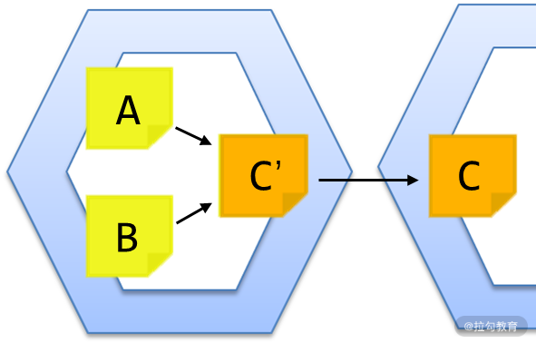
Feign 的远程调用方式
如何通过 Feign 实现微服务的远程调用呢？
首先，创建项目时，在 POM.xml 文件中添加 Eureka Client、Hystrix 与 Actuator 等组件以外，将 ribbon 改为 feign：
<dependency>
<groupId>org.springframework.cloud</groupId>
<artifactId>spring-cloud-starter-openfeign</artifactId>
</dependency>
<!-- 断路器 hystrix -->
<dependency>
<groupId>org.springframework.cloud</groupId>
<artifactId>spring-cloud-starter-netflix-hystrix</artifactId>
</dependency>
<!-- 断路器监控 -->
<dependency>
<groupId>org.springframework.boot</groupId>
<artifactId>spring-boot-starter-actuator</artifactId>
</dependency>
接着，在启动类 FeignApplication 中，不仅添加 Discovery Client，还要添加 Feign Client：
import org.springframework.boot.SpringApplication;
import org.springframework.boot.autoconfigure.SpringBootApplication;
import org.springframework.cloud.client.discovery.EnableDiscoveryClient;
import org.springframework.cloud.netflix.hystrix.EnableHystrix;
import org.springframework.cloud.openfeign.EnableFeignClients;
/**
* @author fangang
*/
@SpringBootApplication
@EnableDiscoveryClient
@EnableFeignClients
@EnableHystrix
public class FeignApplication {
/**
* @param args
*/
public static void main(String[] args) {
SpringApplication.run(FeignApplication.class, args);
}
}
用 Feign 实现调用时，首先在消费者这端编写一个与生产者开放的 API 一模一样的接口，然后添加 Feign 的注解：
/**
* The service of suppliers.
* @author fangang
*/
@FeignClient(value="service-supplier", fallback=SupplierHystrixImpl.class)
public interface SupplierService {
/**
* @param id
* @return the supplier
*/
@RequestMapping(value = "orm/supplier/loadSupplier", method = RequestMethod.GET)
public Supplier loadSupplier(@RequestParam("id")Long id);
/**
* @param ids
* @return the list of suppliers
*/
@PostMapping("orm/supplier/loadSuppliers")
public List<Supplier> loadSuppliers(@RequestParam("ids")List<Long> ids);
/**
* @return the list of suppliers
*/
@GetMapping("orm/supplier/listOfSuppliers")
public List<Supplier> listOfSuppliers();
}
在这一代码例子中，具体的流程是这样的：
- 在生产者那一端有个 SupplierService 的类，因此首先在消费者这端编写一个一模一样的SupplierService 的接口；
- 接着，在 interface 前面添加注解 @FeignClient；
- 这里的 value 为生产者在 Eureka 注册中心中注册的名称；
- 在每个方法前添加注解，GET 请求就写 @GetMapping，POST 请求就写 @PostMapping，名称就是生产者那端开放的接口名称；
- 然后，如果需要将参数加入 url 中，就在参数前添加注解 @RequestParam；
- 有了以上注解，Feign 就可以从接口中取出相应的数据，拼装成 url，最后去执行 ribbon 实现微服务远程调用。
采用 Ref 标签调用 Feign 接口
采用 Feign 实现微服务间的远程调用以后，在 vObj.xml 中进行建模时，也需要做出改变，将join 标签改为 ref 标签。其配置如下所示：
<?xml version="1.0" encoding="UTF-8"?>
<vobjs>
<vo class="com.demo2.product.entity.Product" tableName="Product">
<property name="id" column="id" isPrimaryKey="true"></property>
<property name="name" column="name"></property>
<property name="price" column="price"></property>
<property name="unit" column="unit"></property>
<property name="classify" column="classify"></property>
<property name="supplier_id" column="supplier_id"></property>
<ref name="supplier" refKey="supplier_id" refType="manyToOne" bean="com.demo2.product.service.SupplierService" method="loadSupplier" listMethod="loadSuppliers"></ref>
</vo>
<vo class="com.demo2.product.entity.Supplier" tableName="Supplier">
<property name="id" column="id" isPrimaryKey="true"></property>
<property name="name" column="name"></property>
</vo>
</vobjs>
在这一配置中，将 supplier 由 join 标签改为 ref 标签，其中：
- bean代表在“产品”微服务本地调用“供应商”微服务的 Feign 接口；
- method是指定要调用这个 Feign 接口的方法；
- 而listMethod是在批量查询“产品”数据集时，进行批量补填的优化措施。
通过这样的配置，在查询产品过程中，通用仓库补填供应商信息，就不会去调用本地的 DAO，而是调用 SupplierService 的 Feign 接口，由它实现对“供应商”微服务的远程调用，从而实现跨微服务的数据装配。
总结
本讲提出了支持 DDD + 微服务架构的技术中台设计思想。通过以上的设计，既实现了业务代码与技术框架解耦的整洁架构思想，使得系统在日后更易于架构演化，又实现了领域模型在微服务间的数据装配，解决了 DDD 转型微服务架构的关键技术难题。开发团队有了这样的技术中台，就能将 DDD 运用起来，在项目中真正的落地实践。
下一讲将在 GitHub 上分享代码，进一步讲解这个技术中台的代码设计与项目实践。
点击 GitHub 链接，查看源码。
16 基于 DDD 的代码设计演示（含 DDD 的技术中台设计）
我这些年的从业经历，起初是作为项目经理带团队做软件研发，后来转型成为架构师，站在更高的层面去思考软件研发的那些事儿。我认为，一个成熟的软件研发团队：
- 不仅在于团队成员研发水平的提高；
- 更在于将不断积累的通用的设计方法与技术框架，沉淀到底层的技术中台中。
只要有了这样的技术中台作为支撑，才能让研发团队具备更强的能力，用更快的速度，研发出更多的产业，以快速适应激烈竞争而快速变化的市场。
譬如，团队某次接到了一个数据推送的需求，在完成了该需求并交付用户以后，就在这个功能设计的基础上，抽取共性、保留个性，将其下沉到技术中台形成“数据共享平台”的设计。有了这个功能，团队日后在接到类似需求时，只需要进行一些配置或者简单开发，就能交付用户啦。
这样，团队的研发能力就大大提升了。团队研发的功能越多，沉淀到技术中台的功能就越多，团队研发能力的提升就越大。只有这样的技术中台才能支撑研发团队的快速交付，关键是要有人、有意识地去做这些工作的整理，而我们团队是在“使能故事”中完成这些工作的。
现如今，越来越多的团队采用敏捷开发，在 2~3 周的迭代周期中规划并完成“用户故事”。“用户故事”是需要紧急应对的用户需求，但如果不能提升团队的能力，那么团队就会像救火队员一样永远是在应对用户需求的“火”而疲于奔命。
相反，“使能故事（Enabler Story）”就是为了提升我们的能力，从而更快速地应对用户需求。俗话说：“磨刀不误砍柴工”，“使能故事”就是“磨刀”，它虽然要耗费一些时间，但可以让日后的“砍柴”更快更好，是很值得的。
因此，一个成熟的团队在每次的迭代中不能只是完成“用户故事”，而应该拿出一定比例的时间完成“使能故事”，使团队日后的“用户故事”做得更快，实现快速交付。
我的支持 DDD + 微服务的技术中台就是在这种指导下逐渐形成的。之前在我的团队实践 DDD + 微服务的过程中，遇到了很多的阻力。这种阻力要求团队成员花更多的时间学习 DDD 相关知识，用正确的方法与步骤去设计开发，并做到位。然而，当他们真正做到位以后，却发现 DDD 的设计开发非常烦琐，要频繁地实现各种工厂、仓库、数据补填等开发工作，使开发人员对 DDD 的开发心生厌恶。以往项目经理在面对这些问题时，只能从管理上制定开发规范，但这样的措施于事无补。
而我站在架构师的角度，去设计技术框架，在原有代码的基础上，抽取共性、保留个性，将烦琐的 DDD 开发封装在了技术中台中。这样做，不仅简化了设计开发，使得 DDD 更容易在项目中落地，还规范了代码，使得业务开发人员没有机会去编写 Controller 与 Dao 代码，自然而然地将业务代码基于领域模型设计在了 Service 与领域对象中了。接着，来看看这个框架的设计。
整个演示代码的架构
我把整个演示代码分享在了 GitHub 中，它分为这样几个项目。
- demo-ddd-trade：一个基于 DDD 设计的单体应用。
- demo-parent：本示例所有微服务项目的父项目。
- demo-service-eureka：微服务注册中心 eureka。
- demo-service-config：微服务配置中心 config。
- demo-service-turbine：各微服务断路器监控 turbine。
- demo-service-zuul：服务网关 zuul。
- demo-service-parent：各业务微服务（无数据库访问）的父项目。
- demo-service-support：各业务微服务（无数据库访问）底层技术框架。
- demo-service-customer：用户管理微服务（无数据库访问）。
- demo-service-product：产品管理微服务（无数据库访问）。
- demo-service-supplier：供应商管理微服务（无数据库访问）。
- demo-service2-parent：各业务微服务（有数据库访问）的父项目。
- demo-service2-support：各业务微服务（有数据库访问）底层技术框架。
- demo-service2-customer：用户管理微服务（有数据库访问）。
- demo-service2-product：产品管理微服务（有数据库访问）。
- demo-service2-supplier：供应商管理微服务（有数据库访问）。
- demo-service2-order：订单管理微服务（有数据库访问）。
总之，这里有一个基于 DDD 的单体应用与一个完整的微服务应用。在微服务应用中：
- demo-service-xxx 是我基于一个早期的框架设计的，你可以看到我们以往设计开发的原始状态；
- 而 demo-service2-xxx 是我需要重点讲解的基于 DDD 的微服务设计。
其中，demo-service2-support 是这个框架的核心，即底层技术中台，而其他都是演示对它的具体应用。
单 Controller 的设计实现
与以往不同，在整个系统中只有几个 Controller，并下沉到了底层技术中台 demo-service2-support 中，它们包括以下几部分。
- OrmController：用于增删改操作，以及基于 key 值的 load、get 操作，它们通常基于DDD 进行设计。
- QueryController：用于基于 SQL 语句形成的查询分析报表，它们通常不基于 DDD 进行设计，但查询结果会形成领域对象，并基于 DDD 进行数据补填。
- 其他 Controller，用于如 ExcelController 等特殊的操作，是继承以上两个类的功能扩展。
OrmController 接收诸如 orm/{bean}/{method} 的请求，bean 是配置在 Spring 中的 bean，method 是 bean 中要调用的方法。由于这是一个基础框架，没有限定前端可以调用哪些方法，因此实际项目需要在此之上增加权限校验。该方法既可以接收 GET 方法，也可以接收 POST 方法，因此其他的参数可以根据 GET/POST 各自的方式进行传递。
这里的 bean 对应的是后台的 Service。Service 的编写要求所有的方法，如果需要使用领域对象必须放在第一个参数上。如果第一个参数是简单的数字、字符串、日期等类型，就不是领域对象，否则就作为领域对象，依次从前端上传的 JSON 中获取相应的数据予以填充。这里暂时不支持集合，也不支持具有继承关系的领域对象，待我日后完善。判定代码如下：
/**
* check a parameter whether is a value object.
* @param clazz
* @return yes or no
* @throws IllegalAccessException
* @throws InstantiationException
*/
private boolean isValueObject(Class<?> clazz) {
if(clazz==null) return false;
if(clazz.equals(long.class)||clazz.equals(int.class)||
clazz.equals(double.class)||clazz.equals(float.class)||
clazz.equals(short.class)) return false;
if(clazz.isInterface()) return false;
if(Number.class.isAssignableFrom(clazz)) return false;
if(String.class.isAssignableFrom(clazz)) return false;
if(Date.class.isAssignableFrom(clazz)) return false;
if(Collection.class.isAssignableFrom(clazz)) return false;
return true;
}
这里的开发规范除了要求 Service 的所有方法中的领域对象放第一个参数，还要求前端的 JSON 与领域对象中的属性一致，这样才能完成自动转换，而不需要为每个模块编写 Controller。
QueryController 接收诸如 query/{bean} 的请求，这里的 bean 依然是 Spring 中配置的bean。同样，该方法也是既可以接收 GET 方法，也可以接收 POST 方法，并用各自的方式传递查询所需的参数。
如果该查询需要分页，那么在传递查询参数以外，还要传递 page（第几页）与 size（每页多少条记录）。第一次查询时，除了分页，还会计算 count 并返回前端。这样，在下次分页查询时，将 count 也作为参数传递，将不再计算 count，从而提升查询效率。此外，这里还将提供求和功能，敬请期待。
单 Dao 的设计实现
以往系统设计的硬伤在于一头一尾：Controller 与 Dao。它既要为每个模块编写大量代码，也使得系统设计非常不 DDD，令日后的变更维护成本巨大。因此，我在大量系统设计问题分析的基础上，提出了单 Controller 与单 Dao 的设计思路。前面讲解了单 Controller 的设计，现在来看一看单 Dao 的设计。
诚然，当今的主流是使用注解。然而，注解的使用存在诸多的问题。
- 首先，它会带来业务代码与技术框架的依赖，因此当在 Service 中加入注解时，就不得不与 Spring、Springcloud 耦合，使得日后转型其他技术框架困难重重。
- 此外，注解往往适用于一对一、多对一的场景，而一对多、多对多的场景往往非常麻烦。而本框架存在大量一对多、多对多的场景，因此我建议你还是回归到 XML 的配置方式。
在项目中的所有 Service 都要有一个 BasicDao 的属性变量，例如：
public class CustomerServiceImpl implements CustomerService {
private BasicDao dao;
/**
* @return the dao
*/
public BasicDao getDao() {
return dao;
}
/**
* @param dao the dao to set
*/
public void setDao(BasicDao dao) {
this.dao = dao;
}
...
}
接着，在 applicationContext-orm.xml 中，配置业务操作的 Service：
<?xml version="1.0" encoding="UTF-8"?>
<beans xmlns="http://www.springframework.org/schema/beans" ...>
<description>The application context for orm</description>
<bean id="customer" class="com.demo2.trade.service.impl.CustomerServiceImpl">
<property name="dao" ref="repositoryWithCache"></property>
</bean>
<bean id="product" class="com.demo2.trade.service.impl.ProductServiceImpl">
<property name="dao" ref="repositoryWithCache"></property>
</bean>
<bean id="supplier" class="com.demo2.trade.service.impl.SupplierServiceImpl">
<property name="dao" ref="basicDao"></property>
</bean>
<bean id="order" class="com.demo2.trade.service.impl.OrderServiceImpl">
<property name="dao" ref="repository"></property>
</bean>
</beans>
这里可以看到，每个 Service 都要注入 Dao，但可以根据需求注入不同的 Dao。
- 如果该 Service 是纯贫血模型，那么注入 BasicDao 就可以了。
- 如果采用了充血模型，包含了一些聚合的操作，那么注入 repository 从而实现仓库与工厂的功能。
- 但如果还希望该仓库与工厂能提供缓存的功能，那么就注入 repositoryWithCache。
例如，在以上案例中：
- SupplierService 实现的是非常简单的功能，注入 BasicDao 就可以了；
- OrderService 实现了订单与明细的聚合，但数据量大不适合使用缓存，所以注入 repository；
- CustomerService 实现了用户与地址的聚合，并且需要缓存，所以注入 repositoryWithCache；
- ProductService 虽然没有聚合，但在查询产品时需要补填供应商，因此也注入repositoryWithCache。
这里需要注意，是否使用缓存，也可以在日后的运维过程中，让运维人员通过修改配置去决定，从而提高系统的可维护性。
完成配置以后，核心是将领域建模映射成程序设计的模型。开发人员首先编写各个领域对象。譬如，产品要关联供应商，那么在增加 supplier_id 的同时，还要增加一个 Supplier 的属性：
public class Product extends Entity<Long> {
private static final long serialVersionUID = 7149822235159719740L;
private Long id;
private String name;
private Double price;
private String unit;
private Long supplier_id;
private String classify;
private Supplier supplier;
...
}
注意，在本框架中的每个领域对象都必须要实现 Entity 这个接口，系统才知道你的主键是哪个。
接着，配置 vObj.xml，将领域对象与数据库对应起来：
<?xml version="1.0" encoding="UTF-8"?>
<vobjs>
<vo class="com.demo2.trade.entity.Customer" tableName="Customer">
<property name="id" column="id" isPrimaryKey="true"></property>
<property name="name" column="name"></property>
<property name="sex" column="sex"></property>
<property name="birthday" column="birthday"></property>
<property name="identification" column="identification"></property>
<property name="phone_number" column="phone_number"></property>
<join name="addresses" joinKey="customer_id" joinType="oneToMany" isAggregation="true" class="com.demo2.trade.entity.Address"></join>
</vo>
<vo class="com.demo2.trade.entity.Address" tableName="Address">
<property name="id" column="id" isPrimaryKey="true"></property>
<property name="customer_id" column="customer_id"></property>
<property name="country" column="country"></property>
<property name="province" column="province"></property>
<property name="city" column="city"></property>
<property name="zone" column="zone"></property>
<property name="address" column="address"></property>
<property name="phone_number" column="phone_number"></property>
</vo>
<vo class="com.demo2.trade.entity.Product" tableName="Product">
<property name="id" column="id" isPrimaryKey="true"></property>
<property name="name" column="name"></property>
<property name="price" column="price"></property>
<property name="unit" column="unit"></property>
<property name="classify" column="classify"></property>
<property name="supplier_id" column="supplier_id"></property>
<join name="supplier" joinKey="supplier_id" joinType="manyToOne" class="com.demo2.trade.entity.Supplier"></join>
</vo>
<vo class="com.demo2.trade.entity.Supplier" tableName="Supplier">
<property name="id" column="id" isPrimaryKey="true"></property>
<property name="name" column="name"></property>
</vo>
<vo class="com.demo2.trade.entity.Order" tableName="Order">
<property name="id" column="id" isPrimaryKey="true"></property>
<property name="customer_id" column="customer_id"></property>
<property name="address_id" column="address_id"></property>
<property name="amount" column="amount"></property>
<property name="order_time" column="order_time"></property>
<property name="flag" column="flag"></property>
<join name="customer" joinKey="customer_id" joinType="manyToOne" class="com.demo2.trade.entity.Customer"></join>
<join name="address" joinKey="address_id" joinType="manyToOne" class="com.demo2.trade.entity.Address"></join>
<join name="orderItems" joinKey="order_id" joinType="oneToMany" isAggregation="true" class="com.demo2.trade.entity.OrderItem"></join>
</vo>
<vo class="com.demo2.trade.entity.OrderItem" tableName="OrderItem">
<property name="id" column="id" isPrimaryKey="true"></property>
<property name="order_id" column="order_id"></property>
<property name="product_id" column="product_id"></property>
<property name="quantity" column="quantity"></property>
<property name="price" column="price"></property>
<property name="amount" column="amount"></property>
<join name="product" joinKey="product_id" joinType="manyToOne" class="com.demo2.trade.entity.Product"></join>
</vo>
</vobjs>
注意，在这里，所有用到 join 或 ref 标签的领域对象，其 Service 都必须使用 repository 或repositoryWithCache，以实现数据的自动补填，或者有聚合的地方实现聚合的操作，而注入 BasicDao 是无法实现这些操作的。
此外，各属性中的 name 配置的是该领域对象私有属性变量的名字，而不是 GET 方法的名字。例如，OrderItem 中配置的是 product_id，而不是 productId，并且该名字必须与数据库字段一致（这是 MyBatis 的要求，我也很无奈）。
有了以上的配置，就可以轻松实现 Service 对数据库的操作，以及 DDD 中那些烦琐的缓存、仓库、工厂、聚合、补填等操作。通过底层技术中台的封装，上层业务开发人员就可以专注于业务理解、领域建模，以及基于领域模型的业务开发，让 DDD 能更好、更快、风险更低地落地到实际项目中。
总结
本讲为你讲解了我设计的支持 DDD 的技术中台的设计开发思路，包括如何设计单 Controller、如何设计单 Dao，以及它们在项目中的应用。
下一讲我将更进一步讲解该框架如何设计单 Service 进行查询、通用仓库与通用工厂的设计，以及它们对微服务架构的支持。
点击 GitHub 链接，查看源码。
17 基于 DDD 的微服务设计演示（含支持微服务的 DDD 技术中台设计）
上一讲，我们讲解了基于 DDD 的代码设计思路，这一讲，接着来讲解我设计的、支持微服务的 DDD 技术中台的设计开发思路。
单 Service 实现数据查询
前面讲过通过单 Dao 实现对数据库的增删改，然而在查询的时候却是反过来，用单 Service 注入不同的 Dao，实现各种不同的查询。这样的设计也是在我以往的项目中被“逼”出来的。
几年前，我组织了一个大数据团队，开始大数据相关产品的设计开发。众所周知，大数据相关产品，就是运用大数据技术对海量的数据进行分析处理，并且最终的结果是通过各种报表来查询并且展现。因此，这样的项目，除了后台的各种分析处理以外，还要在前端展现各种报表，而且这些报表非常多而繁杂，动辄就是数百张之多。同时，使用这个系统的都是决策层领导，他们一会儿这样分析，一会儿那样分析，每个需求还非常急，恨不得马上就能用上。因此，我们必须具备快速开发报表的能力，而传统的从头一个一个制作报表根本来不及。
通过对现有报表进行反复分析，提取共性、保留个性，我发现每个报表都有许多相同或者相似的地方。每个报表在 Service 中的代码基本相同，无非就是从前端获取查询参数，然后调用 Dao 执行查询，最多再做一些翻页的操作。既然如此，那么何必要为每个功能设计 Service 呢？把它们合并到一个 Service，然后注入不同的 Dao，不就可以进行不同的查询了吗？
那么，这些 Dao 怎么设计呢？以往采用 MyBatis 的方式，每个 Dao 都要写一个自己的接口，然后配置一个 Mapper。然而，这些 Dao 接口都长得一模一样，只是接口名与 Mapper 不 同。此外，过去的设计，每个 Service 都对应一个 Dao，现在一个 Service 要对应很多个Dao，那用注解的方式就搞不定了。针对以上的设计难题，经过反复的调试，将架构设计成这样。
首先，整个系统的查询只有一个 QueryService，它有一个 QueryDao，可以注入不同的 Dao。然而，也不需要为每个 Dao 写接口，这样设计过于麻烦。用一个 QueryDaoImpl 注入不同的 Mapper，就可以做成不同的 Dao，再装配 Service，就能在 Spring 中装配成不同的 bean，做不同的查询：
<?xml version="1.0" encoding="UTF-8"?>
<beans xmlns="http://www.springframework.org/schema/beans" ...>
<description>The application context for query</description>
<bean id="customerQry" class="com.demo2.support.service.impl.QueryServiceImpl">
<property name="queryDao">
<bean class="com.demo2.support.dao.impl.QueryDaoMybatisImpl">
<property name="sqlMapper" value="com.demo2.trade.query.dao.CustomerMapper"></property>
</bean>
</property>
</bean>
</beans>
在代码中，我们回归 xml 的形式，编写了一个 applicationContext-qry.xml。在名为customerQry 的 bean 中，class 都是 QueryServiceImpl，注入的都是QueryDaoMybatisImpl，但 sqlMapper 配置不同的 mapper，就可以进行不同的查询。
这个 mapper 就是 MyBatis 的 mapper，它们被放在 classpath 的 mapper 目录下（详见MyBatis 的设计开发），然后将内容按照以下的格式进行编写：
<?xml version="1.0" encoding="UTF-8"?>
<!DOCTYPE mapper PUBLIC "-//mybatis.org//DTD Mapper 3.0//EN"
"http://mybatis.org/dtd/mybatis-3-mapper.dtd">
<mapper namespace="com.demo2.trade.query.dao.CustomerMapper">
<sql id="select">
SELECT * FROM Customer WHERE 1 = 1
</sql>
<!-- 查询条件部分 -->
<sql id="conditions">
<if test="id != '' and id != null">
and id = #{id}
</if>
</sql>
<!-- 翻页查询部分 -->
<sql id="isPage">
<if test="size != null and size !=''">
limit #{size} offset #{firstRow}
</if>
</sql>
<select id="query" parameterType="java.util.HashMap" resultType="com.demo2.trade.entity.Customer">
<include refid="select"/>
<include refid="conditions"/>
<include refid="isPage"/>
</select>
<!-- 计算count部分 -->
<select id="count" parameterType="java.util.HashMap" resultType="java.lang.Long">
select count(*) from (
<include refid="select"/>
<include refid="conditions"/>
) count
</select>
<!-- 求和计算部分 -->
<select id="aggregate" parameterType="java.util.HashMap" resultType="java.util.HashMap">
select ${aggregation} from (
<include refid="select"/>
<include refid="conditions"/>
) aggregation
</select>
</mapper>
在这段配置中，我们通常只需要修改 Select 与 Condition 部分就可以了。
- Select 部分是查询语句，但这部分通常是单表查询，而不采用 join 操作去 join 其他表，这样在数据量大时性能会比较差。同时，最后的 WHERE 1 = 1 是必写的，为了避免在没有查询条件时出错。
- Condition 部分是查询条件，参数中有这个条件就加入，没有则去掉。
接着，系统在后台查询时可能会执行多次：分页查询时执行一次，计算 count 时执行一次，求和计算时执行一次。但无论执行多少次，Select 与 Condition 部分只需要编写一次，从而减少了开发工作量，也避免了编写错误。
该 mapper 在最前面编写的 namespace，就是在 queryDao 中配置 mapper 的内容，它们必须完全一致。此外，在 query 部分的 resultType 可以写为某个领域对象，这样在查询结果集中就是这个对象的集合。
以上查询最好都是单表查询，那么需要 join 怎么办呢？最好采用数据补填，即在单表查询并分页的基础上，对那一页的数据执行补填。如果需要补填，那么 QueryService 就这样配置：
<?xml version="1.0" encoding="UTF-8"?>
<beans xmlns="http://www.springframework.org/schema/beans" ...>
<description>The application context for query</description>
<bean id="productQry" class="com.demo2.support.repository.AutofillQueryServiceImpl">
<property name="queryDao">
<bean class="com.demo2.support.dao.impl.QueryDaoMybatisImpl">
<property name="sqlMapper" value="com.demo2.trade.query.dao.ProductMapper"></property>
</bean>
</property>
<property name="dao" ref="basicDao"></property>
</bean>
</beans>
在该案例中，productQry 本来应该配置 QueryServiceImpl，却替换为AutofillQueryServiceImpl。同时，在 vObj.xml 中进行了如下配置：
<?xml version="1.0" encoding="UTF-8"?>
<vobjs>
<vo class="com.demo2.trade.entity.Product" tableName="Product">
<property name="id" column="id" isPrimaryKey="true"></property>
<property name="name" column="name"></property>
<property name="price" column="price"></property>
<property name="unit" column="unit"></property>
<property name="classify" column="classify"></property>
<property name="supplier_id" column="supplier_id"></property>
<join name="supplier" joinKey="supplier_id" joinType="manyToOne" class="com.demo2.trade.entity.Supplier"></join>
</vo>
<vo class="com.demo2.trade.entity.Supplier" tableName="Supplier">
<property name="id" column="id" isPrimaryKey="true"></property>
<property name="name" column="name"></property>
</vo>
</vobjs>
在配置中可以看到，Product 的配置中增加了一个 join 标签，配置的是 Supplier，同时又配置了 Supplier 的查询。这样，当完成对 Product 的查询以后，发现有 join 标签，就会根据Supplier 的配置批量查询供应商，并自动补填到 Product 中。所以，只要有了这个 join，就必须要配置后面 Supplier，才能通过它查询数据库中的供应商数据，完成数据补填。
有了这样的设计，业务开发人员不必实现数据补填的烦琐代码，只需要在建模的时候配置好就可以了。要补填就配置 AutofillQueryServiceImpl，不补填就配置 QueryServiceImpl，整个系统就可以变得灵活而易于维护。特别需要注意的是，如果配置的是 AutofillQueryServiceImpl，那么除了配置 queryDao，还要配置 basicDao。因为在数据补填时，是通过 basicDao 采用 load() 或 loadForList() 进行补填的。
数据补填对微服务的支持
从以上案例可以看到，对 Product 补填 Supplier，这两个表的数据必须要在同一个数据库里，这在单体应用是 OK 的，但到微服务就不 OK 了。微服务不仅拆分了应用，还拆分了数据库。当 Product 微服务要补填 Supplier 时，是没有权限读取 Supplier 所在的数据库，只能远程调用 Supplier 微服务的相应接口。这样，通过以上配置完成数据补填就不行了，必须要技术中台提供对微服务的相应支持。
在微服务系统中，通过远程接口进行数据补填的需求，在基于 DDD 的设计开发中非常常见，因此技术中台必须针对这样的情况提供支持。为此，我在 join 标签的基础上又提供了 ref 标签。假设系统通过微服务的拆分，将 Product 与 Supplier 拆分到两个微服务中。这时，要在 Product 微服务中的 vObj.xml 文件中进行如下配置：
<?xml version="1.0" encoding="UTF-8"?>
<vobjs>
<vo class="com.demo2.product.entity.Product" tableName="Product">
<property name="id" column="id" isPrimaryKey="true"></property>
<property name="name" column="name"></property>
<property name="price" column="price"></property>
<property name="unit" column="unit"></property>
<property name="classify" column="classify"></property>
<property name="supplier_id" column="supplier_id"></property>
<ref name="supplier" refKey="supplier_id" refType="manyToOne"
bean="com.demo2.product.service.SupplierService" method="loadSupplier" listMethod="loadSuppliers">
</ref>
</vo>
</vobjs>
以上配置将 join 标签改为了 ref 标签。在 ref 标签中，bean 就是在 Product 微服务中对Supplier 微服务进行远程调用的 Feign 接口（详见第 15 讲）。这时，需要 Supplier 微服务提供 2 个查询接口：
- Supplier loadSupplier(id)，即通过某个 ID 进行查找；
- List loadSupplier(Listids)，通过多个 ID 进行批量查找。
在这里，method 配置的是对单个 ID 进行查找的方法，listMethod 配置的是对多个 ID 批量查找的方法。通过这 2 个配置，就可以用 Feign 接口实现微服务的远程调用，完成跨微服务的数据补填。通过这样的设计，在 Product 微服务的 vObj.xml 中就不用配置 Supplier 了。
通用仓库与工厂的设计
没有采用 DDD 之前，在系统的设计中，每个 Service 都是直接注入 Dao，通过 Dao 来完成业务对数据库的操作。然而，DDD 的架构设计增加了仓库与工厂，除了读写数据库以外，还要实现对领域对象的映射与装配。那么，DDD 的仓库与工厂，和以往的 Dao 是什么关系呢？又应当如何设计呢？
传统的 DDD 设计，每个模块都有自己的仓库与工厂，工厂是领域对象创建与装配的地方，是生命周期的开始。创建出来后放到仓库的缓存中，供上层应用访问。当领域对象在经过一系列操作以后，最后通过仓库完成数据的持久化。这个领域对象数据持久化的过程，对于普通领域对象来说就是存入某个单表，然而对于有聚合关系的领域对象来说，需要存入多个表中，并将其放到同一事务中。
在这个过程中，聚合关系会出现跨库的事务操作吗？即具有聚合关系的多个领域对象会被拆分为多个微服务吗？我认为是不可能的，因为聚合就是一种强相关的封装，是不可能因微服务而拆分的。如果出现了，要么不是聚合关系，要么就是微服务设计出现了问题。因此，仓库是不可能完成跨库的事务处理的。
弄清楚了传统的 DDD 设计，与以往 Dao 的设计进行比较，就会发现仓库和工厂就是对 Dao 的替换。然而，这种替换不是简单的替换，它们对 Dao 替换的同时，还扩展了许多的功能，如数据的补填、领域对象的映射与装配、聚合的处理，等等。当我们把这些关系思考清楚了，通用仓库与工厂的设计就出来了。
如上图所示，仓库就是一个 Dao，它实现了 BasicDao 的接口。然而，仓库在读写数据库时，是把 BasicDao 实现类的代码重新 copy 一遍吗？不！那样只会形成大量重复代码，不利于日后的变更与维护。因此，仓库通过一个属性变量将 BasicDao 包在里面。这样，当仓库要读写数据库时，实际上调用的是 BasicDao 实现类，仓库仅仅实现在 BasicDao 实现类基础上扩展的那些功能。这样，仓库与 BasicDao 实现类彼此之间的职责与边界就划分清楚了。
有了这样的设计，原有的遗留系统要通过改造转型为 DDD，除了通过领域建模增加 vObj.xml以外，将原来注入 Dao 改为注入仓库，就可以快速完成领域驱动的转型。同样的道理，要在仓库中增加缓存的功能，不是直接去修改仓库，而是在仓库的基础上包一个RepositoryWithCache，专心实现缓存的功能。这样设计，既使各个类的职责划分非常清楚，日后因哪种缘由变更就改哪个类，又使得系统设计松耦合，可以通过组件装配满足各种需求。
总结
通过本讲的讲述，我为你提供了一个可以落地的技术中台。这个中台与传统的 DDD 架构有所不同，它摒弃了一些非常烦琐的 TDO、PO、仓库与工厂的设计，而是将其封装在了底层技术框架中。这样，业务开发人员可以将更多的精力放到业务建模，以及基于业务建模的设计开发过程中。开发工作量减少了，一方面可以实现快速交付，另一方面也让日后的变更与维护变得轻松，可以随着领域模型的变更而变更，更好更深刻地设计我们的产品，给用户更好的体验。
下一讲我们将围绕事件驱动，来谈一谈其在微服务中的设计实现。
点击 GitHub 链接，查看源码。
18 基于事件溯源的设计开发
上一讲通过代码演示，全面展示了基于 DDD 的设计开发思路，包括：如何实现聚合、如何设计仓库、如何将领域对象与数据库映射，以及我设计的基于 DDD 与微服务的技术架构。通过这些讲解为你展开了一幅如何实现领域驱动的系统开发的全景图。然而，这些设计还缺少一个重要的内容，即基于领域事件的设计与开发。
基于事件溯源的设计思路
[第 07 讲“在线订餐场景中是如何开事件风暴会议的？”]谈到了 DDD 中“事件风暴（Event Storming）”的实践方法。该方法认为，事件即事实（Event as Fact），即在业务领域中已经发生的事件就是事实（Fact）。过去发生的事件已经成为了事实，就不能再更改，因此信息管理系统就可以将这些事实以信息的形式存储到数据库中，即信息就是一组事实。
所以，一个信息化管理系统的作用，就是存储这些事实，对这些事实进行管理与跟踪，进而起到提高工作效率的作用。基于这样的思路，分析一个信息管理系统的业务需求，就是准确地抓住业务进行过程中需要存储的关键事实，并围绕着这些事实进行分析设计、领域建模，这就是“事件风暴”的精髓。
然而，按照“事件风暴”法完成对系统的分析与设计，最终落实到系统建设又应当怎样做呢？前面[第 08 讲“DDD 是如何解决微服务拆分难题的？”]通过讲解在线订餐系统，最终落实到领域事件的发布与通知机制：
- “用户下单”微服务在完成下单以后，通过事件通知机制通知“饭店接单”微服务；
- “饭店接单”微服务在准备就绪以后，通过事件通知机制通知“骑士派送”微服务。
这种领域事件的消息通知机制就是“事件溯源”的设计思路。
“事件溯源”是一种全新的设计思路，它将过去耦合在一起的业务流程有效地解耦，让越来越复杂的业务系统能够松耦合地拆分为一个个独立组件，实现组件式的设计开发与插拔式的业务变更。现在通过案例来看一看“事件溯源”的设计与传统的设计有哪些方面的不同。
拿“用户下单”这个业务场景来说。从业务需求的角度看，当用户下单以后，需要完成哪些操作，在需求上有非常大的不确定性。
譬如，在用户下单后最初的需求就是库存扣减，这时传统的做法就是在保存订单以后，直接调用库存扣减的方法，完成相应的操作；接着，又提出了启动物流的需求，需要调用一个启动物流配送的方法。然而，事情还没完，过了一段时间，产品经理又提出了会员管理的需求，用于计算会员积分，或提供会员福利。
每提出一个新的需求，都需要修改“用户下单”的代码，在用户下单以后增加某些操作。这样的设计就使得“用户下单”的功能变得非常不稳定，总是要不停地修改。
与传统的设计思路不同，“事件溯源”的设计思路是，当完成用户下单以后，只需要实现一个“用户下单”的领域事件，至于用户下单以后需要做什么事情，与“用户下单”无关。因此，通过“事件溯源”的设计，就使得业务流程中的上下游相互解耦。上游只需要发布领域事件，而由下游自己去定义后续要做什么事情，从而实现了复杂系统的松耦合与可维护。
领域事件的设计实现
清楚了“事件溯源”的设计思路，那么应当如何实现呢？我们的思路就是根据“事件风暴”中分析识别的领域事件，在每次完成相应工作以后增加一个对领域事件的发布，其发布的内容包括：事件名称、发布者、发布时间与相关的数据。譬如，当用户下单以后，发布这样一个领域事件：
{ event_id: “createOrder”, publisher: “service_order”, publish_time: “2021-01-07 18:38:00.000”, data: { id: “300001”, customer_id: “200005”, … } }
在这里，不同的领域事件后面的参数是不一样的，有的可能是一个领域对象，有的可能是一个数组参数，抑或是一个Map，甚至没有参数。譬如，一些领域事件就是一个状态的改变，所以不包含参数。什么领域事件跟着什么参数，是事件的发布者设计的，然后将协议告知所有订阅者。这样，所有的订阅者就根据这个协议，自己去定义后续的操作。
依据这样的思路落地到项目中，事件发布者要在方法的最后完成一个事件的发布。至于到底要做什么事件，交由底层技术中台去定义，比如发送消息队列，或者写入领域事件表中。例如，在“用户接单”中完成事件发布：
@Override
public void createOrder(Order order) {
...
createOrderEvent.publish(serviceName, order);
}
@Override
public void modifyOrder(Order order) {
...
modifyOrderEvent.publish(serviceName, order);
}
接着，事件订阅者需要为每一个事件编写相应的领域事件类，在 apply() 方法中定义该事件需要做什么操作，例如，在“饭店接单”中定义“用户下单”事件的操作：
public class CreateOrderEvent implements DomainEvent<Order> {
@Override
public void apply(Order order) {
...
}
}
事件溯源就是将事件的发布与操作分离，业务的上游负责发布，下游负责订阅并完成某些操作，从而实现上下游的解耦。上游只有一个发布者，但下游可以有很多发布者，各自执行不同的操作。
此外，一个值得讨论的问题是，事件风暴中定义的每个事件，是不是都需要发布领域事件呢？譬如在线订餐系统中，“用户下单”需要发布领域事件，然后“饭店接单”需要接收这个事件，但“饭店接单”这个领域事件需要发布吗？它的下游似乎没有人接收。但是，未来需求怎么变更，谁又会知道呢？当系统增加“订单跟踪”时，就需要跟踪每一个领域事件。所以我们说，因为无法预知未来的变化，最好的做法就是老老实实地将每一个领域事件都予以发布。
基于消息的领域事件发布
前面讲解了领域溯源的设计思路，最后要落地到项目实践中，依然需要技术中台的相应支持。譬如，业务系统的发布者只负责事件的发布，订阅者只负责事件的后续操作。但这个过程该如何发布事件呢？发布事件到底要做什么呢？又如何实现事件的订阅呢？这就需要下沉到技术中台去设计。
首先，事件的发布方在发布事件的同时，需要在数据库中予以记录。数据库可以进行如下设计：
接着，领域事件还需要通过消息队列进行发布，这里可以采用 Spring Cloud Stream 的设计方案。Spring Cloud Stream 是 Spring Cloud 技术框架中一个实现消息驱动的技术框架。它的底层可以支持 RabbitMQ、Kafka 等主流消息队列，通过它的封装实现统一的设计编码。
譬如，以 RabbitMQ 为例，首先需要在项目的 POM.xml 中加入依赖：
<dependencies>
<dependency>
<groupId>org.springframework.cloud</groupId>
<artifactId>spring-cloud-starter-stream-rabbit</artifactId>
</dependency>
</dependencies>
接着，在 bootstrap.yml 文件中，将领域事件与消息队列绑定。例如，在“用户下单”微服务中定义领域事件的发布，如下代码所示：
spring:
rabbitmq:
host: xxx.xxx.xxx.xxx
port: 5672
username: guest
password: guest
cloud:
stream:
bindings:
createOrder:
destination: createOrder
modifyOrder:
destination: modifyOrder
然后，定义领域事件及其客户端，如下代码所示：
public interface CreateOrderEventClient {
String OUTPUT = "createOrder";
@Output(CreateOrderEventClient.OUTPUT)
MessageChannel output();
}
@EnableBinding(value=CreateOrderEventClient.class)
@Component
public class CreateOrderEvent {
@Autowired
private CreateOrderEventClient client;
/**
* @param publisher
* @param data
*/
public void publish(String publisher, Object data) {
String eventId = "createOrder";
Date publishTime = DateUtils.getNow();
DomainEventObject event = new DomainEventObject(eventId,
publisher, publishTime, data);
event.save();
client.output().send(MessageBuilder.withPayload(event).build());
}
}
在“用户下单”微服务中，如上所述依次定义每个领域事件，如用户下单、修改订单、取消订单，等等。这样，在“用户下单”微服务完成相应操作时，领域事件就会发布到消息队列中。
最后，再由订阅者去完成对消息队列的订阅，并完成相应操作。这时，还是先在 bootstrap.yml文件中绑定领域事件，如下代码所示：
spring:
profiles: dev
rabbitmq:
host: 118.190.201.78
port: 31672
username: guest
password: guest
cloud:
stream:
bindings:
createOrder:
destination: createOrder
group: ${spring.application.name}
modifyOrder:
destination: modifyOrder
group: ${spring.application.name}
这里增加了一个 group，当该服务进行多节点部署时，每个事件只会有一个微服务接收并予以处理。接着，定义领域事件类，一方面监听消息队列，一方面定义后续需要完成什么操作：
public interface CreateOrderEventClient {
String INPUT = "createOrder";
@Input(CreateOrderEventClient.INPUT)
SubscribableChannel input();
}
@Component
@EnableBinding(value= {CreateOrderEventClient.class})
public class CreateOrderEvent {
@StreamListener(CreateOrderEventClient.INPUT)
public void apply(DomainEventObject obj) {
...
}
}
这时，在“饭店接单”与“订单跟踪”微服务都有 CreateOrderEvent 这个领域事件，然而它们各自的 apply() 方法要完成的事情是不一样的，就可以彼此独立地完成各自的工作。比如：“饭店接单”是发送消息给前端，通知饭店完成接单操作，而“订单跟踪”则是接收到信息以后，更新订单的相应状态。但不论是谁，都会在各自的数据库中记录下接收的领域事件。
总结
事件溯源是 DDD 设计实践中另一个重量级的工具包。它解耦了领域事件的上下游，将事件的发布与做什么操作解耦，即事件的上游负责执行 publish() 方法发布事件，而事件的下游负责各自去定义各自的 apply() 方法，完成后续的操作。这样的设计使得复杂的业务流程，可以松耦合地分解到多个组件中独立完成，也会更加广泛地应用到微服务的设计中。
通过 Spring Cloud Stream 的消息驱动，将领域事件发布到消息队列中，就可以更好地在软件项目中实践“事件溯源”的设计方法。但这样的设计更需要 DDD 技术中台的底层支持。
下一讲，我们将从实战的角度，去看一看一个更大规模的人工智能系统是如何实现领域驱动设计的。